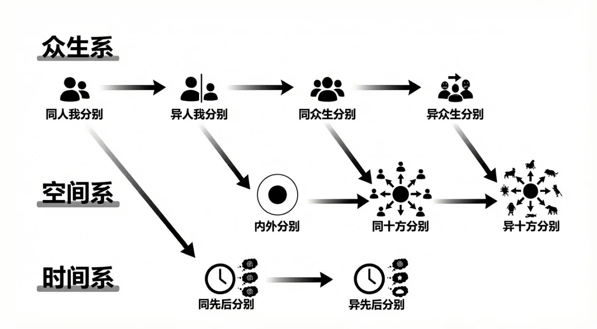
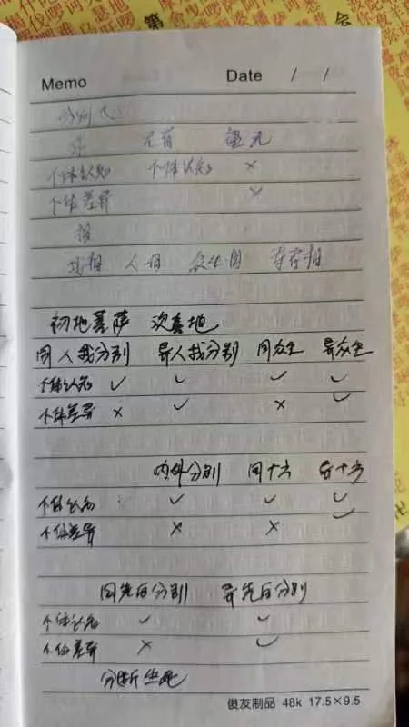
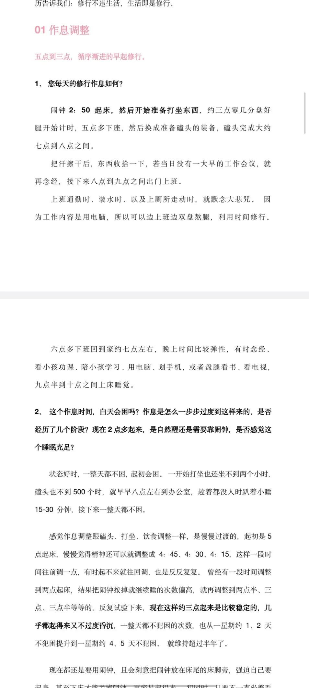
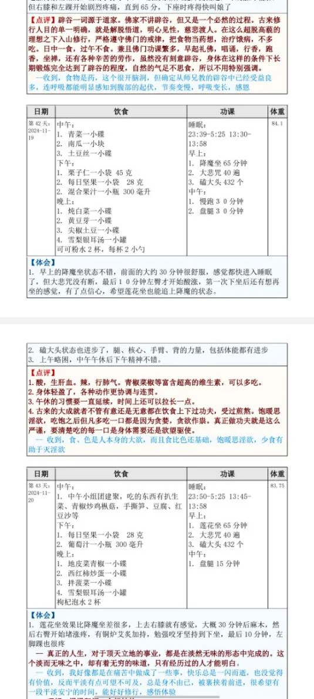

师父，自性和阿赖耶识应该不能完全等同吧？
慧日永明，自性和阿赖耶识，这种名词解释我是不知道的。在我看来，自性、阿赖耶识、根本识、第八识，这都是一个意思，就是第八识，最根本意识，我是这么认为的，我不知道你是怎么学的。
7、是不是因为凡夫在轮回里忘记了自己原本有的不变的自性，不敢相信，其实有一种存在（真如）（佛的境界），真如本身可以什么都不用干，如如不动，无时间空间无生死轮回无烦恼无明，湛然常寂，真常清静的状态，大家都不敢相信，不习惯，其实这就是所有众生本来的面目？所以执著于知道佛在干嘛，成佛有什么好处，佛还会去往更高的维度嘛，执著于这些问题其实还是因为妄想分别执著在造作？
第七，你说的对吧。成佛之后会干嘛这些问题，等自己成佛了就知道了。我也不是佛，我当下还不清楚。
现在对凡夫来说，修行不是为了成佛这个未来的目标，而是先解决当下的痛苦。活著就是痛苦，光是有生死轮回本身就是痛苦。有人告诉了你没有生死轮回的那种状态，那就先修著吧，先把生死轮回给解决了。这个的确太痛苦了，每天都在向著死亡去，一天天衰老，身体也开始出现问题。
像二十年前，我觉得身体好得不行，修为越高，到三十岁基本上快要达到很好的境界的时候，感觉像飞一样。但是回家之后，这些业、饮食等等各种方面，还有父母的问题等等，算是被业力牵引，然后感觉又掉下来了，不能保持那种状态。虽然每天都在打坐，但是没有办法达到原来的那种境界，这个时候就算是痛苦多了。只能说是痛苦多了，不能说烦恼增加了，烦恼是另一种说法，但是痛苦增加了。
年纪越大，身体开始有一些不舒服的地方。打坐的时候倒是舒服，起来走动的时候发现不像以前那么爽了，这也是一种不舒服。虽然健康是健康，但是老年人他就是没有年轻人那么爽，老年人也有很健康的，但是没有年轻的时候那么爽，身体轻便、协调性等等不如年轻时，是吧。
我现在觉得，和年轻人有一个比较大的区别，就是下咽的能力好像有点不行了，有点弱了。以前小时候看年纪大的，爸爸妈妈爷爷奶奶，他们吃饭一定要喝水，吃完一定要喝水。那个时候书上说吃完饭马上喝水不太好，现在我也是这么认为的，在饮食方面的知识上。那个时候还不能理解，后来年纪大了就知道了，原来下咽的能力有点差了，吃完有东西会卡嗓子眼，下不去了，所以不得不喝点水，很明显的有这种感觉。
还有，上厕所的时候肚子使劲也稍微差了点，等等，这种全身的机能慢慢衰退都是有感觉的，这都是痛苦。活著就是痛苦，一呼一吸都是痛苦，所以先把这个痛苦解决了。
所以佛讲小乘法的时候，前面先开始讲苦集灭道，先讲苦，至于后面成佛之后有多爽，到那再说吧，先解决当下这个问题。能解决生死就解决生死，解决不了，那先去极乐世界也好，那个世界比这个世界的肉身什么的应该更舒爽一些。哪怕是到这个世界的天界，也比人间要好得多。这个应该是我们比较朴素的修行目标。
我在书上教大家怎么发大菩提心，这是你的修行到了一定境界之后，对意识什么的、社会运转都有了认知，对佛法有更高的理解之后才能发，不是什么人一开始就能发，当下就从解决自己的痛苦开始。对成佛之后怎么怎么样这个问题，就先放一放，现在研究这个也没意义。
按你说的，就是人们太好奇了，闲不住，坐不住，就像小孩子老是说无聊啊这种词。小时候经常说好无聊啊，就是想找点事干，想打个游戏，找个小伙伴一起玩什么的，总得干点什么，要不然好无聊。
所以用这种逻辑，我们就想著佛是不是挺无聊，他什么都不干了，应该干点什么，这都是凡夫的执著。
顶礼Tai师父，最近在生活中对佛法有了些许感悟，想请教两个佛理的问题：
1、怎么看待"本自具足"，凡夫如何理解这个概念，如何在世俗当下去实践佛的教诲；
鹤归少年，怎么看待本自具足？凡夫如何理解这个概念？如何在世俗当下去实践佛的教诲？你先别说理解这个话，你就说实践佛的教诲。佛就是让你持戒，然后多行善，然后修行，戒行善行修行这个做到了，然后发愿，这个做到了就算实践佛的教诲了。你做不到那就是教诲还没有做完，或者部分完成了，或者说根本就不做。你只有坚持戒行善行修行，就算实践佛的教诲了。
本自具足这句话什么意思？就是自性，本来就是那样的，而我们是在自性当中产生了妄想之后变成我们现在这样。都是多出来的东西，导致我们在痛苦中轮回。所以本来就是那个状态，那里是没有的，没有的时候就已经是圆满了，我们是因为多出来了，所以才变成这样。
所以觉悟、成佛，这个不是从外得来的，不是让自己膨胀，而是让自己不断的舍弃，舍弃现在有的这些妄想、执著、分别，这些都放下，回到原来的状态，自性本来就是本自具足，是这个意思。
那么我们现在该做的就是把当下的、你现在有的执著一个一个灭掉，然后回到那个状态就可以了，因为我们是把现在有的东西灭掉，所以人人都可以做得到。
如果你说从外边得什么东西过来，可能有些人就做不到。因为不是所有人能得的来的，就像赚钱一样，不是你想赚就能赚得到的，全世界钱就那么多，有些人本来就苦，注定要穷，世界的分配机制就注定让一些人穷，所以你再努力，也不一定能赚钱，因为那是从身外得来的。但是我们修行是从我们已有的执著上，把它一个个灭掉，所以人人都可以做到，人人最终都可以成佛，所以本自具足。
2、 Tai师，《华严经》言：“一切众生皆具如来智慧德相”，是一切众生皆有自性，自性恒常的意思吗？其中的“众生”包含微生物（细菌等）和无情众生（植物、石头）么？感恩开示
下一个问题，《华严经》言：“一切众生皆具如来智慧德相”，是一切众生皆有自性，还有自性恒常的意思吗？是的。
其中的众生包含微生物、石头，无情众生就不是植物、石头了，无情，这个植物石头不算众生，它就是器物，器世界的器。
微生物细菌也算这个器世界的，它们都是这个世界的，像石头、木头、家具、电脑、手机这些东西都是没有生命的，就是纯粹的是我们众生的业缘所展现出来的外部的环境而已。它本身是没有意识，所以都不能算是众生。
其中这些也包括吗？都不算，这些是不算的，有人还说那我们每天吃饭什么，喝水会杀很多微生物，那算不算天天造很大量恶业？那不是。细菌和外边这个阳光什么大地都是一个系统的，只是世界运转的时候有必要的那种客观环境，都是我们的业力展现出来，和我们的业和习气当中展现出来的外境而已，这不是其他众生的意识，所以吃细菌杀细菌不犯造业。
还有吃饭吃食物这些个植物，我们吃的大部分植物都是农场里培植出来，这个吃了，它们都没有生命，所以不算造业，你要是说这些都有、这都算众生，那就问题就大了去了，那没有办法不造业了。
Tai师父好
弟子请问，阳神、中阴身与自性是什么关系？能详细解释一下吗？
您前天说我们今生的肉身是自己和别人的妄想执著形成的幻体，以我自己举例，当我专注于今生的剧本时，我的自性是什么状态？仍然处于遍虚空状态吗？还能同时感知到其它所有人吗？
自己与他人的报身之间的互动都被遍虚空的自性记录下来，谁也逃不掉，所以说因果不虚，我是这样理解的，对吧？
下一个问题，加减乘除，加减乘除这位问阳神中阴身与自性是什么关系，能详细解释一下吗？佛说那个会讲法的人都是用善用比喻来说法，自性就像大银幕一样，是银幕本身，中阴身和阳身都是银幕上的画，不是真实的，都是画的，幻化。
那么阳神是生命体，中阴身呢是一个生命体结束生命之后进入下一个生命体之前，就是轮回进入下一世之前，中间阶段，叫中阴身。在没有佛住世的世界是没有中阴身的，是这个佛这个世界有了佛住世，他就会用加持力给所有众生拉扯出中阴身的状态来。
好让你在这个时间段进行一下总结，然后再去往下一世的时候有一些准备，还有在这个时间段也会安排一些个人来进行指导什么的。关系就是这样，自性就是大银幕，它不变的。
然后这位接著问，我专注于今生剧本时，我的自性什么状态？自性不会改变任何形式，它就一直常住在那里。它不生不灭不增不减，它不会任何变化，它要说有变化的话，它就起了妄想，它就起了妄想的状态下和不起妄想的佛的状态，只有这个区别而已。
但是自性本体是一直如如不动的，就像大荧幕一样，荧幕上就算有画，那荧幕本身是不会变化的，它一直处在遍虚空的状态。还能同时感知到其他所有的吗？你感知不到，是因为你起了妄想之后，你的注意力全部被你的当下的命运和你的肉身给吸引住了，你专注在当下的命运当中，所以感知不到其他的。
所以你对当下的肉身执著放得下，你的注意力也好，情绪也好都给放下了，越往上走你就能越多的感知到其他人，到了阿罗汉就能感知更多，到了菩萨就可以感知更多，最后变成佛的话，所有众生的妄想都可以感知到，
自己与他人的报身之间互动都被遍虚空的自性记录下来。应该是记忆形成记忆，咱们就不说什么记录，就是形成记忆了，你的所有行为都会形成记忆，留到自性当中，所以逃不掉因果不虚的原因是所有自性重叠在一起，所以逃不掉。
如果自性和自性之间各有各的一片，我这边伤害，然后跑到另一边这个自性不能来伤害我，躲起来就可以了。但是自性和自性都是重叠在一起的，你一旦这样伤害其他众生，他们所承受的痛苦和恐惧都会如实地反映到你身上，你只是当下专注于当自己的命运当中，原来写好的命运里，所以感觉不到而已，在菩萨的境界里都是可以感知到的。所以因果是一直，种下因的同时就已经出现了果。
请问师父，每个人都有不生不灭的自性，每个人都是独立的个体，那么人的基因为什么会遗传？人有必要重视自己的物质基因遗传下去吗？
下一个问题，192楼，lyy123，这位问，每个人都有不生不灭的自性，每个人都是独立的个体，那么人的基因为什么会遗传？人有必要重视自己的物质基因遗传吗？基因的遗传，是我们这个物质世界的内容，而我们自性那个是已经很遥远的事情，自性层面上都是独立的个体，这和基因有啥关系？
你和你孩子有基因上是遗传的，但是你和你孩子都是独立的个体，他能生到你家里来是和你有业缘而已，有了业缘，然后就托你的肉身和你妻子的肉身投生到这里来，所以就有了物质上的这种基因的遗传。这和自性有什么关系呢？
人有必要重视自己的物质基因遗传吗？你是在问要不要生孩子这个问题，是吧？不是为了遗传基因，而是去做好事。
我以前也跟人讲过，如果是你这辈子不出家修行，那你这辈子能做的最大的最有用的成就，就是多生几个孩子，然后好好教育他们，他们在未来的人生当中能做好走好，培养一个好的人格，培养一个好的人，善人，这是能做的最好的事情。
如果是出家修行，那又是另一回事了，所以这和遗传基因不是另不是什么必然联系。为了遗传基因而生孩子，那不是那么说的法的，我们是不那么看的。
我们认为养一个孩子是一个很大的善举，是有功德，就算不能有功德，那也是有福德的事。如果你长时间不养孩子，长时间是世，以世来单位，如果你这一世不生养孩子，来世也不生养孩子，未来世都不生养孩子的话，之后你又想投胎的时候你就找不到父母了。
所以那些个孤儿，一生下来就是孤儿的人，都是有因果的，因为他曾经没有养过孩子。在这回好不容易做投胎来人道，但是却没有父母，没有父母的话，在社会越发达的情况下没有父母，那你的起跑线就越低。
社会越落后的时候你没有父母，也和别人还差不多，有父母也就那样，但是社会越发达，父母给孩子提供的那种各种扶持的那种资源，那是越多的，所以越来越发达的世界里，如果你生出来一个没有父母的状态，那就比较惨的了。
所以为了避免未来出生的时候起跑线太低，还是希望还是，我说还是劝大家能生养孩子就生养孩子。
顶礼Tai师父，请问：无始以来，每个个体意识都是独立存在的吗？“我”这个概念，会一直存在吗？如果不会，修行的意义是什么呢？
下一个问题，钟声，无始以来每个个体意识都是独立存在的吗？是的。“我”这个概念会一直存在吗？如果不会，修行的意义是什么？自性一直存在，所以真我是一直有的，“我”这个词只能用这么表达，我们用语言来传法，只能用“我”这个词了。
就这个词上已经有了人我分别是吧？但是我不用这个词，用什么词才能表达我的存在？所以我这个，“真我”是一直存在的，“人我”可以灭，人我分别心是可以灭。上边自性状态里已经没有了分别心，但是我们只能说这个是真我状态，用语言只能这么说了。
修行的意义是啥？意义是由自己赋予的，一切事情意义都是自己赋予的，自己觉得这个事有意义，那就有意义，没有意义那就是没有意义。
我们修行是最初的、最低级的意义是断苦、灭苦，因为轮回是很苦，哪怕我们每天吃饭、拉屎这个也是苦；吃饭，你吃不到好的东西，吃一些不喜欢的东西肯定苦；饿肚子也是苦；吃的太撑了也是苦；拉屎的时候拉不出来也是苦；拉稀也是苦；想上厕所的时候刚好有人在里边不让你进去；你在外边等也是苦。所以说人世间一切都是苦，我们解脱生死就是为了解决苦。
Tai老师好！关于您说的初始设定自性恒常的是来自第八识藏识，但是唯识学认为第八识也是需要转化的，并非恒常不变的本体。这个跟印度教的不变的神我，真我纯粹意识一样吗？而佛教当时用缘起论破的就是这个观点。您怎么看呢？谢谢
下一个问题，松伽院，关于您说的初始设定自性恒常的是来自第八识藏识，但是唯识学认为第八识也是需要转化的，并非恒常不变的本体，这个跟印度教的不变的神我、真我纯粹意识是一样吗？而佛教当时用缘起论破的就是这个观点，您怎么看呢？
你说的唯识学是不是有第九识？第九识叫阿摩罗识吧，他按照他的说法是先有个恒常不变的第九识，然后在这里产生的妄想就开始称之为第八识阿赖耶识也叫藏识，这样看也行，你怎么理解都可以，我说的是去掉第九识，阿赖耶识本来自有，然后在这里产生妄想，那就是成为菩萨了，没有妄想那就是佛，这样看意思是一样的，理论上都是一样的，讲的客观事实都是一样的，你怎么取名相的问题而已。
所以这个问题不值得去讨论，所以按照唯识的说法，第八识阿赖耶识也要转一下，转完之后就没有妄想了，那就成为佛了。或者说第八识阿赖耶识给灭掉了，回到了阿摩罗识的状态，那就是成佛了，这个怎么说都可以。
然后下边这个印度教的不变的神我真我纯粹意识一样吗？
这个问题在《楞伽经》里讲过，《楞伽经》里讲，佛的原文是：如来应正等觉，以性空、实际、涅槃、不生、无相、无愿等诸句义，说如来藏，为令愚夫离无我怖，说无分别、无影像处如来藏门，未来、现在诸大菩萨摩诃萨，不应于此执著于我。
对外道说的是：外道说我是常作者。离于求那自在无灭。
所以外道的这个神我和佛说的真我是不一样的，佛说的自性，佛都不说什么真我和那样的说法，后来是才提的，之前是只讲自性或者阿赖耶识或者如来藏这样的词。
那么在这里是没有人我分别，也没有执著，但是外道的处在的那个境界是有执著的境界的，所以是造作的主体，你一旦说是他是主体的话，那必然有造作的客体，所以在这里已经有了分别心，造作那就是等于是执著，所以外道所说的神我，他一直是处在执著境界了，在执著的境界里，我们就认为它是有实体的，也就是在境界上所说的认为存在著一个常作者，经常造作的、恒常造作的一个主体，在他们认为是有实体的。
但是佛教认为的无我或者是自性，自性的境界是什么都不存在的，自性这个东西是恒常存在，这个意识本身是恒常存在，但里边是什么都没有，没有造作的主体，也没有造作的客体，没有造作与被造作的能所的分别，没有分别，也没有执著，但是外道的境界是有执著的。
还有下一句，而佛教当时用缘起论破的就是这个观点。
缘起论破的是自然性，自然说，缘起是因缘和合而形成，有一种外道说法是这个世界自然就存在，本来就这样，所以用因缘说来破自然说，然后有些外道又说起因缘说的时候，佛又说这个世界是自然的，他是两边都破的。
然后在《楞严经》里说非因缘、非和合、非自然性，那么神我，外道的神我，他的确是他们认为是超越因缘而存在的，独立的个体，他是恒常造作者，是造做的主体这么看。
所以佛又说你既然作为造作的主体，那就有了造作，那就是你的存在是靠因缘，这个造作的因缘来展现出来的，那就是用因缘说来破他的神我，因此说你的神我独立存在这个说法是错误的，因为你得有造作才能展现出来，没有造作这个因缘你怎么展现出来？所以用因缘说来破它，这个说法也是对的。
还有不知道你有没有把两本书都仔细的看一遍，我们不跟其他外道比较，你这样和跟其他外道说辩论或者讨论这个问题，咱们之间是都信佛的人之间是可以理解的。我理解，但是真的跟外道去讨论义理的话人家有的是说法，人家完全可以一直说到你没法跟他再继续沟通为止，他们也有他们一套辩论的体系。
哪怕是你去找小乘和尚们讨论，我也认识很多不少小乘和尚，他们认为意识就在身体里，你跟他说再多也没有用，反正你说意识遍虚空，他说意识在身体，然后他举各种例子，为什么意识在身体等等，你这个没有办法跟他深入的辩论。因为大家已经，就算就按照我们的说法就深著我见，但这个说得越多，那已经不再是义理的问题了，而是争输赢的问题，所以对外人就不需要去辩论这些问题，咱们就修我们自己的就可以了。
Tai师父晚上好！请问：
1、众生与众生，佛与佛之间，最后到底还有没有可以分别的东西，或者说标识他是他你是你我是我的东西，是每个人的各自经历的情绪的记忆吗，但好像诸佛同体都可以读取别人的记忆，众生还有业的不同，佛佛之间没有业是不是就是只剩下曾经的妄想也就是愿的差别了。（补充一下，我知道佛菩萨无我相无人相无分别心，我指的是还有没有客观上的分别。）
下一个问题，99楼元亨利贞，众生与众生，佛与佛之间最大的区别？区别就是记忆。你们曾经的经历不一样，这就是不同的地方，其他都一样，愿也是，可以有差别，但是大愿都一样，就是普渡众生的大愿，其他细节上的愿可以有，但是大愿都一样。
人这个自性不就是有三个功能吗？一个是起妄想，一个是可以记忆，还有一个是愿。记忆和愿不是妄想，它是没有，连实体假体都没有的，妄想它是没有实体，但是它有假体，对我们可以造成负担，但是这个情绪这个什么，愿和记忆，它是实体假体都没有，对我们不会造成负担。最后剩下只有自性的时候，就靠愿和记忆来区分是谁是谁。
放生的小泥鳅，每一个个体是完整的自性吗？师父之前说小昆虫、蚊子可能是被打散的阳神碎片附著？
莫西，放生的小泥鳅，每一个个体是完整的自性吗？应该是。
小昆虫、蚊子可能被打散的阳神碎片附著？是的，有些小动物、小昆虫有可能是完整的意识，但是也有很多是打散的碎片。佛经里说了，有可能会依附于小虫子，遭受拍打的果报。每一个都不好说，没有天眼来观察的情况下，这两种可能都有。
师父好！《坐禅2》写道“诸佛同体指的是：所有众生的自性全部重叠在一起，每一个自性都是独立的个体，但是他们以重叠的方式存在”。句中“每一个自性”的说法，意思是自性彼此独立，自性可数，自性中有一和多之分吗。弟子困惑，请师父开示。
莫文路，自性中一和多之分？说实话我都没明白你在问什么。我说每一个自性都是独立的个体，然后你问自性中有一和多之分吗？
那你的意思是这个世界只有一个自性还是无数个自性，是这个意思吗？那我就告诉你这个世界有无数个自性，我们都是独立的个体，我们每一个都有独立的自性。
师父好，最初的佛都是独立存在的个体，都有恒常的自性且相互重叠，哪么是有量的还是无量的？
空壳建房，按理说有量，因为自性是不能出生的，它不生不灭，它一直存在，是吧。它不能消灭也不可能再出生，那么肯定是有个定数的，但是具体有多少，到目前没有办法知道。原因在书上好像说了，还是在回答问题的时候说了。
师父，三魂七魄能够分散到各处，这个不太理解，请您给讲一下呗。
奔跑吧兄弟，我们不讲三魂七魄，只讲一个完整的意识，佛教里是没有意识分成三魂七魄这个说法的。只不过干了一些坏事的话，阳神会被打散或者打成多个碎片，这个是有的。但是这个坏事不是一般的坏事，特殊的坏事才这样，这就不便讲了。
分散的阳神会各自投胎到不同的众生身上去，分裂的少的话就是小动物，阿猫、阿狗也有可能；再往下少，可能变成老鼠什么；再往下少，分得越散，像个碎片一样，那样的话就会投胎到各种小飞虫、虫子之类的。
Tai师父好，请问Tai师宣化上人说的“性化残灵”是什么情况下才会发生的事情呢？感谢Tai师。
下面是宣化上人讲的“性化残灵”的一段。
所以一个人投生去做畜生，不是一个人做一种畜生。他会分开：一个人做马、牛、羊、鸡、犬、豕，这是身体比较大的，有灵性聪明一点的畜生。这一个人又可以变成七种的畜生，因为经过分开了，这叫“分灵”，便性化灵残。
下一个问题，渡云舟，意识被肢解的问题，这个在以前记得有说过，可能在外边没说，意识肢解是有前提条件的，不是什么意识都可以随便肢解的，只有犯了一个特定的罪才会被肢解，其他情况下是不肢解的，其他情况下还是完整的意识去投胎。
所以这个世界有很多被小动物被意识肢解之后投生的，尤其像蚊虫之类的，被肢解成很多的碎片来投生的，因为他们造了很大的恶业，某种罪，然后他就被肢解，正常情况下是不被肢解的，其他一切罪都不会被肢解，哪怕像历史上的白起一样坑杀四十万人，他意识也不被肢解，据说他在地狱里什么泡在水池里还是粪坑里，总之就是完整的，只有犯了特定的罪才会被肢解。
但是在宣化上人说的内容里，我也看过，他说是因为性交，和多个异性性交之后意识被分割了，这个应该是他没有看到完整的业，没有看全完整的业。在他的境界里只能看到一些短暂的业，可能看到前面几世的业，他就以为是在那个几世的业当中的确看到这个人和多个异性有了关系，然后他以为这个业导致了这个事情。再往前看或者说他一生的业全部整体的看的话，其中最根本的罪业就不是这个问题。你一个人和多个异性发生关系，比如说是男性的话，玩的花下辈子大概率会投胎成女性，再花就可能投胎成动物，但不会意识被分割。
好了，这个问题就讲到这里。
师父，请问是否三界六道每位有情众生都有一个完整自性呢？小鱼、小虾这样的小生命也有完整的自性么？有哪些众生的自性不完整，是由意识碎片或者其他形式组成的呢？
下一个问题，商业与经济洞察，大部分动物你可以当做是有完整自性的，也有的是因为罪了，犯了很大的罪业，前面已经讲过了，这个罪业是特定的罪，不是我们泛泛随便能了解的罪，那样的罪才会被分割，其他就不会分割了，所以绝大部分情况下我们可以当做是完整的意识。
当然那些小虫子之类的也有大概率是分割的，特别小的动物。也有一些说法，这样泥鳅那也算是小的吧，但是杀了一窝泥鳅之后，就发现那一窝泥鳅每一个泥鳅都是一个完整的意识，也有这样的说法。
4、请教师父，一般被打散神识魂飞魄散，是不是都是和毁谤佛法障碍别人修行佛法的罪业相关？
还有下一个问题，一般被打散神识的魂飞魄散的这些是和障碍佛法修行，这些罪业相关吧？是的。
顶礼Tai师父，请教一下关于记忆和自性的问题。我理解，记忆是自性在轮回或者走出轮回成为佛之前的经历，而且是外界与“我”互动才会产生。那么成为佛以后，您讲过记忆是一直存在的，如果成为佛，自性都重合为一体，因为已经没有分别你和我了，那记忆是不是所有的佛都是一样的？如果记忆存在，那它是什么形式存在的呢？因为自性本身已经没有物质，记忆会脱离自性独立存在还是成为自性的一部分呢？感恩Tai师父。
暮鼓H晨钟，关于记忆的问题，以前说过了，记忆是不会成为负担的。
记忆和妄想相比，记忆是没有实体的，妄想相比而言反而是有实体的。就像我们看到这个世界真实存在一样，从本体来说，妄想也没有本体，所以叫无生，因为它没有本体，所以可以被灭掉。但是记忆比妄想还深层次的是，它没有可以被灭掉的东西，只能这么说，它也没有实体。还有，愿和记忆这两个完全没有任何实体的东西存在。
这个东西为什么会这样，这也算是终极问题，没有什么答案，记忆就是这样。就像我们活著，年纪大了，记忆多了，但是记忆多了不影响我们正常的生活，记忆多了会让我们变得更成熟，不会对我们的意识造成负担，是吧。
佛也一样，记忆多了不会对他有任何影响。在自性重叠的情况下，佛与佛之间的记忆可以互相读取，但是个人有个人的记忆，它不一样，它不会互相串的。
在意识层面上，佛没有我相人相，但是记忆是自己的还是自己的，不可能把别人的记忆当作自己的记忆来看待，在这里就已经有了我相人相了。
就是可以读取其他佛的记忆，只不过自己的还是自己的。要不然自性全部重叠在一起的情况下，所有记忆都混乱了。佛讲的那么多前世的故事，你能说哪个是他自己的，哪个不是他自己的，你能分辨得了吗？他能分辨得了吗？
虽然在《楞伽经》里说了，佛可以拿别人的记忆讲，在佛的境界里是可以的，这不能算是妄语，这只是一个度人的方便法而已，但是个人记忆还是个人的记忆，我也只能这么说了。
这个问题可以说是没有答案的，这个世界本来就是这样，就像自性恒常一样，它本来就有这种状态，要不然怎么称之为意识。意识一个特点是它可以生起妄想，还有再多说一点，那就是它可以有记忆。
那它是什么形式存在？没有任何形式。
因为自性本身已经没有物质，记忆会脱离自性独立存在，还是成为自性的一部分呢？它是存在，但是它没有任何物质，所以也不能脱离自性而存在，它是存在于自性里的，只不过它没有任何东西而已，没有存在的任何形式而已。不像妄想，妄想和记忆相比它至少还是有东西的。
这样太深层次的问题、太高端的问题，我建议你还是先把自己的修行修好，等你成菩萨了或者成佛了你再看，有些问题你就知道了，原来就这样，没有什么更深层次的。
以前也有人问，成佛之后会干嘛，我还没成佛，我也不知道成佛之后要干嘛。我只知道这些佛们一直提供加持力，说明至少他们还在，一直在干那个事。之外他们会进入什么更高维度，再比佛更高维的什么空间、什么环境，这个就不知道了，这个只能自己成佛了才知道。
2、愿力和记忆也属于意识的功能作用。是否可以这样理解:愿力和记忆虽属于意识作用，但并不和众生向下堕落有关系;此二者不属于妄想、分别、执著这个下跌系统。
自己觉得很幸运能接触到师父的法;也祝福Tai师父与母亲健康平安。感谢Tai师父。
是的。愿力和记忆它不是妄想，所以不会给自性带来负担，但是它的确起作用，愿力有和没有的确有差别。
当下我们这个世界的人认为，任何信息存储肯定有一个物理上的载体，物质性的载体，像电脑硬盘一样。所以什么阿卡西记录是宇宙的边界线上，宇宙大球的边上，外层的膜上留有记忆信息什么的，那么的说法。
实际上记忆本身没有实体，愿也同样没有实体。和妄想不一样，妄想没有实体，但是有假体，我们只能这么说，它没有本体，但是有一个的确会给人产生影响的假体。但是愿和记忆连假体都没有，它就是这么存在，不以我们可以感知的任何形式存在，也只能这样说了。
但是佛在这个问题上，并没有明确的细细地跟大家解释，因为光是有和无，还有空无等等这些概念，你要解释已经够繁杂了，对人已经够繁杂，普通人理解起来已经很难了。在这里你又加入记忆、愿这些内容，就可能混淆，有和无之间已经混淆很大，所以可能佛就没有把这些问题都想清楚。
问题2、师父您说听经闻法即使当时不理解、记不住，也会存到阿赖耶识里，将来可以用。请问师父，凡夫得修到什么程度，才能调用呢？这跟宿命通是一回事吗？
谢谢师父。
下一个问题，听到的所有的内容都会存到阿赖耶识里，将来什么到了该用的时候就会拿出来，请问凡夫修到什么程度才能调用？这个不用你管，不用你去想，你只要打坐修到一定程度开始有障碍了，觉得这个不知道该怎么做了，开始迷茫的时候，你曾经如果听到有关的法的话，你就自然而然就会想起来了。
当时你不知道这个什么意思，但是修著修著突然脑子里蹦出来，原来他说的是这个意思，以前他说可能这段时间你都没从来没去反复想过，但是突然间就会生起这样的想法，以前听某某人说是这个意思，现在那个时候没听明白，但是当下一下子悟了，有这样的事情。
宿命通是一回事吗？宿命通不是一回事，所以只要你听过了，未来会修行的时候，自然而然到了该悟的时候就会悟了，所以你不用太刻意的管，也不用去想这些事，你听过就可以了。
2、而记忆，愿望没有实体也非假体，那么它们是可以产生的，但不是假体所以无从消失，不是实体所以没有负担。那么自性的记忆其中的原理应该与电脑存储信息方式就是不同的了（我们的记忆应该不是存储在脑细胞里吧。）那么愿望也不是电脑程序的命令行（愿望是我想要什么什么，而电脑只会问你想要什么帮助，请输入你的想法。）打个比喻把，自性是水，妄想是波浪，记忆就是每个海浪浪花曾经的样子，而愿望大致有二种，一种基于短线操作的推波助澜，一种致力于长期的风平浪静。请问老师是这样的理解吗？
第二个问题，你对记忆与妄想、大愿这些个理解，我想说，意识是意识，非意识是非意识。你说的自性是水，水也好，电脑也好，它都是死物，它都是我们创造出来的死物，死物和意识是另一回事，这两者没有办法进行比喻。
意识它有一个重要的功用，它就是可以自己能起妄想，忽然能起妄想，没有缘由的能起妄想，但是电脑和水，水要起波，它肯定是有波、什么浪、风，总得有了，它才能起波；然后电脑要储存，它肯定得输入什么东西它才能储存。而且电脑的储存都是有实体的，任何电脑储存起来肯定有硬盘、实体的，但是记忆是没有实体的，它也不是妄想，它可以存储到这个自性当中去，但是没有任何实体，所以你没有办法用物来拿它比喻。
愿望也如是，没有任何实体，但是我们有愿望，所以这个东西也没有办法用物来比喻，你只能这么理解了。这就是意识的特点，这个自性，这个意识它的特点，它特有的属性和物无法相比的。所以我们通常认为我们的意识是大脑，大脑形成我们的意识，这样的思维本身就已经错误了。
这个是物、物理产生什么脑细胞的什么电讯号什么的，以为我们是意识，但实际上根本就不是。
等觉菩萨灭掉最后一个妄想成佛，那么最后一个妄想是佛堕落前产生的初妄吗？
顾霞，这个不一定是。佛堕落的时候最初产生的妄想是一，然后出现二，然后三。但是往上灭的时候，也有可能是把一给灭掉了，这样的话二性质上会和一变得一样，但是它内容不是一，有可能不一样，但是性质还是一样。
所以等觉菩萨有业的话，为了对抗业而一直保留著那个妄想，那这个妄想就已经不是最初的那个一了。所以最后灭掉妄想，大概率都不是最初的妄想，不过妄想的性质还是一样的，只是内容不一样而已。
1、第一个佛在堕落的时候打的是什么妄想？
wxpcjrjgcs，我也不知道，你问问他去吧。
师父吉祥，请师父能发再开示下什么是佛？看书里说第八识无妄想时就是佛，这是叫佛的法身吗？是一种能量吗？说佛正遍知什么都知道，为什么这种无妄想的第八识可以有种种不可思议能力呢？感恩师父开示
下一个问题，RR，这位问什么是佛？
看书里说第八识无妄想时就是佛，这是叫佛的法身吗？也可以这么说。是一种能量吗？不是。到佛的境界里不讲能量，就什么都没有，意识里什么都没有的状态，它怎么可能算能量，说佛正遍知什么都知道，对。因为所有的自性重叠在一起，你只要自己的意识里没有妄想，自己没有妄想的话，就可以完全的读别人的妄想，完全的感知到，所以叫正遍知。
为什么这种妄想的第八识可以有种种不可思议的能力，它本来就是这样，谈不上种种不可思议的能力，第一个是它能起妄想，第二个它知道所有其他众生的妄想，这是自性的能力，它也可以有记忆，可以有愿，这些就是自性的妙用，我们都是这么说的。它本来就这样，你不要问为什么这样，再问就没有什么可回可往前推的地方了。
这个世界本来就有自性，你问我自性怎么来的，自性从哪来的？为什么会有自性？这样的问题谁能回答的了，是不是？所以说这叫初始设定，本来就这样，世界最初本来就是这样的，所以自性本来就存在的时候，它就有这样的妙用，它可以起妄想，有记忆，可以有愿，在自性全部重叠在一起的情况下，可以自由地读取其他众生的妄想。
继续回答问题，前面这个是，这个二十分钟，前面是群主给的问题。
我看这些个公众号的问题，它有一些是不重复的，群主可能是忽略了一些问题，咱们看公众号的问题。我就已经回答过的问题我就不回答了，回答这些个没有回答的问题。
师父，今天在网上看到这个，其实周围也经常有遇见自称开悟的，这位博主算比较“实在”，没说自己开悟，他们这种修的是“唯识宗”还是“禅宗”，为啥会觉得虫子是我，周围的人也是我，是否能解析一下，他这种感悟是否符合佛法呢？
网上看到说自称开悟的，我读了一下你所说的这个，他说他感觉到世间所有人都是我，这好像是他的一种错觉，修到一定程度的话，自我的认知会降低，我见会逐渐降低，就是我的执著降低。
这个时候会慢慢感觉到别人的一些痛苦，不是看到，而是感受到。别人痛苦的时候，貌似可以共情，这个时候我们用语言表达的话，是因为我感觉到他的痛苦了，所以感觉上他像是我一样，类似这样的感觉。
但这也是凡夫阶段，以前讲神通的时候讲过的。神通一开始，是从我的立场观察别人的时候，这个时候能看到他当下的一些妄想，如果你的意识覆盖对方的时候，能看到一些更深层次的他内心的一些妄想。然后再往上，像菩萨境界，可以观察和他有缘的其他众生的妄想，这叫业，能观察到业，从而能判断这个人的整体状态，这叫法眼。
所以这个是每个阶段不一样的，他这个算是一种最低等的、低端的。以前也讲过，你修到一定程度的话，佛菩萨会给你加持一下，让你会提前体验一下某个境界，更高一段的境界，体验一下你就知道了，所以这种状态应该也是一种加持。
后面他也说了，他学地藏法门，然后出来传播了，就有了这样的感应。我宁肯把一些人们说的感应都往好的方向去理解，不喜欢否定别人，因为否定别人本身就是内心阴暗的一种表现，看到啥都非要剖析个是非对错，这本身就不是很好的心态。
所以别人说的一些境界，我都愿意把它往好的方向解释，或者说我是这么看待的，而且我也不喜欢用怀疑的眼神去看。我看周围很多人都喜欢怀疑，先问你，“你是怎么知道的啊”,“你是不是骗啊”，就这种心态，我是很少有这种想法的。
他说这样的内容，我也认为他说的是他自己真实的感受，而且他既然说地藏法门前面做过了，所以我相信他说的是真的。
还有关于《坛经》的解读，这是能见万物的佛性，他是这么说的，其实是看到世间一切都是假的。我说了，这个世界一切都是假的，这么告诉你，你也接受这个想法，你也接受这样的观点，认为这世界一切都是假的，这样还不够。等你修到某个程度的话，一下子看到，能感受得到，这个世界都是虚幻的。那种感觉，是难以用语言表明的，所以我觉得他说的能见万物的佛性，就是他的那种感受吧。
2000年刚过的时候，那个时候我还没有正式开始修行，但是，有一天早晨起来，突然间感觉到，这个世界好新呐，完全都是新的一样。以前东西都是旧的，哪怕是新的东西那也是旧的，都是用旧的物质来拼装而成的。但是，突然那天感觉到，这个世界好像都是新的，为什么会这样呐？
当时是有一种感觉，之后就过去了。后来修行之后大概知道了，因为2000年那个时间点是重新设计，往后续上文明进程、文明剧本，然后物质世界也算是有了一次格式化，谈不上全部格式化，是一种翻新。然后就有那么一种感觉，这也算是后知后觉吧。所以你对物质的某种感知能力也是和修为相关的。
你当下面对著你的手机正在听，你觉得这个手机应该是假的、空的，但是在你的意识深处还是认为它是真实的，这个是没有办法改变的。等你的修为到了，才能真实地感受到它真的是虚妄的东西，有那么一刻，这是悟的。所以我还是相信，他说的都是他真实的体悟。
3、众生看著忙忙碌碌，在自性的层面本质上其实没动，只是一直在想，众生互动本质都是想法的互动，在物质世界制造东西都得先想好再做，做出的东西包括物质本身，本质上都是各种想法的产物，这样理解对吗？
下一个问题，你的理解是对的，自性本身不生不灭也不动，如如不动，我们都这么说，佛是如如不动的，所以一切的都是，一切我们看到的世界所动的都是妄想和合而成。
师父吉祥！《六祖坛经》说：“何其自性，能生万法”，佛说“一切法无生”。怎么理解？请师父开示！谢谢师父！
祝丽娜，以后打算讲《六祖坛经》，你这样单拎出一个问题来问，我还真不好回答。
佛说“一切法无生”，这是从自性层面上说的，这个自性不是指我们意识，而是本体，这个在《楞伽经》里反复说的，本体。一切法无生，一切法就是妄想，妄想没有本体，既然没有本体，从本体的角度来说的话它就是无生的，可以这么看的。
“何其自性，能生万法”，就是自性能生万法的意思，这里的自性就是我们最底层的意识——阿赖耶识，所以自性是可以生万法的，可以生起所有妄想，应该这么看的。
顶礼师父，弟子请问：一切唯心造，诸法唯识，意思一样吗，这里的＂心＂与“识＂都是指阿赖耶识吗？师父能否举例解释上面两句并讲讲其运作过程和原理？感恩师父开示，祝师父法体安康！
水天一色，一切为心造，诸法唯识，意思一样吗？就算一样吧。一切唯心的时候，唯心造里这个心指的是自性，诸法唯识里的识，也可以看作是自性，都叫阿赖耶识。
具体的过程原理运作，就是妄想不断增加。它的逻辑在第一本书里讲过，你去看看第一本书，好好看看，妄想、分别、执著都是怎么来的。第一本里重点讲了执著，第二本里把分别心也讲了，妄想按照《华严经》里的也讲了，你先把这个看一遍再说。
顶礼Tai师父，您在书中讲了终极佛法，讲了佛堕落到凡夫的全过程。讲了菩萨的十一种分别心，讲了阿罗汉的九种分别心，讲了凡夫的执著心和三界二十八天的演变过程。这里我们说，在三禅以上，众生之间没有互动，那么都是自己静静地在打妄想在做梦，但是为什么每一个自性做的梦都是一样的过程呢？都是从菩萨的十一种妄想，到阿罗汉的分别心，再到凡夫的执著心。为什么都是一样的这个堕落的过程呢？
Tai师父，您在书中也说过了，佛菩萨在分析凡夫对境的行为的时候也做不到百分百准确，因为具有随机性。并且您也讲过阿难的故事，这个故事也充分说明了新妄想出现的内容是具有随机性的。但是为什么具有随机性的妄想的发展，却都按照一样的妄想，分别、执著这样的过程发展下来呢？会不会有另外一条堕落的路径呢？
牧羊少年571，妄想具体的内容可以不一样，但是妄想的性质都是一样的，分别心也是，执著也是，性质都是一样的。
就像我们建房子一样，我们建十层、一百层的房子，一层一层往上建，每一层里边的装修可以不一样。但是这个房子要建一百层，那承重的规则、承重的设计肯定是差不多的，不可能用完全不一样的方式再建个一百层的楼，承重的方式、构造应该是差不多的。
妄想都是这样，妄想、分别、执著，分别也是妄想，执著也是妄想，它们的性质都是一样的，所以按照性质来看，这个叫分别心，这个叫执著心。至于它的内容，可以有点不一样，但是性质还是一样的。所以说众生都是一样的众生，在性质上都是一样的，没有什么区别。所以度人的方式也是，大的方向是一样的，不可能有太大的区别。
请问师父，“八识转六识”是如何做到的？
第二本书里讲到十地菩萨当中有一地，他知道了所有的一切——世间万法都是妄想和合而成，就是最初始的那个妄想，最小的那个单位。他只要悟到这个之后，就可以拿这个妄想组合成所有他想要的东西，这个能理解吧。
你只要能造出乐高积木最小的那个积木，你就可以用这个积木拼出各种你想要的东西，六识世界就是这样拼出来的。所以你能悟到这个世界最底层元素的话，你就可以拿这个底层元素拼出来任何东西，这叫八识转六识。
所以菩萨有神通，在这个世界显出任何你能看到的形象或者看不到的景象，甚至可以入你的梦。你想实现这种能力还得继续修行，修到至少八识境界，也就是菩萨境界。
师父好，万法归一，一归何处？和众生都有同样的恒常自性且相互重叠是一个意思吗？如果自性恒常的个体是可数的有量的，这个定量产生的原理是啥？
go河南聚能，万法归一，一归何处？和众生都有同样的恒常自性，且相互重叠是一个意思吗？这个随便你怎么理解。万法归一，是最核心的、最终极的理论，可能最底层的真相就只有一个，应该是这个意思吧。
如果我们想再把它拆解开来，把法当作佛法里的妄想、分别、执著的统称。“法”这么理解的话，万法归一，一就是最底层的妄想，最小的元素，所有的我们看到的一切世界都是由最小的一个个妄想和合而成。所以你把它打散了，那就是一个个最细小的妄想，一归何处，那一只能回到自性当中去，一就是从自性当中产生的。
如果自性恒常的个体是可数的，有量的定量产生的原理是啥？我们也只能这么推理，因为自性不能产生也不能消失，它肯定是有定量的，如果它能产生出来，也可能消失，这个数量应该是变动的，但是它既不能产生也不能消失，只能当下维持的自性的总量，它就在那里，是吧？
理论上是这样的，但是佛也不知道具体有多少众生，因为只有产生了妄想，他才能观测到，有妄想才能被观测到。
成了凡夫再修回到佛的话，他没有妄想的情况下观测不到，但是他在凡夫的时候留下的那些记忆，其他佛也可以共享，所以根据记忆也可以知道有这么一个自性，他也能知道。
但是如果一个佛从来没有起过妄想，他一直维持在佛的状态的话，其他佛是没有办法观测到他，所以总量是多少，这个就没有办法算出来了。貌似是新的众生又出现了，但他本来应该是一直存在的，只是一个没有起妄想的佛，后来起了妄想，理论上应该是这样的，而且对于我们来说这样的问题有点太遥远了。
是不是这样我也不敢打保票，只能是从逻辑上推理的话应该是这样的，所以我们还是把重心放到当下的修行就好。
顶礼师父：
1、弟子脑子里明明想得很清楚，但是一张嘴就没办法说得那么清楚，这是什么原因？
就是你嘴笨呗，嘴和脑子是两套系统。脑子可以有直觉的认知，脑子是两个思维模式，一种是感性的，一种是理性的。理性是靠逻辑来思维的，感性是直觉的，而真正的智慧都是从直觉来，你知道就是知道，不知道就是不知道。
一干这个事情你直接可以洞悉到它的本质，那就是有智慧的人。你知道了再把它用嘴说出来，这个是靠理性思维把它给逻辑展开，用语言组织好，然后说出来。
所以你脑子知道了，那说明你的感性智慧方面还是高，但是你没有办法把它清晰的说出来，说明你理性思维还是差一点。
理性思维是需要训练的，逻辑思维都是靠训练出来的。就像我现在讲法，比去年要讲的溜一些，因为去年已经很久没有跟人这样讲很多话了，所以嘴巴很笨，舌头都打结，说不利索，但是反复地说反复地说，说了一年多。
有些内容是提前在脑子里过一遍，我得想好怎么说。有些内容直接说的。你只要反复练习一段时间，语言组织能力会有所提高，尤其逻辑思维能力，那就能说，这个不是什么大问题。
师父好。
问题1、师父您在讲心经的书里说：“颠倒梦想，也可以叫颠倒妄想。我们凡夫的第一个颠倒妄想，就是认为肉身是真实的自己。事实上，我们所看到一切都是我们的梦境。”
师父，做梦的时候，梦里的东西都是假的、是颠倒妄想，这个好理解。可是醒来之后，现实里的桌子、椅子和其他众生等，不都是“客观存在”的吗，怎么也“都是我们的梦境”呢？请师父开示。
这位嗡判du，第一个问题，讲经的时候讲到颠倒梦想，然后这位知道了在梦里是颠倒梦想，但是现实里不是都是客观存在的吗？怎么也都是我们的梦境，现实怎么是颠倒梦想？他这个理解不了。
那么你在梦里，你在做梦的时候，你能知道你在做梦吗？大概率都是不知道的，梦里知道自己在做梦，这个也是需要一定的修为的，这叫“清明梦”。有些人天生有这个能力的，但是绝大部分人都没有这个能力。梦里你是不知道你在做梦的，梦里有感觉、什么想法、有痛苦都有，但是你感觉不到。
那我们现实也是这样的，看梦里有山河大地、有别人、有动物，别人和动物攻击我们的时候，我们还会感到痛苦，肉身也会感到痛。别人和其他动物还有什么山河大地、宇宙、星空，这些都是梦里面产生的，是吧？这都是我们的梦境，是我们意识创造出来的幻境，这个能接受，那么为什么不能接受我们当下这个世界是幻境的真相。
你可能看上去它是真的，这就好比你在梦里不知道你是，不知道你在做梦一样，我们现在绝大部分人也不知道我们在做梦，这个你是意识不到的。
现在佛告诉大家你们都在做梦，我们信佛了，我们接受这样的观念。但是很难从意识深处里，由心的认为这个世界是假的，很难起到，想，很难生起这样的观念，这个是很正常，所以我也理解你的想法。
我们，先从逻辑上想通了这个事，梦是假的，梦里出现的所有东西那都是我意识里创造出来的，像有天、有地、有天地宇宙，这些这么大的大环境全是梦里创造的这种环境，而且我在梦里也是一个小肉身的，还有其他，其他众生还会攻击我。
那么我们现在所做的，现实，称之为现实的梦，逻辑上是不是也一样。只不过这个梦和那个梦，我们自己的梦，差别就在于我们这个梦是所有人，所有有缘众生，和我们有缘的众生的共同的梦，所以它不容易醒来。而且就算我醒了，别人不醒，别人也会从他的梦里的执著把我们拉进这个梦里，所以我们还得度人。
你在逻辑上想通这个就可以了，不可能一下子听完之后由心而发的，一下子就悟了。
你看惠能，像那样的人，他看到《金刚经》一段之后有所悟。一般人你只是逻辑上能想通，那叫理悟。你能理悟，然后坚持修行，等你的修为到一定程度开始打坐了，对这个世界的认知慢慢改变，然后感受也变，逐渐地感觉这个世界的确是假的。
尤其是你能入定的时候，那个入定，定中的状态反而是真实的，刚入定的还不是。刚入初禅时，大部分里边全是幻觉，等你开始三禅、四禅的时候，那个境界里才是真实的世界，然后这个世界是全是梦境。然后从三禅、四禅到，再到无色界定，再到阿罗汉的时候，你会发现前面又是假的，全是幻境。
所以首先我们从理悟，道理上这么相信，这样就可以了。你不需要非要一下子就把它当作真实的那样，从由心式的认知，这个不需要的，而且一般人也做不到这个。
2、阿赖耶识清空即为佛，这么理解对吗？
下一个问题，阿赖耶识清空即为佛这么理解对吗？
也可以这么说，阿赖耶识是不生不灭的，但是里面的妄想你把它全部灭掉，那就是佛了。
师父好！
问题1、师父您在解读《金刚经》的书里说：
【佛把外部的客观世界和内部的意识分开来讲——外部有真实的众生，但是在佛菩萨的意识当中没有众生分别心，也就是没有四相。】
【“众生即非众生”也是同理。在这里我们要灭的是意识里的分别心，众生是客观存在的，不能被消灭，但是可以被度成佛。】，
但还说【我们凡夫的第一个颠倒妄想，就是认为肉身是真实的自己。事实上，我们所看到一切都是我们的梦境。】
众生是客观存在的与众生是我们的梦境，这个感觉有点矛盾呢，该怎么理解呢？（上次问了您关于梦里醒来后的现实为何还是梦的问题）
下一个问题，261楼，嗡判du，这位问，师父您在解读《金刚经》里说，《金刚经》书里说佛把外部的客观世界和内部的意识分开来讲，外部有真实的众生，但是在佛菩萨的意识当中没有分别，众生分别心，也就是没有四相，众生既非众生也是同理。在这里我们要灭的是意识里的分别心，众生是客观存在的，不能被消灭，但是可以被度成佛。这段没有问题吧？可以理解吧？
但还说我们凡夫的第一个颠倒妄想就是认为肉身是真实的自己，事实上我们所看到的一切都是我们的梦境，这个有问题吗？众生是客观存在的，众生是我们的梦境，这个感觉有点矛盾了。
众生，众生他们的自性都是客观存在的，世界有无数个自性，具体有多少个应该有个整数，但是不知道。有个数我们可能，我没有办法知道，所以每一个自性是一个众生，这样的话这个是众生是客观存在的。
众生是我们的梦境，客观现实是这样，但是大家都在一起做梦，所以梦里看到他们也在我们的梦境里，我自己的梦境里，我看到了你，你是在我梦境里的众生，这也可以理解吧。
但是你是有自性的，你是客观存在的一个自性，自性里产生的产生出来幻境，妄想分别执著，现在形成你肉身让我看见了，这个是幻境，这个是我的肉身，也是我的幻境，你的肉身是你的幻境，咱俩在做同样的梦，交错在一起的同样的梦，所以相互都能看见。
实际上我们的肉身都是幻境，都是我们在梦境里看到的。我们的真相，我们的本体就是自性，没有妄想的状态称之为佛。这样解释能理解吗？这个感觉有点，这样解释还理解不了，那真有点难了。
这个世界的真相和我们意识的真相，这两者先区分开来去讲，这个世界是有无数个自性的，无数个自性，然后我们脑子里产生的分别心，它会产生妄想，分别心就是一种妄想，这让我们往下跌落，如果没有我们分别心的话，那这个客观存在众生还是众生，只不过我在意识里不去分别他，不去分别他。
你有没有这种感觉？比如以前书里也说了，拿细菌举过例子，细菌是一个一个的吧，但是我看不见的我不去管它，我在我认知里细菌就是一群生物而已。那佛的意识里菩萨的意识里，看所有众生它就是一群众生而已，但是在这里我说众生的时候，他已经有了众生分别了，他就是一种妄想，一坨混杂在一起的妄想。
从菩萨的意识里看，所有众生的妄想都从我的意识里反映出来，但是因为我没有分别心，人我的分别，就是感觉所有的妄想都是我的妄想，但是我又控制不了它，因为它不是我的妄想，你能理解这样的感受吗？
有，我坐在这里静静的感受我的身体，我闭著眼睛打著双盘静静地感受我的身体。身体里有一处很痛，很痛但是我却控制不了这个痛，它一直痛那怎么办呢？它一直痛，我自己感觉控制不了它，它的存在是客观存在，但是我又不能控制它，这个时候我就试著变成一个小人，进入我的身体里去观察这个痛处，然后发现原来这痛处也是一个小人，我把他度了，让他从我的意识里消失，让他成为佛。
然后在我会再回到我的肉身状态，我的打坐的那种状态时候再发现痛处已经消失了，不那么痛了，这是佛的状态，这是佛菩萨的感觉，就是这样，菩萨的感觉就是这样。
所以菩萨也是为了自己，也是为了众生，同时都在为了他们度。但是佛，你不能说菩萨是自私的，因为菩萨是没有我相的，我这样说你都理解不了的，我就没有办法了。
师父，植物有佛性吗，水杯有佛性吗，到底是大家的佛性一起创造的山河大地，还是每个人各自创造了一套山河大地，并被自己看到。
下一个问题，大道之行，植物有佛性吗？水杯有佛性吗？到底是大家的佛性一起创造的山河大地，还是每个人各自创造一套山河大地，并被自己看到？这个第二本书，第一本书你都好好看看。
植物和死物，器世界它是没有意识的，它们都是我们自性里产生的幻境，外部的器世界其实这也是从我们意识里产生的，所以还有很多人的众生，很多众生大家都在一起，也做一个同样的梦，一起进入了一个梦境里，大家都在做梦，而且都在交织在一起的，不是每个人各自创造一套山河大地。
师父:《楞严经》讲心不在内不在外也不在中间。“华严经"讲，心不住于身，身也不住心，而能作佛事，自在未曾有。说明人的灵识本体是遍虚空的吗？如是这样，那投胎的被封在身体的灵识是大本体的一部分吗？如是整个灵识投胎，人身能承纳如此之重量吗？如只是一部分，而这一部分又有福慧等级的差异，才形成了人的穷富利钝的差异吗？更低等的动物的灵魂是不是更小？蚂蚁蚊虫之类的生命是不是被打碎的灵魂的植入？因为遍虚空的神识它们更承载不了。
下一个问题，吃茶去，这位问人的灵识本体是遍虚空的吗？自性遍虚空，意识遍虚空也可以这么说，总之自性是遍虚空的。
如是这样投胎的，被封在身体的灵识是大本体的一部分吗？不是。你不能这样看问题，你要说投胎的话，那就是你的执著。你的执著形成了报身，你这个报身，妄想分别执著形成你这个报身，还有其他众生对你的执著，形成了你这个报身。这个报身就是和自性里产生出来的幻境一样的东西，幻，它是个幻，它不是自性，不是自性本体，而是这个幻。自性本体是没有实体的，但是你这个幻，它是由我们能感知到的这样的一个幻体，我们也只能说这个是幻体。
不是整个临时投胎人的人身能承纳如此之重量吗？自性没有重量，它没有体，没有本体，自性它只是一个意识，但是它没有任何你所能看得到的或者摸得到的或者有重量的等等，都没有，没有这样的东西，什么都没有。
所以你说人身能承载如此的重量吗？这种说法本身错误的，它没有重量可承载。我只是一部分，而这一部分这也是你假设出来的问题，所以不成立。
是低等动物灵魂是不是可以更小。没有大小，自性是没有大小的，但是随著你的恶报，恶报多有可能投胎到下三途的动物当中去，然后就困在那个境界里。你也不能把它理解为有意识困在你的身体里，你把你这意识身体当作一个皮囊一样，一个容器，然后意识把它放进去，不是这样的。
你这个意识是由你的妄想分别执著形成的，六根都是你的执著所形成，所以我们修行灭六根是把对身体的整个境界都会灭掉，而不是什么有一个东西破体而出。不是这样。是我们嘴上是这么说的，出体这么说，但是本质上是我们放下了对肉身的执著而离开，离开这个肉身。
原则上从那个境界里往下看，你的肉身应该到了，你没有注意力的时候，肉身是已经不存在的，只不过你的报还在，业报还在，所以其他众生让你的肉身还固定在这里，还维持这个形状。
你还不是很了解自性遍虚空这句话，自性什么都没有，这样的义理吧，你还是好好去看看第一本书，第二本书都好好看看，也可以去看看其他佛经。自性是没有重量，也没有实体的。
1、据说我们凡夫的妄想，从修为高的人或者说高维的角度来看，是能看得到具体形象的，想问：凡夫的妄想也一种物质吗？
下一个问题，163楼，打坐磕头念佛，据说我们凡夫的妄想从修为高的人或者高维的角度来看，是能看到具体形象的，凡夫的妄想也一种物质吗？凡夫的妄想，你对物质的定义是什么？是我们看得见摸得著的吗？那妄想肯定是看不见摸不著的，但是修为高的人是可以读别人的心思的，他在想什么是能看得出来的。
2、然后从这个问题推而广之，我们说从佛到凡夫这是一个堕落的过程，也是一个妄想增多的过程。在您讲的两本书之中，我们看到了您既讲了修行的次第，也讲了从上往下堕落的次第。但是我们说最初的初妄是不一样的，然后在堕落的过程中不同的众生的妄想的内容也是不一样的，那么怎么就产生了这样所有众生都一致的意识结构和相同的修行的理论呢？
我针对这个问题思考了很久，我觉得应该是，只有产生了某一种特定的妄想才会往下堕落，而没有产生这样的特定的妄想就暂时不会往下堕落。就跟上边说的思情的部分一样，如果说面对疑情，只有产生了黑暗中有别人这个特定的妄想，才会众生互动产生业，那就是堕落了。如果说不产生这个特定的妄想的话，那还是自己做梦，还不会向下堕落。这种想法对吗？
下一个问题，你觉得妄想的内容不一样，那么怎么就产生这样所有众生都一致的意识结构和相同的修行理论呢？因为你目前是凡夫，你按照凡夫的逻辑来看这个问题，所以会这样以内容来区分。
如果你从佛的视角往下看的话，妄想都一样，妄想本身都一样，基本粒子是一样的。我就说以粒子来说，就像这个世界的基本粒子，什么原子，什么夸克，什么原子核什么中子、中子星这中子等等，反正物理学的名词我也不知道，原子再拆分拆分，里边的最小的粒子都一样。那么佛的境界往下看的话，所有的妄想都一样的，只是以不同的方式组合而已。
组合成组合出来之后，你认为那是内容，你只看到内容就以为它和妄想不一样，但实际上都是一样的，所以最终修行的方法也是一样的。因为你妄想再组合组合，它的大的性质上又是一样的，执著是执著，不管你执著什么那还是执著。分别心还是分别心，不管你怎么分别法，那还是分别心，分别这个和那个也好，空间上的分别也好，众生之间分别也好，还是分别心，但性质是一样的。
所以修行也是，以性质为抓手来修行，一开始都是以性质为抓手来修行，你把这个类型的执著给放掉了，然后把这个内心的分别心给灭掉，这样上去。一开始感觉是好像一层一层上去，但是从佛的视角往下看的话，你只是放弃了某一程度的妄想而已，都是一样的妄想，只是组合方式不一样，粗重的程度不一样而已。
Tai5298发表于2025-12-8 12:44
一次最多提三个问题，一上来二十八个问题，别说请师父回答了，编辑文字版的义工师兄们都难搞啊...
之前的可能发错了，大概是这个意思。
其实只是想问问下面的推理是否正确。存在就有本源（佛性）无是存在的，就像把有形之物拿开，无形之物就在那里。那个本源不可能是一，因为一是有形的，一个苹果，一个梨子。所以我们找不到那个源头，因为只要有它就有源头，若他无，你我此刻的探讨都不会出现。所以只能说他无明。
但那个本源化现所有，就像无水，不足以成江海，没有水的存在，你我不会出现，所以你我都是那个本源。也就是佛。何其自性，本自具足。
我们之所以找不到，就是因为闭著眼在找
至于为何如此，因无明源由，同样一个苹果，有人吃是甜的，有人吃是苦的，有人看是红的，有人看是绿的，有人摸是顺滑的的，有人摸是粗糙的。至于苹果到底是什么样，本无样，因无名缘而生（无），就像你我所见本源化现，也是无名缘而生，本无所有。心不自心，因境故心；境不自境，因心故境。
但同样，无水不足以成江海，所以本源（佛性）不可能离开我们
那他在哪里呢。
就像无水，不足以成江海，为何我们会动呢，不动亦是一种动作，念头生于哪里？又因何而知，又因何而存。因何所见，因何所迷，因何不在。
橘子不是他，但橘子满是他
他一直在，离相无相离，妄想无妄想，空了，他本空。
但妄想在现在空在。
因一切不离。
存在就有本源，那个本源只是定性的，就是本源到底是什么样。首先必须明白的是无是存在的，不然你不会有失去的欲求，因为他没有。
也因存在就有源头，源头无法察，也就是无名不可知
因为本源化现一切，一切，相本无所有，我们去寻，不过是梦中寻源头。
https://pan.quark.cn/s/de25c9b7a82a这是完整版
之前的可能发错了，大概是这个意思（个人见解）
其实只是想问问下面的推理是否正确，存在就有本源（佛性）无是存在的，就像把有形之物拿开拿开，无形之物就在那里。那个本源不可能是一，因为一是有形的，一个苹果，一个梨子。所以我们找不到那个源头，因为只要有它就有源头，若他无，你我此刻的探讨都不会出现。所以只能说他无明。
但那个本源化现所有，就像无水，不足以成江海，没有水的存在，你我不会出现，所以你我都是那个本源。也就是佛。何其自性，本自具足。
我们之所以找不到，就是因为闭著眼在找
至于为何如此，因无明源由，同样一个苹果，有人吃是甜的，有人吃是苦的，有人看是红的，有人看是绿的，有人摸是顺滑的的，有人摸是粗糙的。至于苹果到底是什么样，本无样，因无名缘而生（无），就像你我所见本源化现，也是无名缘而生，本无所有。心不自心，因境故心；境不自境，因心故境。
但同样，无水不足以成江海，所以本源（佛性）不可能离开我们
那他在哪里呢。
就像无水，不足以成江海，为何我们会动呢，不动亦是一种动作，念头生于哪里？又因何而知，又因何而存。因何所见，因何所迷，因何不在。
橘子不是他，但橘子满是他
他一直在，离相无相离，妄想无妄想，空了，他本空。
但妄想在，相在，空在。
因一切不离。
存在就有本源，只是用来定性的，就是本源到底是什么样。首先必须明白的是无是存在的，不然你不会有失去的欲求，因为他没有。（一个真没有的东西，会存在吗，无水不可成江海呀）
也因存在就有源头，源头无法察，也就是无名不可知
因为本源化现一切，一切相本无所有（不是没有，你我他都在，因无明缘而生而已，因无明缘而灭，因为本源不可能受伤，他只要有一个受伤的形式，那它的源头呢，他有一个不受伤的形式，它的源头呢。受伤也只是本源的化现），我们去寻，不过是梦中寻源头，不舍而已。
同样我是不存在的，因为梦中谁都可以是我，梦里断灭空了，我还在哪里啊。那个本源是我，那他的本源呢，我本是他，他本是我。
但无论怎么变，知道一切在那里变化，不变化的知，从无生灭。因为无水，不足以成江海。
https://pan.quark.cn/s/de25c9b7a82a这是完整版（只提供了思路，文字都是ai编写，可能有错别字）
言词简略，很多东西没有表达出来，抱歉。
那下一个问题，194楼，杏酒茗天，这位问什么他的推理对不对？我都把真相告诉你了，你还要问你的推理对不对？这有意义吗？
真相就是这样，三个基础设定都是已经明摆著告诉你了，这个世界有不生不灭的自性，然后自性里会产生妄想，然后自性是以重叠的方式存在的，就这么简单的真相都已经告诉你了，你研究这么多干嘛。
你研究出来结果是这样的，说明你很聪明，但是你到目前为止没有解脱，说明你以前的研究都是有问题的，都是错的。
如果你不是凡夫，你是菩萨状态下你说你的推理，那应该是你对的，菩萨境界肯定不一样。你在凡夫的境界琢磨来琢磨去，最后还是凡夫，说明你的琢磨、琢磨来琢磨去的结果肯定是有问题的，要不然你早就应该解脱了。就反推回来就说这样，反推回来，自认为都很聪明的人，那你还是凡夫，说明你是凡夫，你就是不知道真相的嘛。
所以修行是什么，放下你的一切思维，放下你的一切思维，不要去推理，不要去想，不要去研究琢磨，这都是妄想，最终你也得不出真实的答案。我教大家是用逻辑来证明最后是这样的，是为了让大家信，而不是让你只沉迷于推理当中。
你要是自己真的能够推理，那按照你的推理来就好好修行，看看能不能拿出什么结果来。
有人发言可能就是想寻求一些认可，希望我认可他说的，你说的对，这样的话，但是真相、客观真相就是真相，这个没有认可不认可的问题。你看到了真相那就是真相，看不到那就没看到。
我不是来跟人探讨什么这个对不对，你的对不对什么，我是告诉大家真相而已。你接受这个真相，相信这是真的，然后依法修行，你就也会有结果，你不相信的话，你按照你的想法去修就可以了。
这不是对你个人的什么否定，这只是我个人对一些个人的态度而已。
有些人说，来找我探讨佛法，以前寺院里也有过，也见过其他宗派的师父来跟我探讨说佛法，他问我我就答我的说法，他说他的一套说法我就听，然后他问我他的说法对不对？我就说，我就直接问他，你是凡夫吗？还是你是菩萨罗汉？如果你是凡夫的话，你就不要问你的想法对不对，那肯定是不对的，要不然你早就成佛了，是不是？哪怕你把佛经里套出来，从你嘴里说出来的话，那也会变成错的，因为变成你的执念了。
所以说离文字相去好好修，你把佛经的原文背出来，从你嘴里说出来这样是对的，这个说法的时候，就已经落入到你的我见当中，所以还是在执著当中，佛让你放下执著，是不是？
所以你不要以你的思维逻辑来去思维思考什么推理，用那个方式来找出寻求什么答案，而是实修来证悟，实修来证悟，靠你的实修来证悟，明白了吗？
师父，为什么创造世界，不把素食（植物）弄得更营养更好吃，让众生对比下，就优先选择植物性饮食呢？
下一个问题，23楼，Zzx，为什么创造世界，不把素食弄得更营养更好吃，让众生对比下，就优先选择植物性饮食？这个不是好不好吃的问题，人家就喜欢杀生，有杀生吃肉的业、习气，所以你喜欢的话它在你口上就显得好吃，你不喜欢的东西在你嘴上就不，显得不会好吃。苍蝇喜欢吃屎，那人喜欢吃屎吗？在苍蝇的意识里屎是好吃的，在人的意识里，人的境界上，屎是不能吃的，是吧。
所以这个和设计的好不好吃并没有关系，更多的是，这和福报相关。在佛经里也说了，到下一个世界，人寿十岁的世界，那个世界最好吃的东西可能是什么，我也没记住，然后在我们这个世界最好吃的东西在佛经里也提了。
总之，这个众生的福报越差，那么那个世界里好吃的东西也会很差。估计下一个人世间最好吃的东西相当于我们这个世界很难吃的，一般人都不吃的那个东西，味道差不多吧。
2、这时候起了妄想，既没有分别，又怎么知道是不是自己的妄想呢？
是不是龙树菩萨中观，从世俗谛上讲是每个人都有，但胜义谛上不做区分？
就像海水和浪花，海水可以升起又落下无数浪花。
望请开示
还有下边个问题，这时候起了妄想，既没有分别又怎么知道是不是自己的妄想？最初佛刚开始堕落的时候，第一个起的妄想佛自己不能觉知，所以才会一直堕落到凡夫，“一念不觉生三细”就是这个意思。这里没有什么世俗谛、胜义谛之间的区分，你说的世俗谛、胜义谛就是下边的声闻乘的法，还有菩萨乘的法，是这个意思吧？
并不是，我的法、我讲的法就是最核心的义理，就是最高层的义理，这个世界的真相，最底层的真相，就是第一义理，这里没有什么世俗谛之说，客观现实就是所有的众生都有不生不灭的自性，它们以重叠在一起的方式存在。
那么在自性里生起妄想，他就变成菩萨，再生起分别心就会成为阿罗汉。你现在是没有办法去理解，没有分别心的状态里，你用理论你也很难理解，所以现在有这样的疑问。
我现在告诉你每一个的每个众生都有自己的自性的话，你现在就用分别心来理解和接受了，你在这之上已经产生了我见，原来众生都有一个不生不灭的自性；然后又开始想，既然每个众生都有不生不灭的自性，我们这个世界有很多个众生，而且这些每一个众生还都不一样，这个想法已经是众生分别了，怎么能超越众生分别来看这个世界、这个世界真相？
所以你会陷入这样的困境当中，这种思维的困境当中，菩萨是没有分别心的，把所有众生看作一个整体来看待，你不能语言上理解这样的话我也没有办法，因为大乘的确有难度，所以传大乘法需要看人的根器。
再说一次，我们所说的众生分别，这样的分别心都是意识层面上的，我脑子里想象出来这个妄想，脑子里起的妄想，而客观现实和妄想是两回事。
客观现实就是这个世界有无数个自性，它们重叠在一起，而我们脑子里的妄想是有分别心的，把它灭掉就可以成为菩萨，客观现实是无法改变的。
师父我看过第一本书的那个帖子，也听完了第二本书，可能理解的还不够扎实，我会再好好读读书的。
1、想请教师父自性（那个意识）和光子的关系是什么？是不是没有妄想时没有光子，有了菩萨的妄想之后才会产生光子？是不是有了妄想也不一定产生光子，但是光子本身的原料是妄想？佛的状态不是以光子呈现，也没有什么载体吗？
下一个问题，小学僧148楼，这个书你最好请个纸质的书慢慢看，或者看电子书也行，还有音频，虽然我讲的是试著认真去讲，但是我口才也不太好，所以音频不够完整，书写出来的更好一些。
所以你还是尽量去把纸质的书拿来看，而且书是免费的，不要钱，你可以拿去看，跟那边申请，向群主申请什么的，总之负责寄书的那边申请去，在群里问问。
还有你问的是自性和光子的关系是什么？光子是执著形成的，到分别心的程度上都没有物质，出现执著之后开始出现物质，也就是最上边的非想非非想处天开始出现物质。
若把自性比喻成一个电脑萤幕，而每一个投胎在人间的众生，就像是电脑萤幕上的像素组成的游戏角色，其基本元素就只是画面上的像素而已。
而从非想非非想处天开始，才开始有物质（光子）的存在，然后这些光子可以组合成一个画面上的像素，这样能否把阿罗汉和菩萨的妄想比喻成是萤幕后面的电讯号？
从一个游戏角色的角度来说，根本不能感知到自己的底层组成来源是电讯号，若是没有电讯号，这个游戏角色便不复存在。
这几天听到师父解释了物质是从非想非非想处天才开始出现的，想要搞懂菩萨妄想跟最基本光子之间的关系。不知道如上比喻是否恰当？
下一个问题182楼，打坐磕头念佛，你说的也对，你这么比喻也对，认为我们凡夫的，组成凡夫的光子这个最小的光子是有形的物质，把它当作电脑荧幕上的像素点，那么后面的分别心和妄想都是看不见的电讯号，这你认为这样比喻也行。
随著这个境界的越高，能观察到的粒子就越小，到了菩萨境界里也是初级的菩萨，他还是不能观察妄想，妄想的闪烁过程，所以在他的意识里妄想是恒态的，恒常处在那种有妄想的状态，但是从佛的视角看妄想的话，这个妄想是一直处在生灭生灭这样的状态里，不断的生灭生灭。
所以从佛的视角观察世界的话，都是妄想的生灭过程，是很多妄想同时在一起生灭，但是它不是同时一起生一起死，而是这个生起来之后那个又灭了，那个生起来这个又灭这样的关系。
而且佛的意识又遍法界、覆盖整个虚空，所以在他的意识里会有很多佛世界出现又消失这样。
师父，在弟子的0.5禅体验以及清明梦中，当我想要什么东西时，是先起一个妄想（想法），然后顺著这个妄想去分别认知（设计、创造）这个东西，其后在境界里凭空就可以出现这个东西，这个“创造”过程很快，快到不可思议。
师父，您多次开示：“法”是“妄想、分别、执著”的统称，弟子可否将“法”这个概念用“想法”这个词代替、理解呢？（意思是“想象出的东西，没有本体”）
按弟子理解，“法”与“非法”在本质上都是想法，只不过有些“法”被凡夫认为存在，比如兔子，于是在“器世界”出现了兔子的相，但有的“法”被凡夫认为不存在，比如兔子的犄角，于是在“器世界”内就没有出现这个东西，但本质他们都是反复意识中的想法而已，您看弟子理解是否接近真相呢？
师父，由于“法”与“非法”的本质相同，他们是否也可互相转换呢？比如“石女之子”在古代确实是于器世界中不存在的“非法”，但在当下社会，某些石女可以通过手术恢复人道功能，从而可以怀孕生子，如此之前的“非法”也成为了“法”。但无论如何，“法”也好、“非法”也罢只是凡夫的在器世界这个大梦中的想法而已。师父，是否可以这样理解：“法”是在器世界这个大梦里得到了“形象”显化的“想法”，比如石女；而“非法”是在器世界这个梦里没有得到形象显化的想法，比如石女的孩子。但当“因缘”际会时，之前的“非法”也会成为“法”？
下一个问题，32楼印龙，这位问弟子可否将“法”这个概念用想法这个词代替理解呢？
就是你的脑子里的妄想，你认为想法也行，这个名相不重要，但是你要对外传播什么概念或者传播正法的时候，还是沿用原来的名相，不要再胡乱造名相，因为我自己也造了之后，这因为我自己是可以把它形成一个统一的完整的理论体系，所以你在我的理论体系内是都可以找到解释的。
但是如果你的理论不够完整的情况下，你再随便造个新的名相，然后传播给别人，很多人就会混乱的，就是无法理解或者产生分歧，所以你自己这么理解没有问题，但是对外传播的时候，你就按照正常书里的传播就可以了。
下面你对法和非法的理解基本上对吧。法是已经存在的，我们看得见的这个世界的东西，也就是妄想分别执著的统称。非法就是全凭想象出来的不存在的东西。还有一个就是与法相对的空也叫非法，这个在书上都解释过了。
为什么说众缘和合是空，我们每天的眼见耳闻就算是一些条件聚集形成的幻象，但它确实存在，如果把它说成是空，什么算是有呢
第一个问题，谢先生，为什么说众缘和合是空？我们每天的眼见耳闻就算是一条、一些条件聚集形成的幻象，但它确实存在。如果把它说成是空，什么算是有呢？
佛说是空是从本体的角度来说的，妄想分别执著都是妄想，没有本体，所以佛说它是空，没有本体的东西是可以被灭掉的，这个在哲学上是存在与不存在的问题，存在，它有本体，佛说它是真实存在的，没有本体的东西它是幻象，你也说了这是幻象，那么它不是真实存在的，所以它是可以被灭掉的。
那么从我们角度来看，妄想分别执著它是真实存在，只不过它没有本体，那么我们生活在幻象当中，所以真实存在的我有一个自性，这样你听明白吗？你看到的都是幻象，它对你来说是真实存在的，但是它没有本体，所以佛说它是幻象，它是假的，它是空，本来是空，所以它是可以被灭掉的。
Tai师父晚上好！请问：
1、昨天您讲自性能起的妄想分别执著，是假体，没有实体，但对于我们凡夫而言妄想坚固，是实体，对佛而言妄想是假体，能变化神通妙用，创造世界。按《觉林菩萨偈》说的“应观法界性一切唯心造”，同样都是造，区别是不是只在于一个被动和一个主动吗？
下一个问题114楼，元亨利贞。第一个问题，这位问，昨天我说自性能起的妄想分别执著是假体，没有实体，但对于我们凡夫而言，妄想坚固是实体，对佛而言妄想是假体，能变化神通妙用，创造世界，按《觉林菩萨偈》说的，“应观法界性，一切唯心造”，同样都是造，区别是不是只在于一个被动和一个主动？
按说按理说全是主动，我们也是主动，但是它形成习气，还有业，习气和业，这两个使得我们在主动的妄想当中陷入，然后自以为妄想是真实的，然后我们又失去了本心，不知道我们有个不生不灭的自性。
这两点是轮回的根本原因，实际上也是在佛经里说的，一个是忘记了自性，我们本来有这个自性，我们忘记了；还有把妄想、分别、执著和合而成的我们的肉身当做真实的自己，还有我们的心识当做真实的心，这样看待世界，然后就在轮回当中陷入，无法自拔。
所以一开始都是主动的，但是形成习气和业之后就会变成被动，这个也是一种主动的开始，然后自以为不知道这是主动的，这个时候就会被习气抓住。
顶礼Tai师父：
1、初妄无因中意识的第一个妄想可否理解为意识自身对意识存在的认知？如洋葱一样每一层妄想包裹上一层妄想的本质是否可以理解为意识存在基础？即意识存在的最底层结构可以一层层向上回溯？
下一个问题，XW，初妄无因中意识的第一个妄想，可否理解为意识自身对意识存在的认知？
按照《楞严经》里的说法叫明上加名明，明就是自性本自具有的功能，就是觉知众生之妄想的能力，他本来就可以知道所有众生的妄想，在这基础之上再多加了一个明，也就是这个佛突然想认知一下，想关注一下某一个妄想，这样“关注心”就会成为新的妄想。
然后你问意识存在基础吗？意识是无形的，它没有任何实体。
意识存在的最底层结构，可以一层层向上回溯？佛法就是往上这样回溯的，妄想、分别、执著它都有结构，但是它都是无形的，我们为了传法只能这么说而已。
顶礼Tai师父
你就是爱本身是什么意思？如果用凡夫的角度来说我是人，为什么我是爱呢？爱是一种情绪，为什么又是人呢？那如果用阿弥陀佛的角度来说，阿弥陀佛跟爱又有什么关系呢？阿弥陀佛又怎么会是爱呢？都说爱本自具足，万物皆供养我。虽然有师兄帮我解答，但是以我智慧还是不太理解。这个问题困扰我很久。感恩
第一个问题果慧，你就是爱本身是什么意思？
你就把它当作一种形象的比喻，你专注于爱上，你只有爱，那么你就是爱了。像佛都有普度众生的大愿，他只有这个愿，没有其他任何想法，他只想普度众生，所以佛是慈悲，佛就是慈悲，佛就是爱，佛就是普度众生的大愿，愿就是佛，佛就是愿，可以这么理解吧？
咱们就不玩这种文字游戏，这个没有意义，我们就讲客观的，佛就是一个意识，这一个意识只有一个大愿而已，其他什么都没有。那么我们就说这个意识等于愿，这样可以理解吧？
顶礼Tai师父！请Tai师父慈悲开示：
意识的本质是什么？是物理学说的波？光？信息？能量？
感恩师父！
下一个问题，115楼天生无才，这位问意识的本质是什么？是物理学说的波光信息、能量？这些都不是，物理学所说的波、光、信息、能量都是执著世界内的，轮回世界内的妄想和合形成的那些东西。
意识的本质就是什么都没有，只能这么说了。这个世界可以分意识和非意识，意识是可以自己产生妄想的，无缘无故可以产生妄想，非意识是自己不能产生妄想的。
除了这个之外意识还有个作用，一个是记忆功能，它可以无限记住任何事情。而且这个记忆是没有实体的，所以对意识不会产生任何负担，不像妄想，妄想是可以产生负担，妄想多了就会变成分别心、执著，然后堕落，然后造成很多痛苦，但是记忆是不会这样。也可以有愿，愿也不是妄想，也不会产生这种负担。
还有在《楞严经》里也著重讲了明这个功能，就是意识本来自有，本自具有的就是觉知众生之妄想的能力，就是可以觉照的能力。照这个字针对的是阿罗汉的分别心，菩萨这个字境界里叫觉，那佛的境界里叫明，凡夫境界里叫观，就是知道的能力，我们用眼睛看耳朵听，这个都是知道的能力，我们可以这么说。
那么佛的境界里他的意识所谓的遍虚空就是所有的东西他都可以知道，这样意识就有了四个功能，一个是起妄想，一个是记忆，一个是愿，第四个就是有明这个功能，有这样的就是意识，这就是个最终极的答案。
你说意识怎么产生的？没有产生之说，意识本来就存在，不生不灭，这就是这个世界的本来面目。
Tai师好！
1、很多人感觉夜晚安静，做事效率高，是否有缘众生睡觉了，内心对我执著变小了，我的内心暂时变得更清净了？
回忆助攻，对，不管是声音也好，环境也好，的确是清净一些的，而且众生他们的心念也会对你产生一定的影响，我自己是深有体会的。
我们小城市不管白天夜里，都清静得多了。到了大城市，哪怕是很安静的房间，但是你能感受到外边的众生他们浮躁的心态，整个城市节奏很快，让你就感觉有点不一样。等你突然又回到清静的小地方的时候，感觉一下子紧张感就放下来了，很多年前就有这种体会。
但是现在又不一样，现在可能我不怎么受外界的影响。但是我修行的时候，在专注于修行的那个时间段是这样，有明显的感受的。
所以想专注修行的话，小城市比大城市要好，山上比小地方要好。但是我们在家修行的人，还是待在一个生活比较便利的地方，这样还是好一些。出门还能有个超市可以快点买到东西，这个比较好一点，
所以我建议，不去大城市，但是也不要跑到乡村这种生活完全不便利的地方。
师父吉祥！妄念是业力的显现吗？如果少接触事和人，妄念就不会增加吗？多操心杂事，妄念是不是又随著事情的增加而无法停息呢？还是说通过修行妄念不会再多升起来呢？遇到境界也不会再升起！
娈娈，妄念是业力的显现吗？有一部分是，我们这个报身是我们自己的习气和其他众生之间的业，两者都起作用的产生的，所以说业力也会让妄念增加。
如果少接触事和人，妄念就不会增加吗？看你怎么办了，如果你是修行人，就往少的方向发展。如果你不是修行的人，可能妄念会一直增加。
操心杂事，妄念是不是又随著事情的增加而无法停息呢？也算是，你得对佛法有一个正知正见和大愿，起码有解脱的意愿的时候，遇到机会还是可以跑的。
通过修行妄念不会再多升起来呢？的确是，你修的方法对的话，文字妄想会逐渐减少的。
请问师父：今早我在思佛念佛时忽然有个体会：情绪实际上是连绵不断的念头组成的，对吗？
觉，是的，就是妄想，准确地说应该是妄想。妄想都是一个个可数的，我们看到的一切世界，包括我们心里的所有活动，都是一个一个细小的妄想和合而成，它可以无限拆分，到最后变成一个个细小的妄想。
这个妄想一直存在，在我们的感受上它是一直存在的。但是从菩萨的感受上看，这个妄想是一直在不断地升起、消灭，升起、消灭，这个状态连续地不断出现。凡夫的感受上它是持续不断，但实际上是像灯光闪烁一样，不断地升起和消灭。而且同时有很多的妄想在升起和消灭，然后组成我们现在这样的状态。
2、人一生要打的妄想的数量是有限的么？我今年二十四岁，我感觉我现在的状态是把很多妄想打完了才这样的。从初中到大学，喜欢过的人，喜欢过的歌手明星音乐文学电影作品，曾经是那么喜欢，现在是一点感觉没有了。
听歌就跟喝白开水一样，不觉得动听了，心里一点感觉没有，就知道有个人在唱歌，觉得唱功挺好的词曲不错。
情绪上也是，看电影也没有感觉了。2024年，毕业前，我鬼使神差地，把《断背山》看了十几遍，反复看这片子到底哪里拍得好。写了快一万字的影评，比我自己的毕业论文都要认真。自从看完了十遍的断背山，我感觉这辈子没有必要再看电影了。
更没必要看有关情感类的文学文艺作品了，对于这种爱而不得，爱来爱去，死去活来的东西，那一刻我发自内心地觉得我看够了，我的审美需求已经被满足了，我已经不需要这些东西了。
这种感觉可太像妄想打够了就不想打这个妄想了。这让我想起您说的妄想可数。
下一个问题，你说的对，有些事情像契机一样，经历了之后，一下子豁然开朗，妄想突然就减少了，这就是业。
可能《断背山》对你来说就是业的那个坎，看完之后以后就不想再看了，这个很正常。像打游戏也是，打到一定程度之后，打了某个游戏之后突然就放下了，就不好玩了。小孩长大过程当中也是，小时候特别喜欢玩玩具，但是到某个年龄段玩了某个玩具之后，突然间一下子长大了，就不想玩玩具了，都有这样的过程。
所以也可以说是妄想可数的根本原因，也可以说是业，到了那也该告一段落了。
师父好！顶礼师父！
1、师父书里说妄想是有数的，这个我一直不懂。想请教您，是不是初果之后妄想才能有数？普通凡夫不在此列吧？
114楼幻世浮生，这位问这个妄想是可数的，怎么理解？是不是初果之后妄想才能有数？不是，我们当下妄想也是可数的，每一个我们现在所处的这个世界，我们的肉身，我们的脑子里的妄想，都是由最初的妄想不断地累加，一个一个不断增加到我们现在可以说是无量数的妄想和合而成。
像我们这个物体拿出来用显微镜看，里边肯定是有分子原子，有这样最细微的单位，这个意思，整个世界都是这样，由妄想和合而成。
师父午安。
假设静坐时感知进入一个遍满意识，不像空间但是意识占据一切空间的，而感知意识是有前后先后的时间的，应用什么概念去观察或认知呢？
薛祖宜，这个问题有点复杂，简单来说你感知当下就够了，不要想前后问题。你就感知当下，当下你感觉到什么，那就是什么，不要考虑前后的问题。你这样考虑的话，就会本身有时间分别上还加了执著。
你就感受当下的感觉，有意识就有意识，他们怎么样，当下怎么样就怎么样，不要想过去的问题或者未来的问题。你觉得这个意识有变化或者妄想在变化，你这样想的时候就已经开始进入时间分别当中了。所以你只是感知到这些妄想一直存在，这样就好了。
还有，不要刻意地去观察其他意识，不是刻意地，就是你本来就知道。你有这样的认知就行。
2、菩萨回忆起过去世曾经历过的事时，会一同忆起当时的情绪吗？如，记起某世谈恋爱时，会记起当时快乐的情绪吗？这样算升起情绪而重新堕落吗？同样的，当菩萨读取佛的某段记忆时，如，报仇杀人时的记忆，能感受到那位佛当时的嗔恨情绪吗？
下一个问题，菩萨回忆过去世曾经经历过的事，会一同回忆起当时的情绪吗？会，但这是一种观察者的立场，那个情绪也是从自己心中升起，但是是一种观察。
比如佛知道所有众生的妄想，但是他不会跌落，因为他是以观察者的状态来观察的。但是我说这个语言的时候，就已经分出了我相、人相，你要注意理解，我们语言本身就有我相、人相。
在佛的境界里，所有众生的妄想和意识都和自己的意识重叠在一起，所以所有众生的妄想都展现在自己的意识当中，感觉是这样的，但是他知道这些妄想不是他自己的，因此也不会被这些妄想牵扯进去，所以也没有堕落之说。
真正把自己引入轮回的是别人对自己的执著，对“我自己”的执著，那也是一种执著。从菩萨立场看，一个有缘众生对自己发出的执著，它本身也是执著，因为在菩萨的境界里没有人我分别，那么“他对我的执著”实际上也是执著，去掉“他对我”、“他和我”这些人相、我相，那还是执著，就是把我拖入轮回的执著。
所以有业的话，就会被其他众生的执著拖入轮回。修为足够高的话可以维持那个状态，但是想再往上走的话，还得把这些业消掉。
你说报仇，读别人的记忆的时候感受是什么样的？同样是以观察者的姿态来观看的话，是不会被拖下去的。
2、类似“共情即共业，不要随便参与别人的因果”的说法和“慈悲”这个概念，这两方不矛盾么？如果有慈悲心又如何能不共情同情？
下一个问题，“共情即共业，不要随便参与别人的因果”的说法和“慈悲”这个概念，这两个不矛盾吗？如果有慈悲心又如何能不共情同情？
《大悲心陀罗尼经》里有一句叫“无为心内起悲心”，无为心就是不造作，在菩萨境界没有执著、没有情绪、没有文字妄想，就是感觉到而已。在菩萨境界里是可以同时感受到和自己有缘众生所有执著的，能感觉到他们的痛苦，所以希望他们好，有这样的意愿会升起，这就叫慈悲心。
在凡夫的阶段里，就不要主动去接触一些事，但是你周边有人找上门了，那该帮助就帮助，该怎么处理就处理，这样就够了。不要随便参与别人的因果，就是人家不主动来找你，你就不要参与。
但凡见到的，都是和你多多少少有缘分的事。在外边看到流浪猫在饿肚子，你有条件的话，给它布施一点食物，这就算慈悲心了。见不到的事，你就不要主动跑去招惹。你见到了周边有事的，那就尽能力地去稍微帮助一下，但不是过多地干预。
干预和帮助还是有区别的。人家需要帮助，最好是人家提出要求的时候，你再做。不要主动去干预别人的正常生活，尤其是传法这个事。你觉得人家挺可怜的，挺痛苦的，应该学习佛法，你主动去给他送个佛经，这是不太好的，不一定有好结果，自己应该有智慧来分辨这些事。
顶礼师父！菩萨的妄想生起消失，生起消失，把这种生起消失这个状态看作常，不停的生起消失连续的状态看作常。之前我想到一个问题，自性它可以生“生”，也可以生“不生”，我就认为它其实一直在生，只是生出来就没有本体，所以生即是无生。这种认为它一直在生的状态，是不是也算认为常的状态？所以这个所谓的常，一直生的这种状态也要破掉？
Muma吉利，就是佛经里说的生灭灭已，才能达到最高境界，就是妄想不断生灭的这种状态消失了，不再生了，那就可以达到佛的境界了。
所谓的常，一直生的这种状态也有破掉，就是这样，你说的对，就是妄想不断地升起消失这个状态也灭掉，这也是一种习气，在菩萨那里也可以看作是一种习气，生妄想的习气。
还有，如果和某些业相关联的话，这个妄想还灭不掉，所以得消业，去把人给度了，然后才可以灭掉这个妄想。
1、谢谢师父，昨天那个灭妄想的问题。我觉得应该是这样。灭妄想的时候，他其实是灭那个杂乱的心，和控制不住乱打妄想的自己，灭八成文字妄想，就是能够自己控制吧。想让它升起来的时候就升起了，不想让它升起来的时候就处于没有任何想法的状态，想念佛的时候就一心念佛，控制住其他杂乱的想法。然后佛的话其实也是有妄想的，只是他能够自己控制。
在佛的状态没有妄想，但是他可以起妄想。咱们讲佛和菩萨的差别是菩萨有妄想，但不管这个妄想和习气和哪个业相关，还是他自己的习气，对菩萨来说一直处在妄想起灭的状态，有起有灭，这样一直存在的，对菩萨来说是。所以没有起灭状态的佛，和有妄想起灭状态的菩萨是有境界差异的。
如果是佛，他也可以起妄想，但是他可以完全处在没有妄想状态，一直处在那里，然后想起的时候就可以起。菩萨是没有办法进入到那种完全没有妄想的状态里，所以他一直处在妄想起灭的状态，是这个区别。所以说你说佛也有妄想，当下在称他为佛的时候应该是没有妄想的，但是他可以随意想，随时想起就起。
Tai师父好！为什么对佛以下的所有众生来说妄想一定有生灭？旧妄想一定会消失，新妄想一定会生起？如果像佛那样知道如何消除妄想，是不是就意味著可以自由控制妄想的生灭，可以一直持续保持一个妄想？他们怎么能控制不生起新的妄想呢？还是说生起了之后，过往的记忆就会跳出来，然后就会消除新的妄想，新妄想的生起是哪怕佛菩萨都不可控制的吗？师父说菩萨的妄想也一直在生灭的过程，那为什么地藏菩萨度尽法界一切众生的妄想一直没有消失呢？这是不是证明了菩萨只要想让妄想一直存在就可以呢？
下一个问题，29楼，无为心内起悲心，为什么对佛以下所有众生来说，妄想一定有生灭？旧妄想一定会消失，新妄想一定会生起？这样，你用我们能理解的逻辑来去思维，好好想一想。任何一个东西它都可能是三种状态，只有这三种状态：一种是没有，这个东西完全不存在，永远不存在；第二种状情况是这个东西永远存在；第三种情况是这个东西时有时无，就是有生灭。
那么你觉得这个妄想应该是什么状态？如果它永远不存在的状态，那他这个佛就不应该变成凡夫，他就一直是佛了，是吧。如果这个妄想是永远存在的状态，那么他菩萨或者凡夫，他就是一直凡夫，一直菩萨，他就不能变成佛了，是不是。
那么他就只有一种可能性，妄想是有生灭的，有生有灭。它灭了的时候他就是可以回到佛的境界，但是他又会生起妄想。如果这个妄想的生灭一直在，那就是菩萨。如果彻底灭除之后就佛的境界了。
所以在菩萨的境界，你可以试著抓著一个妄想长时间地维持，但是时间这个概念本身也是分别心里产生的，所以从佛的境界往下看的话，菩萨的妄想一直在有生有灭的过程当中。所以说菩萨是没有办法控制妄想的生起和灭的，他在高境界的时候可以对下边的这些妄想可以控制，但是他那境界上的妄想是没有办法控制它的熄灭的，生起和灭。
而且如果从凡夫的境界里修到菩萨境界的话，菩萨的妄想往往和某些凡夫的执著是相关联的。也就是自己有缘众生的执著，指向他的执著是相关联的。你得提起一些妄想来压制住这些众生指向你的执著，这样才行，你就没有办法彻底清净，只能，只好先去度了那个众生，和自己有缘的那个众生之后，再修行就可以灭掉一部分妄想。
只有到了佛是可以彻底控制妄想的生起和熄灭的。在菩萨境界要么是妄想和某些众生有关联，要么就是他的习气还在，就是生起和灭，妄想的习气一直在，所以不得不一直生起和熄灭。
下一个问题，师父说菩萨的妄想也一直在生灭的过程，那为什么地藏菩萨度尽法界一切众生的妄想一直没有消失？那个是愿，愿不是妄想，这个问题以前说了。
自性有三个功能，一个是妄想生起和灭，生起妄想。妄想是可以成为负担的，所以会一直跌落。
还有就是一个记忆功能，有记忆功能，所以叫阿赖耶识。阿赖耶识就是储藏库的意思，永恒的记忆，会形成永恒的记忆。它这个记忆是没有实体的，它会一直存到里边，但是它没有实体，所以不会成为障碍。
还有一个就是这个愿，愿不是妄想，是妄想之前出现的，妄想的方向问题，就是指向哪个方向，这个妄想，这样的话后面起的妄想都会指向这个方向。所以在佛的状态下也有一直，也有这个愿，普度众生的大愿一直在的。所以佛的状态下，佛也有普度众生的大愿，一直在，所以佛起的妄想肯定是度人的妄想。
5、分别心在哪里，也在膻中但是比情绪更底层的位置吗？感恩师父开示！
下一个问题，分别心是遍虚空，可以这么说的，在自性层面上可以看作是遍虚空，到人的层面上可以看作是遍身体，我们能感知的身体。如果睁开眼睛或者睁开耳朵来听、看，那么在我们的感知范围内也是周遍的。
执著就是一种集中点，或者从阳神层面上说，它就是引力点，它是集中点，在人的身体上可以对应一个位置，因为它是集中起来的。但是分别心是没有集中点，它是一种感知的认知，是感应或者认知，只能这么说。
我把一个东西分别认知，只是认知而已，我不执著于这个就不会形成一种引力点，所以我的感知范围内，分别心一直都存在的。我看著前面，这眼睛前面就有什么，有手机有电视，那么我的分别心就囊括了我的视野范围内的一切。我只能这么说了，你自己能理解就理解吧。
顶礼Tai师父
1、学佛前，第一次意识到自己在打妄想。（2023年上大三时，还没学佛。在宿舍楼顶上看蓝天，脑子无来由地问了一个问题：屈原在投江前几分钟，屈原在临死前到底在想些什么？于是我脑子里把很多可能的答案想了一遍，还是觉得很疑惑，胸口有一种憋闷沉沉的感觉，最后我反问自己，我为什么非要问屈原呀，我只是正好在这坐著看天，我为什么就脑子里突然想起屈原，我为什么非要问屈原，就算我知道了确切的答案，屈原也还是死了，屈原死之前的想法，连同屈原本人在他跳下江的那一刻，都成为了过去，成为了历史。我呢，我也就现在有问屈原问题的想法，一会儿我就可以不问屈原了，我也可以不想这个问题了，我的想法跟屈原的想法都会成为过去，成为历史。原来，人的心是如此善变的。罢了罢了，不问屈原了。最后脑子得出两句话：无意问汨罗，对月镜花心。）
问题：Tai师父，这算是我的分别心第七识在起作用在观察我的第六识嘛？
我觉得不是，你这都是第六识的思维逻辑，思考而已，第六识进行的思考，分别心是不会思考的，分别心只会观照、观察，静静看著。
你这样想了这么多事情，最后决定放弃这个妄想，也没有问题。这就是用我们的逻辑来想通了一些事情，打妄想没什么好处，都是没有什么意义的，这样用逻辑来想通了，也是好事，但不是用分别心第七识来观察的。
师父好！！请问师父：
1、时刻观察自己念头和情绪，知道念头情绪来了和没了，观察的那个主体是不是就是分别心？在文字妄想较多的情况下，这样平常一直保持观察念头和不断持咒，哪种灭文字妄想效果好点呢？
的确算是。你能观察自己的情绪、妄想，脑子里产生的注意力、文字妄想，这样观察的话，应该是在动用分别心。
在文字妄想较多的情况下，平常一直保持观察念头，不断持咒，哪种灭文字妄想效果好一点？我觉得还是念咒、念经，还有念佛，这些都是灭文字妄想效果好一些。
我以前也讲过小乘的四念处修法，观察自己的所有状态，所有文字妄想，还有自己身体的感知，还有外部的一些变化，全部都观察著，一直观察著，这样修法没有问题。
但是当下我们的状态四念处修法是解脱不了的，因为我们看、听都用，身体的执著太严重了，所以你单纯的想摄受心、专注注意力的这种方法来修行，它还不能走到解脱的程度。
Tai师好，平时放松的时候可以同时觉察到景色声音文字妄想，走路的时候要不就是没有文字妄想的眼耳身信息的觉知，要不就是有文字妄想但眼耳等内容同时也不丢失，走路一两个小时基本上没有丢失察觉的时候，基本上粗的和细微的文字妄想可以观到升起落下，这是属于用分别心在观吗？练习思情的时候心口淡淡的思的时候可以同时觉知到其他内容，这时候要练习把尽量把注意力全部放在思情上还是把这个注意力放松一些既可以觉知道思还觉知到其他信息？
能同时观察各种都算是分别心，就是文字妄想，连眼耳观察到的相，你都可以同时观察到的，那是在用分别心。然后情绪升起的时候，你能感知到已经不错了，然后你要练思情的话，你就专注到情绪上。
你说的这个注意力，如果它既可以知道你的情绪在变化，同时又能感知到文字妄想、其他注意力的变化、外界的变化，这些同时都能感知到的那就是分别心。用分别心观察的话，分别心是没有什么用力和不用力的，放松和紧张这种说法的，它只是感知而已。
所以说你要说这个是注意力，把注意力放到一个地方的话，其他地方的感知就会变弱。你自己来判断是什么。但是我就建议你去修思佛，把你的注意力放到思佛上，用在情绪的变化上.
Tai师吉祥顺遂。
末学想请您开示：
1、“觉照”、“观照”、“止观”的意思是否用第七识（末那识）观照前六识/六根的运作和六尘境界？此外，在最终回归法身境界前，我们所“觉知”到的“觉”也好、仿佛看到的“性光”也好，是否只是第七识，而非第八识？
下一个问题，44楼，印龙，第一个问题，觉照、观照、止观的意思是否用七识观照第六识/六根的运作和六尘境界？
是的，“观”，应该是“照”，第七识开始称之为“照”，“观”是用注意力的时候一般叫“观”。但是一般没有实修的人，他是不分这个的，就混著来，所以有些佛经他解释错误，容易解释错误。
“觉”，通常是指向菩萨的境界。菩萨用妄想感知其他众生之妄想的时候，因为所有意识重叠在一起，所以从，其他众生的妄想也都是从菩萨的意识里产生的，感觉上是这样的，所以这叫“觉”。
此外在最终回归法身境界前，我们所觉知到的“觉”也好，仿佛看到的“性光”也好，是否是第七识，而非第八识？
你说法身境界什么境界？菩萨还是佛？我们在普通情况下，我们大部分凡夫觉知的“觉”就是分别心，你能觉知全身心的所有感受，同时感觉出来，那就是分别心。
用注意力的话，是下边的，更下一个境界，它只能把一个地方的感觉放大，而削弱其他地方的感觉。但是分别心是可以同时感知到全身的，这个时候就我们所说的觉知。但是这个也是字面意思的觉知，到了菩萨的境界才称之为真正的“觉”。
仿佛看到的“性光”也好，是否是第七识，而非第八识？对，凡夫阶段都是第七识。
4、另外有两个问题，拖了两个月了，今天尽快给我解答
附件已上传大魔王完整的朋友圈截图，重点问题在第三张图片
4-1.为什么婴儿没有分别心？
还有下一个问题，为什么婴儿没有分别心？这个是这位太学院哈哈大魔王说的，可不是我说的。婴儿是凡夫，只要是凡夫就有分别心，也有执著心，都已经投胎到人间了，怎么可能没有分别心。
4-2.俺理解的见啥是啥…
①见啥是啥：被情绪、注意力、文字妄想吸引，看到啥就是啥。
②见啥不是啥：用分别心这个妄想来观察前面所有的执著，发现这些执著都不是真实自己。
③见啥还是啥：情绪、注意力、文字妄想破掉以后，用分别心就能清清楚楚地觉照一切，就跟人体“超广角”差不多？没有情绪、注意力、文字妄想，看到的都是真实的境界。
但是俺翻了《坐禅1》，里面的见山是山是破灭苦情进入四禅，还有绵绵细细的欢喜心。对于情绪破的还不够彻底。这是为什么？
感恩师父：
关于自相，共相，比如我看一个电视剧，我对剧中每一个人的故事情节了了分明，叫自相成立，我对整个电视剧里所有人物的情节都了了分明，这就共相成立，如果我对剧中某个人的角色感同身受了，就关注她比较多了，反而影响了对其他人物的理解，自相共相不成立了，这样理解对吗？
第一个，先无众我，关于自相共相的问题，你理解的对。这样理解对吗？对的。看电视剧的时候，我们对于每一个人的故事情节都知道，这叫自相成立，然后所有整体的架构你都知道，所有人物的情节都了了分明，这叫共相成立，如果你关注某一个角色的话，自相共相反而都不能成立了。
感恩师父，接著昨天的自相，共相，我能了了分明每个电视剧里的人物，也可以说是掌握了整个剧中的人物形象，反过来也一样，整个剧掌握了，那每一个肯定也掌握，这是不是一个意思呀，是不是视角不同，但是本质是一样的，我找不到这两种相的区别呀。
下一个问题，先无众我，你问自相、共相的区别。自相是一个一个的相，共相是整体的相，我也只能这么说了。一个一个的相和整体的相肯定是有区别的。你看一张画，你从远处看，整体的全部看得见，全部看得见，同时你的视力足够好的话，每一个细节同时都能看得清清楚楚，那样的话就是自相共相同时成立。
如果你走近点专注一个点盯著看，那么全体的画像都看不清楚了，只能看清楚一个点，那样的话自相共相全部都不成立，你形成的那个就是一个点的专注力。
所以这两个相区别就是，一个是每一个点的相，一个是整体的相。你想在菩萨的境界里，所有的妄想全部重叠在一起，和你有缘的一百个众生，假如说就有一百个众生，那么一百个众生的妄想全部重叠在一起，而且你能寥寥分明的都看得清清楚楚的话，那么就是自相共相都成立的。
如果你专注地看一两个妄想，其他的九十几个就开始模糊了，这样的话就不算自相共相都成立，而是不成立了。那么全部混杂在一起的状态，他能看得清楚，那就是共相，一个一个都能分析分辨的看得清楚，那是自相。
师父吉祥！
如果观察外界，不是第一视角，而是与外界圆融一体的感觉，如梦如幻，不住分别。这是不是第七识被慢慢转化的证明？（慢慢转化为平等性智）
如果以小四念处，时常观察内在情绪升起与消灭，是不是可以代替“参思情”来破情绪？（还是说参思情是必经之路，无法用别的修法代替？）
还有您上次说的，情绪后，还要“再破黑暗”，这个能更详细一些吗？感恩师父说法！
下一个问题，千湍盈泰，如果观察世界不是第一视角，而是与外界圆融一体的感觉，如梦如幻不住分别，这是不是第七识被慢慢转化的证明？
你在凡夫阶段就是阳神出去了，开始覆盖周围的环境，然后在阳神内部的东西都可以观察到，外部的是也可以观察到，这种状态和分别心还很遥远，这是凡夫的阶段。
如果以小四念处，时常观察内在情绪升起与消灭，是不是可以代替参思情？不能。我还是建议专注的参思情，直到思情破灭为止。你专注到一定程度，慢慢会觉得这个参思情也很累，这个时候放，就能破灭了。在那之前是最好还是参思情，因为这个情绪都是藏著的，它不遇到境界是不出来的，你不就故意这么灭，很难灭掉。
还有下一个问题，情绪后还要再破黑暗。这个在书上也说了，理论上是你要放下对黑暗的执著，但是实际上很难做到，所以需要有一个再来人或者已经超过的人，在意识重叠下让你体验一下没有黑暗的境界，看看怎么样的境界是周围一片光明的境界。当然也有过，理论上也可以靠自己灭对黑暗的执著，就看你怎么想了。
2、师父，关于分别心中的“同人我分别”，我有一个疑问，就是当一位佛菩萨在与另一位佛菩萨进行交流的时候，是否需要生起“同人我分别”呢？也就是认知到自性和自性间各个相同，但各自独立，同时彼此重叠。因为如果不生起“同人我分别”，一位佛菩萨怎么能知道此刻在与谁沟通呢？
第二个问题，关于分别心中的同人我分别，就是当一位佛菩萨与另一位佛菩萨进行交流的时候，是否需要生起同人我分别，就是认知到自性和自性间各自相同，各自独立，同时彼此重叠，因为如果不生起同人我分别，一位佛菩萨怎么能知道此刻与谁沟通呢？
这不有名字吗，你想起那个名字就可以了。名字是怎么来的？就是在我们轮回当中相互结缘，那个时候互相起的名字。也就是说我们记忆是可以互通的，记忆共享，我可以读取别人记忆，别人也可以读取我的记忆，所以我想起的那个人是我记忆中某个人，那么在他那里也会显现出和他的，共同有一个，他的记忆当中也会显现出我这个人，所以他就知道我是向他说话的。
如果说你说想起名字和共同的记忆，这个也算是同人我分别的话，那也算分别，但是菩萨不会因为跟人说话而直接跌落到阿罗汉的境界。因此可以说意识共通的情况下，你只要生起一个念头，这个念头是指向我记忆中的谁，这么一个念头一生起来的时候，马上就有人回应，那个人就知道了。
师父好！以下是关于分别心的问题。
众生系有四种分别：同人我分别、异人我分别、同众生分别、异众生分别。
空间系有三种分别：内外分别、同十方分别、异十方分别。
时间系有两种分别：同先后分别、异先后分别。
分别心音频里面有写说「空间系」分别心跟「众生系」分别心有相依关系，亦即先产生了「异人我分别」后才会产生「内外分别」；先产生了「同众生分别」后才会产生「同十方分别」。
依据这层理解，整理出这个关系图，不知道这样的产生关系图是否正确？箭头表示产生的条件。譬如：一定要有「同众生分别」与「内外分别」两者都存在的前提下，才会产生「同十方分别」。

下一个问题，104楼，先拜众生再拜佛。你这个总结的很好，这样画出来，看上去很简单明了，很好。
顶礼尊敬的师父：弟子在拜读您《坐禅1》的书籍时，看到对众生相的解释，一个你分成无数个众生，这个没办法理解，还请师父慈悲开示！！！
冷峻的画师，人相变成众生相，在第二本书里有解释了，分别心是怎么从人相变成众生相的。把自己和他人分别叫“人相、我相”，把人相再区别开来，这个和这个不同，这样区别认知的时候就变成众生相，或者说同是同，但是产生了个体认知，那也会产生众生相。
你去好好看第二本书，怎么是个体差异，这个先弄清楚然后再看分别心，书上都有的。
顶礼师父！弟子请问：既然无我，那我是谁？从哪里来？谁在轮回，受报！感恩师父开示，祝师父身体健康！
水天一色，你看了第二本书吗？在这里我们所说的无我是意识层面上的我相人相，你得先搞明白我相人相，去看第二本书里分别心的部分，根据这个来说的。
没有我相就叫无我，不是没有你这个意识，不是你的自性不存在，不是这个意思，你得先搞明白。是我在意识层面里灭了我相人相，就是没有了由我的意念来观察，由我的意识和妄想来观察其他众生的妄想的这个欲望。这个也算是一种欲望，但是在佛菩萨那里不能称之为欲望，菩萨的境界里不能称之为欲望，但是用我们的语言习惯来说，只能说这种想要观察的欲望，只能这么说了。
一旦开始观察其他众生的妄想的话，用你的妄想来观察的话就会出现人相我相，这样就堕落为阿罗汉了。所以你不去观察，你不试著去观察。
那你不观察就不知道了吗？不是，拿我们肉身来比喻，我现在双腿盘著讲法，我的皮肤上有感觉，嘴巴有感觉，眼睛看得见，耳朵听得见，所有感觉都在，但是我不升起注意力的时候，所有感觉我都可以同时感知到。
但是我一旦把注意力放到了我要做的某一件事情上，比如说我在说法，我把注意力放到我讲的内容上的时候，我的身体其他感知就会弱化，这个时候，我的注意力看作是菩萨境界里的我相，而我正在说的话，这些内容，或者动的嘴可以看作是人相，就是对象，这样就分出了我和人。在凡夫这里，是注意力和被注意力观察到的对象，可以这么看，在菩萨境界里是不一样的，这就是我相人相。
你只要升起这样的念头的时候，就会出现我相，从而说是我。所以说“无我”，不是说你没有意识，而是没有我相，就是不再试图用我们的妄想去观察其他众生之妄想。了解了这个，你后面问题全部没有意义，就是不成立，“我是谁，从哪里来，谁在轮回受报“等等，这些问题都没有意义，是不是。
顶礼Tai师父，最近深深被《圆觉经》大菩萨的提问和世尊的回答震撼感动到了，问的都太好了。
请师父开示，如果以不生不灭有常的为我，那这个肉体不是我，眼耳鼻舌身意六根六尘不是我，产生情绪的心不是我，那个生万有的自性如果是我，那实际上我这个概念也不存在啊。就像量子力学里面，量子不观察了，就是有无限可能的叠加态，根据观察呈现不同状态，是不是也就衍生出无限多平行世界。但是为了让这个世界稳定住，所以有了很多定义，让人们相信，进而不会随便去造梦影响别人，其实根本也没有别人被影响，就是类似量子的自我干涉，也就是业。我就是头脑风暴一下，请师父开示。
Hyacinth，你是听了我讲的《圆觉经》吗？还是自己看的，还是看别人的？你问的我都听不明白，到底在问什么？
你说这是没有“我”，以不生不灭有常的为“我”，那这个肉体不是“我”，这段你说的倒是对的。“我”是从“我相”当中来的，就是我试图观察其他众生的妄想的时候，就开始出现“我相、人相”。如果我不试图观察的话，只是感知到，这个时候就没有“我相”，没有“我相”就是菩萨境界。
菩萨的下边境界叫“人无我，法有我”，法还是有“我”的，“法有我”的“我”，不是观察而产生的分别心中产生的“我”，而是还有妄想，所以才叫“法有我”。到八地菩萨开始，妄想又减少到一定程度，意识开始和法界，也可以说和诸佛融为一体，这个时候八地以上就称之为“法无我”。
你说的量子这个问题，我们所处的环境，你看到的所有外面的环境，都是在我们的意识里展现出来的。我们现在看这个东西都在身体外边，但实际上还在我们的意识当中。东西的形状，材质、硬度、相貌、颜色，这些都是在我们的意识里，和我们的业与习气相关联的。
我们的认知里，手机就是硬的，我们这么想，所以它是硬的。不光是我这么想，和我有业缘的，周围所有众生都一起认为手机是硬的，这样的话它就变成硬的了。业的相互作用是这样，才能这样的。还有，我个人的认知也是这样，它就有这样的效果。
所以你说的量子问题也是如此，当我们观察的时候，我们认为它是一个粒子，它是个小球，这个认知投射到它那里，它就会变成小球的状态出现在那里。
如果我们观察不到它，以前没有显微镜，那个时候，量子——所谓的小粒子，它应该是更加自由的状态，可以说是叠加态。但是我们开始有了显微镜，对原子开始观察了，原子就变成我们认为的样子了。
你说它会变成平行世界，那肯定是，因为不同的众生的业也不一样，习气也不一样，认知也不一样，所观察到的世界就不一样，和我们就会产生差别。
我们有共同的业的时候，相互之间就产生吸引力、执著，所以我们处在一样的空间里，对这个世界的影响也是一样的，所看到的世界也是一样的。
像量子纠缠这个问题，我以前也说过了，这个世界有一个底层意识，它是个底子，就是佛的意识。
如果A点和B点在空间上是隔著的，但是A点处在底层意识之上，B点也处在这个底层意识之上，那么A点和B点之间的信息沟通是没有时间差的。因为A点和底层意识是直接连线，没有时间差，底层意识和B点连线的时候也没有时间差，这样的话，A点通过底层意识联系到B点的时候，就没有时间差了。我是这么理解量子问题的。
2、我情绪起了变化，我大概猜是和我对家人不慈悲有关系，眼里容不下人，虽然对身边人和善，包容，不起争执，但我知道我心里只有自己，我平时根本就不会去看一眼身边的人，我想去化解这颗刚硬的心，请师父加持我
人不是因为对别人包容，或者说人软弱或者慈悲，不是这个关系，而是内心里我相和人相之间的差异逐渐减少，你会觉得这个世界都是和我有关联的，是我自己创造的世界，周围人也是我心中的众生，和他们处理不好关系，也是因为自己有问题。他们都像镜子一样，你怎么对他们，他们也怎么对你，这样想的话心态就放平了。然后多磕头，修行不是一天、两天的事，坚持做。
以前也讲过有大菩提心和没有大菩提心的区别，那些贡高我慢的人都是因为没有大菩提心，对身边的人就没有责任感。这样的人修行时间越长，自认为修为高，反而贡高我慢心越强，因为他觉得自己比别人厉害，对别人又没有责任感。所以有大愿是更好的，然后多磕头。
2、诸法无我，可以理解成所有的物质现象、精神现象没有自性么？
第二个问题，没有本体的时候就说无性，用“性”这个词，诸法无本体的时候就用诸法无“性”。
但是诸法无我的时候指的是我的人我分别，一切妄想归根究底，最后还是回到这个人我分别上了。诸法无我就是不要用分别心来看待世界，这个意思。
三法印是判断一个人说的法符不符合佛理，这个时候说的。佛讲的大乘法讲的都是无我，从无我上开始。所以一旦有人讲法是让你增强我执或者分别心，就肯定是有问题的。
顶礼Tai师父，最近重读了师父讲的《楞伽经》，把师父讲的无相，人无我，执著等这些个名词理了理，师父帮我看看说的对不对。
1、心，意，意识中的意识就是执著，凡夫破了执著，也就是做到了“无愿”，就到了阿罗汉境地。
2、心、意、意识中的意就是分别，罗汉灭了分别，也就是做到了“无相”，做到了"人无我，"进入到菩提境地。
3、心就是妄想，菩萨灭尽妄想，也就是“空”，或者叫大空，就到了佛的境界。只不过初地到大概七地，菩萨妄想比较多，这时自共相不成立，完整的应该叫“人无我，法有我”。八地之后，随著妄想减少，自共相成立，完整的应该叫"人无我，法无我"。但不管“人无我，法有我”、还是“人无我，法无我”，都是指菩萨境界，前提都已是人无我了，没有分别心了，所以当简略的说“法有我”时，是指初地到七地菩萨；说“法无我”时，指八地及以上菩萨。
不过我还有个问题想请教一下：这本经以及《华严经》还是别的经上有说过，远离能所或能所俱灭，是指：从凡夫开始修，一点一点的消除能所，直到八地菩萨，自共相成立，能所俱灭圆满；还是从人无我或无我相(初地菩萨)开始显现，直到妄想灭干净，到佛的境地，能所俱灭圆满。
好像有种说法：学佛就是先破我执，后破法执。末学对这种说法是这么理解的，请太师父看看对不对。
1、如果把法看成妄想、分别、执著的统称，那显然就是不对的，学佛就是一个灭妄想分别执著的过程，也就是破法执的过程，只不过是凡夫灭执著修成阿罗汉，阿罗汉灭分别心修成菩萨，这两个阶段合起来可以说是破我执，后面就是菩萨灭妄想修成佛。
2、如果把这里的“法”看成修行的方法；这似乎是对的，从凡夫修到初地菩萨，菩萨没有分别心，没有人相，我相，可以看成破我执。菩萨再往上修，初地到至少五地，菩萨妄想还比较多，这就有个矛盾点，如果不对某个妄想去观察就不如道怎么灭，去观察就会产生分别，往下堕落，所以这个时候要求佛开示，在灭自己妄想、度人、提供加持力选一个，而不要去执著某个修行方法，到最后连修行这个“幻”也要远离（《圆觉经》讲的以幻除幻）——从这个角度看这个五地菩萨到最后成佛可叫破法执。
不知道这样理解对不对？另，到了八地自共相成立后，八地菩萨是否还要求佛开示，三个方法中选一个，还是自己可以选了？麻烦师父解答一下
131楼二无我，这位朋友真是个算是个学霸一样的人，认真学习，把《楞伽经》的那种基本重点都给算是整理出来了，挺不错的。
那么你说你问的是能所的问题，能所这个是分别心上讲的，分别心上哪怕是《华严经》，它也是先讲像前面阿罗汉的境界。能所是分别心，能是我，所是非我，就是能是观察的主体我，所是观察的对象非我，就是这样主客这样分的。
就是我相人相，另一种说法就是我相人相。所以能所俱灭了，他就是到了菩萨境界，还不能成为完全成为佛，所以能所俱灭了就是菩萨，还不是完全的佛，但是它书上是对不同的境界它会以后面的高层次对前面的人来说，它感觉像是圆满的，它就那么说而已。
所以《华严经》到后期还是讲的那个菩萨的华藏世界那个境界，它也是讲到的。但前面就讲这些，能所俱灭就是阿罗汉到菩萨的境界。
还有下边你说学佛就是先破我执后破法执这种说法，就是通俗的讲是对凡夫来讲的，我执就是我的各种执著，先破的是我先，我目前有的各种执著，包括淫欲、文字妄想这些个用六根的执著，先破这些个执著，然后你在修行过程中认为佛法是对的，然后开始会产生对佛法的执著。
有些人你看有些人就生活当中，你就知道他是个很佛的人，按照我们的说法就是很佛的人，他说的话什么行为对别人要求都是按照佛法的要求来，动不动就指责人，说不如法，你这个破戒等你著相等等这种。他就是陷入到他的法执当中，他用佛法的标准，佛给的戒律什么这个行为模式来评判其他人。也用佛，佛给的给你建立的那些知见来评判别人的知见，这叫法执，这叫法执，这就凡夫阶段里的就是法执。在这里我们所说的学佛就是先破我执，然后破法执。还没有深入到什么八地菩萨，初地菩萨境界的说法。
一般我们这里凡夫阶段里，根本涉及不到那里，现实里你跟人谈，你跟任何人你随便找个人，你认为佛法很高深的，你问你问问他自相共相是什么？他能回答给你吗？你看网上所有的书，所有的能讲佛法的，《楞伽经》讲的最好的，你找个随便找个人，全别说过去了，现在的找个能找出来一个自相共相怎么样？八地以上菩萨怎么样？八地以下什么菩萨怎么样？给你讲透的有没有？所以这些个内容，这些个我执法执你不要再往最深层次菩萨那里套，你就按照普普通人这边来看就可以了。
普通人，我们凡夫阶段你就说先破我执，把我个人的这种以前有的各种执著放下，然后我就会慢慢执著于佛法，然后用佛法来评判各种事情，这个执著也得放下，逐渐进入到不再执著，不再任何执著的时候，所以真正修为高的人，他和普通人是没啥两样的，看不出来的。
人家说话也是普通的，他不是一张嘴就是佛经，但是有些人他就不一样，他就很陷入到这个状态里。所以我们修行就是这样，把心情回，把心回到了平静的状态里，平和的状态里，而不是让你从这个执著跳到另一个执著，然后用另一个执著又去攻击其他人，这样就不对的，然后我只能说到这里了。
师父您好！我不是来踢馆的，真的想向师父这样有修证的人请教来搞清楚一些问题：
1、我执和法执用您的修行体系应该怎么理解？人我执、法我执是不是等同于我执法执，而人无我、法无我是破我执法执？
以及大小乘在我执和法执上有什么区别？有查到说，小乘破了我执，没破法执，但是我觉得小乘也没破我执（或者可以说破了我执，但依然有人我分别？）
小学僧，这位问，我执和法执用您的修行体系应该怎么理解？人我执、法我执是不是等同于我执、法执？而人无我、法无我是破我执、法执？以及大小乘在我执和法执上有什么区别？有查到说小乘破了我执没破法执，但是我觉得小乘也没破我执，或者可以说破了我执，但依然有人我分别。
如果你先看完了第一本书和第二本书，应该都能理解吧。我执和法执，先有我，人我的这个分别，有了分别心之后，在这之上有了产生了执著，叫我执。法也是，先有了分别心，有了法和非法的分别，然后在这之上有了执著叫法执。
对于我们修行人来说，凡夫阶段你都是有法执的，你学了正法之后，或者说学了任何法之后，你觉得那个法是对的，那叫执，法执，然后又去攻击其他的你认为不对的法。
第二个，人我执，法我执是不是等同于我执、法执？好像没有这么说法，没有说人我执法我执这样说的法，我执和法执有这样的说法。而人无我，法无我是破我执、法执？人无我是到了菩萨的境界叫人无我，已经破了人我分别叫人无我。然后到了八地以上叫法无我。初地的菩萨是人无我，法有我，八地菩萨是人无我，法无我。所以到了这个时候就是我执法执都破了，而且人我分别、法和非法的分别也都破了。
大小乘在我执和法执上有什么区别？你自己去查小乘的说法吧，我就不说了。
有查到说小乘破了我执没破法执。对，的确有这样说法，至少小乘要修到阿罗汉，那执是肯定要破的，不管是我执还是法执，执是要破的，但是他有人我分别、法非法的分别。
还有，很多小乘人，他们连执著和分别心的区别都没有，小乘理论，有些人是这样的，修行到一定境界的估计有点，但是很多人是没有我和执的分别，他不知道什么是我执，或者说什么是我相，和我执的区别是啥，所以也通常说破我执之前，他们甚至要求先破我相，说你执著相或者什么我相很严重这样的说法。
先有我相，然后有执著，那么你应该先破执著，然后才能破我相。但是，因为你对我的自我的认知太强了，或者执著太强，这个时候让你先破我相，也有这样的人，这些就是理论不够全面的人。
1、师父，“法无我”的意思可否这么理解：一切“想法（即妄想、分别、执著）没有本体”；
下一个问题，商业与经济洞察，这位问法无我的意思可否这么理解一切想法没有本体。
法无我是《楞伽经》里提出的概念，在八地以上的菩萨称之为人无我，法无我，他既没有分别心，妄想也少到一定程度，七地和八地它中间有个过渡，那么七地开始往下是法有我，那么说是妄想应该多了，那么法无我比这个法有我的状态妄想应该更少，所以妄想少他就展现出了这种本质的功能，所以他可以知道所有法界当中念他名字的这个人，这些众生的状态，也就是他有本质的初级的本质功能了。
所以说法无我就是妄想少到一定程度了，称之为法无我，妄想多到一定程度称之为法有我，这么看这么理解就对了。
一切想法妄想分别执著，没有本体，这是你认为的。这个佛理上是正确的，一切妄想分别执著都没有本体，所以可以灭掉它。但是这个和法无我是不相关的。
2、师父，“人无我”可否这么理解：“我、人、众生这些概念没有本体”。“人无我”的“人”如果用一个词来代替，会是什么呢？
还有下一个问题，人无我是没有人我分别那么就没有我这个主体，没有这个分别心，没有人我。没有人我分别的话，众生分别也应该没有。
人无我的人，如果用一个词来代替，会是什么？就是菩萨，没有分别心，那就是菩萨。
3、师父曾开示：“相”是“分别认知”的意思，是否可理解为“概念”或“定义”？
相是分别认知的意思，是否可以理解为概念或定义？这个可以。但是你要去看第二本书，九种分别心的具体内容都看一下，我们所认知的相，在我们凡夫境界里所说的概念定义，这都是那种九种分别心之下往下延伸出来的。
所以你能理解九种分别心的话，分别心基本上都理解了，相怎么用都无所谓。
师父，共相不能单独成立好理解，但为什么“自相”不能单独成立呢？
一位八地（或七地）以下的菩萨，当他尝试去感知某一位众生的妄想时，这位众生的妄想不能了了分明地呈现在他的意识中么？如果可以的话为什么不能叫自相呢？
对于以上这个问题，弟子是这么理解的：“自相”的“自”是“各自”的意思，也就是“每一个”众生的妄想，而不是“某一个”众生的妄想，您看弟子说的对么？
下一个问题，春风行天下，关于自相共相的理解，你的理解也没有问题，也就是自相它不能成立，就是因为我专注到某些特定的众生的妄想上，所以他们的妄想我能看到，但是其他众生的妄想变得模糊或者感知的程度下降，这样就不能变得了了分明的都了知。
我们要求的是了了分明全部了知，同时全部知道才行，但是我只能感知到某些特定的，而其他的又感知不到或者感知力下降，那么称之为自相共相都不成立，你这样理解就对了，按照你说的理解也可以就是各自的意思，各自每一个众生的妄想都不能了了分明的理解，所以自相不成立，这样讲也可以。
师父好，想请教关于分别心的问题，我不知道这算不算是我的妄想。
听您的课后我明白了所有人的自性都是独立存在的，我们人会把很多佛菩萨进行区分，比如阿弥陀佛、释迦牟尼佛、观音菩萨、地藏菩萨，觉得他们都是独立存在的个体，有自己的名号，这可以看做是分别心吗？
如果从佛菩萨的视角看，佛菩萨会区分其他佛菩萨的名号并把他们看做独立个体吗？如果没有区分又如何知道在自性重叠的情况下读取的某个信息来自于谁呢？
81楼道心，我们人会把很多佛菩萨进行区分，阿弥陀佛、释迦牟尼佛等等，觉得他们都是独立存在的个体，有自己的名号，这可以看作是分别心吗？
是的，这叫众生相。
如果从佛菩萨的视角看，佛菩萨会区分其他佛菩萨的名号，并把他们看作独立个体吗？
他是靠修行回到佛的境界的话，他知道这个世界有无数个众生，每个众生都是独立的个体，所以观察妄想就知道这个不是自己的，那肯定是别人的，知道是知道，但是他心里是没有分别心的，完全当做自己的意识里的妄想那么认知。
至于读取某个人的记忆这个问题，读取某个人的记忆都是先根据自己的记忆来找到对象，也就是说和自己有缘的众生是可以直接读取的，你知道他有那么一个人，那么和自己无缘众生呢，那就需要有缘众生来作为中间的桥梁，过渡一下就可以知道。
还有光是有名字，光是知道有这么个名字那也可以的，所以两个佛哪怕是前世没有因缘，知道有这么个名字的话也可以读取。

顶礼Tai师！请问：因为时间是意识分别的幻象，那么自己的意识可以穿回到某个过去的时间点吗？在跟别人对话或者接触的时候，能够跟他在过去的时间点上，把过去与他结缘的那个事情改变吗？再次顶礼！
英雄，不能，时间是不能倒流的，也不能往往回穿越。因为你所做的妄想都是当下的妄想，你认为回忆过去，实际上还是当下的妄想。所以我们一直处在当下当中，没有过去，过去已经消失了，过去都变成我们的记忆了，它已经不存在了，它不存在的话，你怎么回去呢？一个不存在的地方，你怎么去那里？是不是，得有个地方存在，你才能去那里。
时间看似是一个时间轴，但是没有过去，没有未来，只有当下。未来是根据我们的业和习气变化出来的，过去已经都变成记忆，唯有当下，这个当下也是因为有过去和未来，语言习惯上才说当下这个词。到了没有分别心的境界，没有时间分别的时候，连当下这个词都不能说了，就没有时间了，只有意识。所以我们是回不到过去的。
但凡可以回到过去影响过去，菩萨、罗汉就不需要用现在这种方式度人了，影响后面的过去的那些事情可以不让它们发生，那就不用造业了，也不用消业，是不是。所以用我们现在来反推回去，这个世界是没有倒回去这一说的。
所以说我们也看不到未来人来到我们这个世界，是吧。凡是网上说未来人预言这些都是假的，没有真的。如果真的有未来人可以回来，美国那边有个未来人，觉得他们国家正在衰落，回到一百年前去修改一下，各个国家都有这样的人出现，世界岂不是乱套了，所以不可能有这样的事情。
网上能看到，有一些类似的这种事情，像苏联就有过这样的事情，过去的人短暂地到未来，然后又回到过去，身上还带著未来带来的东西等等，有这样的故事。
只要设计的人想，让你怎么看到都是可以的，设计文明和控制世界的人，想让你看到什么样的事情都可以的，故意弄出这么个事来也可以的。但是他不是真的去过未来，而是让他看到一个幻境，类似于未来，这样也可以。
2、过去心，未来心和现在心不可得，是不是佛想告诉我们凡夫不要用恐惧，愧疚，贪求来面对，无有分别的清静的住在当下每一刻，照见外境和内境，但不用起分别，但这样怎么避免进去无记空的境界。
然后下一句，过去心未来心现在心不可得…，我不知道你有没有看我讲的《金刚经》，有音频也有书，你先看一看吧。过去心、未来心、现在心怎么说的。
《金刚经》是给阿罗汉说的，所以都是讲分别心的。过去心、未来心、现在心，从时间分别上，妄想的先后分别上产生了时间观念，他讲的是这个，不是说我们凡夫理解的，过去不要执著，当下也不要执著，未来也不要执著，不是那个意思。
《金刚经》里的原意是让你放下这个时间分别，就是妄想的先后分别，你认为过去存在的想法直接灭掉，这样回到没有时间状态的那种菩萨的境界去，是这个意思。
那么我们作为凡夫来说怎么办？你就去看我讲的《坛经》吧。惠能的理解，对当下修行应该怎么做？就是不要执著于过去，过去的事情就算了，不要再去想了。就专注于当下，你看到的所有外境，止于外境上，你看到就看到了，不要在这里过多的执著，不要去思考、不要去思索这些东西。
按照他的说法叫对外少相，外部的一切相都不在我的意识里产生更多的妄想，而我内心也不主动起妄想，这是当下的修行。未来你更不用去想，从我们修行的角度来看的话，尤其是从菩萨的角度看的话，没有时间，也就没有未来，我们都是活在当下的，没有未来，这个世界本来就不存在未来，只有当下的妄想。
我们想著明天会发生什么事，或者说很多事情的确是过去的惯性，如过去的那个事情一样，每天都在发生，明天会不会正常发生，那只是我们妄想的连续而已，是我们的业力在推动我们，继续往我们该受报该造业，往这个方向推动而已，是妄想在变化，而不是时间在变化，时间是你的错觉而已。
时间只是我们错觉，都是分别心上产生的，这种不同的相，它不是真实存在的，所以我们当下，只是活在当下而已。
就像我讲法，我现在就是当下讲法而已，我不去考虑未来的事情，我甚至连下一个问题我也没看，就当下看到你的问题就回答你的问题，未来是到时候该有什么计划就做，该有什么事就到时候再办，不需要过多的去纠结未来的事情。
很多人都以为人得有个计划，从小开始家里就不断地给孩子灌输一些思想，你现在不好好学习，未来怎么办等这样的观念。说有道理吧它的确有道理，尤其是时间宝贵，小时候年轻时候更适合学习的时间段的确应该用来学习，所以父母这样劝孩子是对的。
但是从我们修行的角度来看，孩子的命运已经在出生时大的框架都给你写好了。所以作为父母应该教孩子的是摆正心态，有机会多行善，多布施，这样让不好的命运也可以往好的方向转，好的命运变得更好一些。命运已经写好的状态下，我们只能这样做，而不是你试图想让孩子未来做什么职业，这都是大人的欲望而已，不是真正能干预命运的事情。
当然有些孩子是的确按照父母的做了，最后也成了父母希望的那个样子，那可能是他的命运剧本写的是那样的，但是有很多人还是不是那样的。而且从大数据上看，不听父母话的孩子，反而未来有出息的概率更大一些。所以我们对未来的事情就不用过多思考。
以前我还在山上的时候，下来跟一个朋友见面聊天，他老问未来，未来我有什么打算什么的，我都上山了，还有什么未来可言？我说我从来不做未来的打算，修行人不做未来打算，事情来了就做，没来就拉倒，不会想著去怎么样，当下的事情就是当下办好，当一天和尚撞一天钟，这有什么可难的，还非要去想，不去想。
他就觉得那只能是你的生活圈子是那样，他们生活圈是不能那样，他们世俗人嘛，总得对未来有个计划，我就问他你计划中的事情到底实现了多少？是不是大部分都没有实现啊？他说的确是。
他是我中学同学，我还记得他中学的时候说什么理想那些，肯定没有实现，所以理想这个事情没什么意义。在小时候，他学习的时候有个目标倒是好事，但是对长远的人生命运来说，想未来是没什么太大的意义，当下做好就行。
人最大的信心就来自于你的福德和智慧，功德，你这些有了，未来肯定会好的，这么想就够了。
最后问的是怎么避免去无记空的境界，你觉照，一直提著觉照，你得一直得有觉知，就是你得清醒著，不要昏昏沉沉的，不要进入貌似睡觉的那种状态，这样就可以了，老是清醒的状态。
这要平时就练，不光是打坐的时候练。你要试图去唤醒你的第七识分别心，用分别心来观照全身的感受，这样就可以了。
这个是需要有一段时间练习的，如果打坐的话很有可能会进入，这个时候得针对性的去练习，也可以弄一些声响的东西，让你时刻关注它，让你知道还在打坐，意识还清醒的，这样就够了。
师父，关于三界六道的“时间流速”不同的情况，弟子感觉这就像钟表表盘的秒针，最高层的天界在一端（接近表盘中间），最底层的地狱在末端，如此一来，“时间”每“向前”一秒，各层的移动距离不一样，越靠近中间移动距离越短，越靠近下面移动距离越长，因此大家对时间的体感不一样。您看上面这个比喻有道理么？
实际情况是怎么样呢？
为什么会出现各层时间“长短”（或者说流速？）不同这个情况呢？（是否跟各层众生意识里的妄想数量多少也有关？）
下一个问题，55楼无境，你对时间的认知，按照你说的说法，就是圆周运动，匀速的圆周运动，然后越靠近圆心，它就是走的距离短，越是靠外的，走的距离长，你说的是这个意思吧？
时间上，你把这个世界真的当做一个球体，中间有一个核心，然后层层往外扩张的一个球体看的话，这么说这个时间的确是如此的。但是时间还是终究还是众生的妄想分别上形成的，所以妄想分别越多，感知上的时间过得越缓慢，我们痛苦的时候时间过得会非常缓慢，然后快乐的时候就感觉到这个时间更快。
那么你说在同一个维度上，我和你坐在一起，我快乐，所以过时间过得快，你很痛苦所以你时间过得慢，那这个怎么解释？所以最终还是以妄想的多少来解释，而不是空间位置上或者距离中心近或者不近这个来解释。
顶礼Tai师父！
1、念《楞严咒》时，可否把分别心加入观察，知道自己在持咒?正如:思佛时同时用分别心观察那样。
是的，你能做得到那就做。不光是念咒，平时也都能提起分别心，观察自己的所有妄想、行为和感受，这也是一种修行。
6、但在第二个阶段“见啥不是啥”，用分别心来观前面的六识执著，因为要观照的内容更多，所以会消耗更多能量吗？
下一个问题，但在第二个阶段见啥不是啥，用分别心来观前面的六识执著，因为要观照的内容更多，所以会消耗更多能量吗？你还在问能量不能量。用分别心来观察是没有什么能量不能量的问题，因为在分别心的境界里不需要能量，它只是你瞪著眼睁开眼睛看著前面一样。
不需要消耗能量，它只是看著而已。而且你到了分别心的境界，也可以说到四禅就算到了四禅，你的意识扩散开来，你可能完全感知到意识里边的发生的所有事情，意识会扩散开来，也可以观察外边，也可以同时感知身体里边，这个还需要还需要什么能量吗？我坐在这里感觉全身酸麻胀痛，这需要感觉酸麻胀痛还要什么能量吗？不需要。
好了，还有再一次去看看最后一本，现在讲的《楞严经》最后一个阶段，五十阴魔图好好看一看好好看一看，不要把定中看到的一切当做真的来影响你的正常的生活。
2、请问情绪和自性的关系？为什么师父让我们提起思情，感觉情绪从檀中升起，难道情绪的力量可以穿越幻相，在实相中起用？
情绪和自性的关系。自性在，情绪在注意力之上，对应的三禅，所以你专注于思情的话，前下边，注意力就会破灭的。
Tai师父好
觉知自己，觉知自己身体的动作，体会到了一种节奏感，不论动作快慢，都在节奏里，这是在觉知自己么。
另外Tai师父好
觉知自己，是否正是因为有了，运动，接触，感受，情绪，思维，等，这些时刻和“自己接触”才让觉，觉知到了自己。没有这些，觉就只是觉，而不知道自己。而觉能否觉知到自己，取决于觉，是否知道自己储存过自己这些信息。觉，能觉而不迷，是因为这些信息能让觉意识到自己是存在的。觉是本体。其他是觉衍生出来的客体，用来照见自己的存在，像时刻在身边的镜子，不会消失，只是在不同阶段，以不同形式存在，让觉时刻发现意识到自己是觉。
下一个问题，C—Heart这位说，觉知自己身体的动作体会到了一种节奏感，不论动作快慢都在节奏里，这是在觉知自己吗？我觉得是你的注意力在有所跳动的时候，它会体验成为一种节奏感。不知道我说的对没对，就是你的注意力在跳动，一会儿、一会儿提起一会儿放下，这样的情况下会感受为节奏感。那么不是这样的状态会是什么样？就是行云流水般的感知，这个感知会绵绵不断的一直流，这样才是正确的。
然后下边你说的一切的这些在凡夫的境界里是对的，但是到阿罗汉的境界，要是灭的是能觉所觉，你所觉知的客相，那些客相那些对象，那些都是要灭掉的。还有能觉的自己也要被灭掉。当然这是往上修的状态，当下你的状态里你只要一直有所觉，那也算是在修行当修行过程当中，还有意识的功用，它也是觉。它意识有三个功能在前面讲了，一个起妄想，一个有愿，一个有记忆这三个。
除此之外，在觉得这种境界里或者说觉悟的境界里，在佛的境界里，它一直有明这个功能。在佛经里《楞严经》里就说是明，本觉妙明的明，妙是没有妄想的状态，明就是觉知众生之妄想的能力，这个能力一直存在，所以才是佛。如果是妄想起了，自己的妄想起了，这个明的功能就会下降，它不能觉知众生之妄想那么完美，这样往层层往下掉落。
所以佛说在《楞严经》里耳根圆通法门是最好的法门，因为我们的耳根圆通，耳根觉的功能，它是从最初的明的功能上往下出来，但不能说是延伸，而是明的功能上附加了根尘的执著，还有前面的分别妄想，也就是说本来具有的明这个功能，它有了一些障碍，有了这个障碍之后就跌落到我们耳根圆通的境界里，就是耳根的觉知这个程度上，包括其他的觉知都是如此，都是本身具有的明功能，觉知众生之妄想的功能，在这之上有了妄想分别执著，限制了这个功能，让这个功能产生了很大的局限性，当然就变成六根的觉知功能。所以我们要做的是把妄想分别执著灭掉，回到原来的觉的功能上，让自己一直处在去明的功能上，最后是那个明。
那么用这个明来说的话，我们所说的就是最初的凡夫的境界是叫什么？就是观，观见，观是用注意力观察的观，到阿罗汉的境界叫照见，照是用分别心如实地观照的照，然后到菩萨的境界里叫觉，然后到佛的境界里叫明，这么分的，那么你现在觉得这个觉是在凡夫的境界里，感知到自己所有的状态，这样就也是对，在你的理解上是对的。
2、您曾经说过，凡夫连自己也不能相信，是否因为凡夫的很多脑子里冒出来的想法，其实像是游戏程序一样，预先植入的？
下一个问题，凡夫连自己也不能相信……，佛说不要相信自己，是因为凡夫是有执著的。执著当中最深层次的叫我见，就是认为这个事情是这样的，凡夫有这样的我见。“我认为这个事情应该是这样”，有这样想法的话，就已经偏离了真正的佛法。佛法是让你放弃我见，没有我见的情况下才能达到阿罗汉的分别心境界，我见就是执著。
所以，凡夫的状态下，学佛也是用我见来认识学习的，你听过了我的法之后，觉得我的法是正确的，这是我见。但是你反过来说，不应该相信我说的法吗？或者他说的法吗？认为他说的法是错误的吗？这也是我见。
所以你这样想是我见，那样想也是我见，在凡夫的阶段，你只要动脑子想，那就是执著，就是我见。你只要有这个我见的话，就已经偏离了佛法。
所以说，佛让凡夫不要相信自己，因为你的想法都是在我见当中产生的执著，你要做到把执著慢慢慢慢都灭掉，没有执著的状态下再看这个世界，那就是它该有的样子。
请问师父，您说过不要坚定认为某种事情一定是这样，所以可以理解为，包括您的讲法也好，任何人的讲法也好，有一些是不适合套用的是吗？所有会有各种修行方法？
还有，有些开示，只是对机，正好符合那个人，但是后面其他人来看，就会觉得这个说法让他觉得疑惑，甚至同一个老师，明明外人觉得他修为非常高，但是有时候某个开示，会和某个大德的有出入。是不是在佛门里面，有时候就是这样？
应机说法，法无定法，同一个问题，因人不同，答案会不同。不要执著困在文字里面，要站在各种立场角度去理解，从最底层真相去理解。
三颗橘，我们所说的我见，就是认为，我认为怎么样，这本身就是一种执著。佛要求的是要成为阿罗汉，就要把“我认为”都给灭掉，这是一种妄想。
你所说的一切，都是妄想的内容，而我们要灭的是妄想本身，这句话不知道你能不能理解？要灭的是妄想本身，也就是执著本身，我见也是执著，就是执著本身，而不是执著的内容。
你下面说的都是执著的内容，这个讲的法好不好，或者适合套用、能不能用、各种修行方法等等，这些都是执著的内容，而不是真正的执著。最后要灭的是执著本身，而不是执著的内容，你先理解这句话就可以了。
从我们凡夫的立场看，这个人这样说，那个人那样说，我不坚定地认为他说的对，我也不坚定地认为那个人说的对，我就站在中间，看这个也行，看那个也行，那我算不算不执著？其实也是执著，因为还是有我自己的我见，以我见来看这个世界的。但凡你只要是个凡夫都逃不了我见，当下是这样的。
所以你看这个问题，当下不要把自己困死在一个境界里。
最后你这句是对的，从最底层真相去理解，就是这样。你学佛把最底层的真相知道了，这就够了，后边的各种说法都是应机的、当机的说法。
阿弥陀佛，师父吉祥。师父在《金刚经》的讲记里说，见、取、执都是执著，“见”是最深层的执著，可以展开讲讲吗？
一心田，见就是我认为，还能怎么展开呢？我觉得这样讲大部分人都能理解，就是我认为一个事情应该这样的。
那么最早的我认为是啥？就是非想非非想处天的，他想执著抓住妄想，维持这个妄想，有这个想法之后就产生执著，这里都称之为我见。
下边无所有处天，那就是真实的我见了，无所有处天的内容就是没有意识，没有虚空，他认为什么都没有。认为“有”这样的观念，认为这个世界都不存在等，这样的观念升起，这就叫我见。
下边是识无边处天，这个世界唯有自己的意识，这样想，这也是我见。
所以执著深层次来剖析的话，就是认为这个事情或者这个世界或者这个人应该是这样的，这样念头一升起，称之为我见。
好吧，我也只能这样讲了。
2、还有拜忏或者运动的时候脑子可以特别清楚地想问题，但是坐下来一走神脑子就开始放洗脑音乐或者同时有两个思维，这是什么原因？
这就是你的妄想习气一直在，我们打坐的时候，如果你是专注的参思情或者观佛，用观法的时候都是在故意控制注意力。
如果你不控制它的时候，文字妄想也好，注意力也好，情绪也好，你不控制它就会按照习气爆发出来。脑子里想的都是一些习气方面的，都是以往的那种容易让你反复去想的，那些妄想会蹦出来是吧？这很正常，经过长时间的修行把它灭掉就行了。
阿弥陀佛，顶礼Tai师父，您讲过凡夫的执著心分为从细到粗三个层次“见，取，执”，最细的“见”是处在四无色界天和下面的四禅天是有细微的“见”。
然后三禅天开始出现的思情和疑情，再往下二禅初禅对外界的事物，声音，冷暖，气味，味道，触觉等的发现就是“取”，
而再往下欲界里面凡夫的贪嗔痴慢疑等等就是“执”，您看明清理解的是否准确？
感恩，再次顶礼Tai师父！！！
下一个问题，你这个总结也差不多，就见、取、执，意识上就是，见是我认为应该怎么样，取是我想要，六根就是我想要，我想要的表现，就是取，从外边摄取这样，算是摄取，算摄取信息，六根都是抓取信息的功能，还有贪取信息这也是贪取，所以我们要灭掉贪取心，对六根境界的执著，就是注意力，就是贪取，然后执著就是控制欲，就是想一件事情按照你的意愿来发展、发生，这就是执著。
所以凡夫这里，欲界还是都是算是执著层面上，但是这只是一种心态的说法，如果你一定要往天界套，但也可以。但是我重要讲的见、取、执，它都是按照心态来分的，一件事情上，你可以只，就算我们是凡夫，但是一件事情上你也可以只有见，你也可以只有取，你不要执，这样可以，哪怕也可以只有一个见也可以。
比如很多事情对佛法上，我只有“有见”，就是认为佛法应该是这样的，有这样的见，但是我不取，不在佛法上过多贪取，就是把它怎么占为己有这种想法，更不会执著让它按照我的意愿来传。
所以我传法也是按照最低层次的以见来传，也可以是高层次的以无相的境界来传，只不过这个世界的人还很难以接受这种无相境界的法。而且语言一说出来，它就是我见，语言一旦说出来的时候，那就是我见了，这个没有办法。
3、饮食起居、妄想、分别、执著造成有毒素，才需要种种元素协助排除，不然也不需要。个人理解鉴于此现阶段得食疗辅助排毒。
下面的问题，妄想、分别、执著造成有毒素……，妄想、分别、执著造成不好的情绪造成的毒素。这种毒素不是重金属、微量元素，和这类毒素不一样，这个不是吃进来的，而是不好的情绪会造成不好的荷尔蒙。
举个例子，像毒蛇能产神经类毒素，可以毒死人，也可以毒死动物，但是它自己有个专门的器官可以包住这个，不至于被自己毒死，而且内部还会生产一些化解、中合这些毒素的荷尔蒙。
那么对人来说也是一样的，如果你的情绪一直不好的话，体内会自己产生毒素，但是这个是合成出来的生物类毒素，而不是矿物类的或者纯自然界里产生的那种毒素。
所以你只要把妄想、分别、执著减少到一定程度，还有情绪要好，不打那种不好的妄想、邪恶的妄想，这样的话，内部就不会产生这类毒素，然后心态就和谐，心态好，身心都会舒展开来，就放松。
对于现阶段初学来说，食疗的确是有帮助的，可以加速排毒。
像西芹汁、重排果昔，在一些地方也能看得见，不过重排果昔挺贵的，和西芹汁不是一个价位，所以难说，而且排出重金属的效果也不是那么很猛。毕竟我们活这么多年，平时也一直在吃各种东西，积累到一定程度，想排出去还是需要点时间的。相比而言，西芹汁倒是效果来得很快，吃完就开始拉。
食疗辅助我觉得对当下的人还是有必要的，十年前我也写过，普洱茶可以帮你快速排出血液里的氮气，还是有一定帮助的。不能完全打算全靠自己身体来做，虽然理论上是可行的，不过时间可能会长一些，所以有条件的情况下，吃点对身体有益的食物还是有帮助的，不过这个就看个人的福报了。
1、淫欲心是什么？是对另一个众生的占有眷恋执著吗？我今年二十四，女，刚学佛几个月，学佛前的那些年通过对生活的体会，我感觉我的淫欲心不是很强。无论是爱情友情亲情，我感觉我都不执著了。就是淡淡的，一度认为自己很凉薄。
2、淫欲心不强对打坐中所要灭的淫欲是不是有帮助，打坐要灭的淫欲是不是更加细微？
橘子舟，你觉得自己淫欲心淡，那挺好，打坐可能障碍会小一些，更快地进入状态。
4、一个人心里可以同时存在一个以上情绪吗？个人感觉情绪升起重的时候只能有一个，情绪轻的时候可以有两个情绪互相感染似的感觉。
一个人心里可以同时存在一个以上情绪吗？普通人应该是可以。不修行的人情绪很多，又烦躁、又生气等等，各种情绪同时来。
个人感觉情绪升起重的时候，只能有一个。这是修到一定程度，你能观察到自己情绪的时候，反而情绪会变得单一一些。
师父，我感觉很多用人单位的领导，或者有点小权力的人，基本都像皇帝官僚一样使唤下面的人，下面的人不合他意就想耍架子，耍官威，站在高位去主宰别人职场生死，这种心态，是贪嗔痴三毒的具现化吗？权力和心态之间，真的是权力的高位会让人膨胀吗？
三颗橘，你说的这个问题，都不能算是佛法。领导们耍官威，站在高位去主宰别人职场生死，这种心态，是贪嗔痴三毒的具现化吗？
也可以这么说，人都有被尊重的欲望和表现欲，还有权利欲，很多人都有。权利欲不一定是人人都有的，有些人是不愿意当官的。但是有些人就很享受、喜欢控制别人的感觉，这也是有快感的，有些人是有这个欲望的，可以看作是贪欲，控制别人也看作是一种贪欲。
不光是领导与下属之间，夫妻之间也有，一方控制欲极强的时候，会给另一方带来很大的痛苦的，所以控制欲不是什么好事。
权力和心态之间，真的是权力的高位会让人膨胀吗？这个就不好说了，每个人都不一样。你说教员膨胀了吗？他好像没有膨胀，人家自己的生活过得很清贫的，平时的生活过得很清贫，但是人家国家领导人也做得很好。而且从他的各种记载上看，他是个非常平易近人的人。相比而言，老蒋和国民党那些官的官架子很大。
4、师父，请问当初我们从佛的境界一步一步堕落，最初没有性器官为何会生出起淫念？
下一个问题，淫念不是从性器官里来的，是从思情里来的，在第一本书里讲得很清楚了，你先去看第一本书，你下边这些问题第一本书都有。
先有人，先思情，思情严重到变成爱情，然后爱情严重了就变成淫欲。淫欲怎么说，占有欲，还有就是进入对方身体，两个人融为一体这种欲望，这是爱情吗，算是爱情的一种表现形式吧。再严重的话就想吃掉对方了，这是杀心，所以杀也是从爱中来的。
请问Tai师，弟子看到陌生人受苦难时，总是忍不住悲伤，虽然明知他人受苦都是在承担自己的因果，但是弟子总是忍不住悲伤，请问该如何处理？
柴松，看到别人痛苦你就开始悲伤了，这也没什么不好，这种同理心、共情的能力，也是修行的重要的条件。
你看到众生苦，所以觉得自己的责任大，自己也苦，这样才能好好修行，所以不用想处理之类的问题。看到痛苦的人，你就发愿未来一定要度他，这是最好的。
普通人一生被情绪和欲望左右牵引，欲望表面上又是被多巴胺等令人上瘾快乐的荷尔蒙所控制，如果激活腹部交感神经，身体自己源源不断分泌荷尔蒙，是否会自己慢慢降低了外边的欲望追求呢？
你说的对，的确身体舒服了，它自然而然会分泌出让你舒缓的，不能说是兴奋的开心的，而是让你能平静下来的这种荷尔蒙。
有些人也看作是一种快乐，这样说也没有错。人平静下来的话，各种欲望就会减少。但是这个还不能到把累世的习气都给压下去的程度，所以它有一定的作用，但是还没到可以彻底地降低这种外边的欲望，降低的程度是有，但是没有那么大，只能这么说了。
顶礼Tai师父
执念的源头是什么？例如情执，我执是什么原因产生的。
为什么会爱一个人？是贪吗？还是占有欲引起的，还是七情六欲？还是执念引起的？
感恩。
下一个问题，116楼果慧，执念的源头是什么？例如情执我执是什么原因产生的？为什么会爱一个人？是贪吗？还是占有欲引起的，还是七情六欲，还是执念引起的？
在第一本书里好像讲过了淫欲是怎么产生的，爱情就是从你的孤独感开始，感觉自己孤独了，想找个人找个人陪你玩，从这个情绪开始生起，然后发展到最后变成淫欲，所以这本身都是执著，都是给你带来痛苦的。
我执，是先有我相，然后产生执著，最初的执著是我见，然后就开始逐渐的增多，就变成见取执这个执著，这个也都说过了，就我们所说的我执就是很固执，一个人很非常坚持自己的想法，这叫我执。在我们这个语境里是这样的，在佛法的语境里是，你只要有我相，他有了我见那就算有我执，所以所有的凡夫都是在有我执的状态下修行，所以也谈不上谁高谁低。
还有发展到爱情之后，它自然而然会形成占有欲，这个都是有发展的过程，在书上都说了，占有欲引起的，然后占有欲得不到满足的就开始有伤害的念头，就开始产生杀戮。
七情六欲，这个七情六欲，这是我们民间的说法，就是六种欲望，七种情绪，这个都是属于执著，还执念引起的，你这么认为就对的，肯定是执念的，执著，都是执著，想贪求的。
2、自己对他人的恶念怎么障碍自己？
第二个问题，自己对他人的恶念怎么障碍自己？恶念本身就是障碍，你生起了恶念你就生不起善念嘛，那就是障碍，恶念本身也是执著，你也解脱不了。
师父吉祥
当开始察觉身体，感到肌肉紧绷的时候，主动放松它们会有短暂的张开感，但随后，没一会就像拳头自己又握上了。放松总是比紧绷难，它们一有空就紧绷起来。除非主动调节，这该怎么办呢，原因是什么呢？
这个是第一个叫，单人旁田，问的是身体紧绷的问题，肌肉紧绷怎么办？你有妄想的话身体就会绷起来，妄想，文字妄想、注意力，有这两个就会绷起来，情绪它不至于影响到身体的层面上，所以只要专注于参思情的时候，它就身体基本上化开了，紧张的都会化开。所以你就是专注于修行，你好好修行，把你的文字妄想、注意力都放下的时候，基本上身体就会全部，身体层面上的紧张感都会消失的。
这个只能慢慢修行来看，你不可能是马上能一下子做到了，你越是想把它放松，这又变成新的执著，也是妄想，也会让身体紧绷的。
Tai师父好。我对wifi很敏感，如果在这种信号太强的地方，如有三个以上信号满格的地方呆一会儿就会头昏眼花，心烦难受静不下来，请问这种电磁波信号对修行人有负面影响吗？敏感是什么原因，为什么大多数人对这个没感觉？
下一个问题好春宵&，这位朋友说他对WiFi信号很敏感，如果你跟别人说这样的话，可能大部分人不相信，我就姑且相信你有这个能力，就是你的身体能捕捉到这些WiFi信号，那也是六根六根算是六根吧，你硬硬说他第七根也行，因为你这个世界有很多信息不是靠六根就能捕捉到的，或者说六根在能力上再扩展出来才能捕捉到。你只是在这方面有更敏感的这种捕捉能力而已，就是感知力，六根之上能力更强一些。
信号对修行的有负面影响吗？如果你是真的理解了佛法，这个信号对你应该没有啥影响，因为我们修行就是为了放下这种觉知，六根的觉知能力，我们不再用动用注意力来感知外界世界，就是动用六根了，初禅二禅就是灭六根境界，你把感知WiFi信号的能力也当做六、六根的某一个，不管是触觉也好，或者是你算你就算给蛇起个名第、第七觉知也行，第七根也行，反正都是要灭掉的，这都是注意力的展现。
所以你要把它灭掉，你既然要把它灭掉，它就没有什么负面影响，没什么大不了的，就是把你的这些多余的感觉灭掉而已。
就是感知能力，有些人的确也很敏感，这个没有办法。但是你一心里已经知道这个原理了，你要把它灭掉，慢慢修行，它就会逐渐减弱。修行都有一个过程，以前在第一本里说了，说修行到一定程度之后，你的眼根耳根都会变得非常敏锐，这个有一个阶段。
然后等你到了某个境界，到四禅或者更高的境界之后，处在那个状态很长时间再下来，凡夫的阶段就像梦境一样，这个时候你已经不执著于六根境界，都灭掉了，然后再下来用六根的时候，它那就不会没那么敏感。因为你不想你不再想想要六根去捕捉那么多信息，因为脑子处理信息本身就是很累的，所以不想去处理这些信息，有了这样的认知之后，你六根就会面变得钝。
所以我也说以前说了，我的现在视力比以前，现在戴著眼镜呢，视力也模糊，耳朵听的也好像不如常人，甚至这个音波的波长好像对我也有一些个我不知道该怎么解释，就是音波波长，一个人，他能的波段是这个数有这么宽，但是我这个宽度比别人要窄，所以有些声音这个波段我听不见，他能听见，但是我听不见。
也有这样的，我和周围人一起去的科技馆，去玩什么音波听的测试一下，感觉我的确能听的波段比别人短，他能听得见声音我听不见，他听不见挺好，这不是心就清净下来了吗？
所以你有这样的认知就行，然后精进修行，把这些多余的感知力放下来，我们只需要我们生活需要的那些信息而已，过多的不需要，所以WiFi什么的我都不受影响。
有人说把手机放到旁边他就睡不著觉，什么手机信号怎么样怎么样，反正我无所谓，我照样能睡得著，所以从你的心态开始改变最好。
顶礼师父。听说修行人身上有光，会吸引很多众生过来求超度！去到人多的地方就是特别累，无力疲惫，脑子都转不过来了。这种情况有没有什么好的方法解决吗？
你下边问的问题和上边修行人身上有光是没有关系的问题吧？你觉得因为你是个修行人，所以身上有光，所以会吸引很多众生希望你来超度，所以让你变得很累，是这个意思吗？我觉得不是这样的。
后面这个问题，去到人多的地方特别累、无力疲乏，这就是你的注意力过度散乱，到了一个复杂的环境，注意力就跟不上了，然后一直在跳来跳去，导致脑子很乱。
所以就显得疲乏、心累、精疲力尽，力尽到没有，精疲，然后就心累，脑子都转不过来，所以你得好好修行，把注意力摄受一下，不管到任何地方，你的注意力可以关注到一点上，这样就可以了。
最简单方法你就在家里开著电视，开著音乐念经，在电视的干扰下你也能专注的诵经，那说明挺厉害的，挺不错了。
顶礼Tai师父，请教两个问题：
1、请问，注意力和自性的关系？既然我们都是因缘和合，都是幻相，那是什么驱动力让我提起注意力关注这个幻相而不是那个。比如身边有我喜欢的音乐，也有汽车轰隆声，在我不提起觉的情况下，注意力会聚焦在音乐而不知道汽车轰隆声的存在
129楼，空空少年，空空少年，你的问题好像你没有看第一本书，第二本书。
注意力和自性的关系。注意力是属于执著的层面，你先去看把书给看完，把意识的结构都梳理清楚，里边是妄想，菩萨的妄想，然后是阿罗汉的分别心，然后是凡夫的执著。执著里分四空定执著，然后是四禅的相对于四禅的执著，注意力属于二禅和初禅阶段的执著，你先把大理论都给梳理完了再说。
注意力本来就是选择性的，就是对外境和对自己，选择性的，你选择了这个，选择就放弃了，等于放弃了那个，你注意听音乐的话，那你就等于放弃了其他杂音。
2、听觉神经是耳根还是耳识呢？（同理，视觉神经是眼根还是眼识呢？）若听觉神经是耳根，那么耳识是不是一种纯粹的心理活动呢？
下一个问题，听觉神经是耳根还是耳识？神经它是不是细胞？细胞是不是物质？物质那就是耳根。耳识不是物质，耳朵的见闻性，闻性这个也不是物质，只有尘才是物质。耳根神经也是尘，外部的尘组合而成的，所以说听觉神经还算耳根还属于耳根。耳识是纯粹的心理活动？对，就是意识层面上的没有实体的。
2、关于眼神对视交流：平时工作给小朋友看病，很喜欢和小朋友长久对视，越小的孩子越清澈轻松，自己也感觉舒服。但和大人不太喜欢长久对视，有的有压迫力，有的焦虑，有的空洞无措，或者能量混乱。但对视确实增加沟通，有些大人的情绪问题，看著他就能解决一部分。请问师父眼神对视中是否存在特殊的能量交流？是否也有消耗性？对视中感觉对方有压迫感是否和自己的定力不足有关？
感恩师父！！！
然后你说眼睛对视是否有能量交流，这个肯定是有一点，但是没有身体接触那么大。是否也有消耗性？你睁著眼睛看世界就会消耗能量，你只要睁著眼睛看著眼睛就会一直消耗，所以我们打坐一定要闭眼睛，尽量闭眼睛，初学是可以稍微开一点的，因为妄想太多。
对视中感觉对方有压迫感，是否自己的定力不足有关，也可以那么说，你的修为足够高的话，你内心稳定，别人的压迫感也无所谓。
顶礼Tai师，弟子听了师父讲的《楞严经》，有个疑问，弟子接受师父前面讲的人的六根是按照不同的境界出现的，并且接受六根本身只是看或听的工具，都是死物，后面有相应的“识”在起作用，但是这是从再来人的角度来看的，弟子读经少，好像佛经里没有讲怎么从逻辑上来解释六根后面有六识在起作用，我们凡夫，就像阿难一样，认为能思维的就是我们的心，很难认识到六识的作用，那么怎么从逻辑上来解释眼耳鼻舌身心六根后面各有其识呢？
下一个问题逍遥游，这位问很难认识到六识的作用，那么怎么从逻辑上来解释六根后面各有其识呢？
识就是六根觉知外边的境界之后，把它反映到我们意识里，形成的信息网或者信息屏，拿它当做屏幕，这么理解可以吧？它就是个屏幕。你看到什么东西，我现在拿个手机录，那么我伸手去摸一下手机，这个就是尘，它这个手机是真实存在的，能摸得到的，这个是尘，那么我的眼睛这是根，我用眼睛，眼根的这种见性功能来看到了这个东西，然后它就反映到了我的意识里，变成了一个看的眼前的一个屏幕，眼前的一个手机形象。
这个眼前的手机形象你是没有办法用手去碰的，用手碰到了那就是眼睛，用手硬碰到，碰到就是你的眼睛了，硬碰你会伤到你自己的眼睛。
那么这个东西这个屏幕一样的在脑海里显现的画面，它不是真实存在的，是吧，你摸不到那就是说它是虚幻的，这样可以理解吧？
这个与根是区别开来的，它虽然通过根反映到意识里，但是根和识还是有区别的，怎么判断？因为我闭上眼睛的时候，识还会存在，如果这个屏幕很亮，我盯著这个屏幕一直看著，或者说我盯著太阳一直看著，然后闭上眼睛之后是不是眼前还有一个太阳的形象？
这就是识，因为它这个识是和眼根区别开来的，所以它独立存在。
如果你觉得这就是眼睛的残像，眼根的残像，那么我做梦的时候看到的所有景象是不是识？我眼睛都没睁开，我也没有一直盯著太阳看，但是做梦的时候梦境里看到的那一切景象是不是识的作用？
哪怕我把眼睛挖掉了，我没有眼睛，我以前是健康人看到了很多东西，然后现在我把眼睛挖掉了，我没有眼睛了，但是我做梦是不是还能想起以前过去的一些景象，把它反映到梦境里，那么是不是独立的识和眼根区别开来的？是不是，这样可以理解吧？
师父好。
问题一、请问注意力和感知或觉知这两个概念怎么区分？比如水滴滴到手上，我感知到了冷，首先得是注意力集中到手上，才能识别冷吧，所以这两个是捆绑到一起的吗？
下一个问题嗡判duda，第一个问题，请问注意力和感知或觉知这两个概念怎么区别？比如水滴到手上，我感知到了冷，首先得的是注意力集中到手上才能识别冷，所以这两个是捆绑到一起的吗？不是，你注意力不在手上也能感知到，越是没有注意力越能感知的清晰，就是全身的感知都能同时清晰地感知到，你没有注意力的时候。
如果你有注意力的话，注意力放到哪里，哪个地方的感知会放大，其他地方的感知会减少或者是微弱。注意力是主动控制的，感知是被动的，身体自动自带的，本来就是这种感觉。
有人碰你一下你就知道了，就算你不把注意力放到那里，你也知道，如果按照你说的只有注意力放到那里，你才能知道，那么你上街从背后有人拿车撞你，你都感觉不到痛，因为注意力不在那里。所以感知是感知，注意力是注意力。先灭掉注意力，或者暂时熄灭注意力，这个时候全身的感知会更加清晰。
顶礼Tai师四时吉祥！请教Tai师念头和文字妄想是不是一回事？我有时候觉得脑子里有画面，有时陷进去很久，有时能提起心照到，有时候不能察觉。但是有时候提起心的时候，感觉我在想问题，辟如一些佛法义理或辟喻，没有画面只有文字，那我处在什么状态？怎么才是正确的？Tai师慈悲开示
下一个问题，细嗅蔷薇，念头和文字妄想是不是一回事？对普通人来说文字妄想最多，然后是画面、音乐，这时候脑子里会出现这些个是针对于六根的，画面是针对眼根的，是眼识在作用。音乐,脑子里会有那种音乐旋律在动，那是你的耳识在作用。都是妄想，都该放下了，你就专注的一开始有文字妄想多的时候专注念咒就行了。
这处在什么状态？就是凡夫的状态，你就专注于念咒，一开始先念个一年《地藏经》，然后同时有空就念大悲咒，这样就可以了。
我有个疑问，灭文字妄想，什么是文字妄想，是所有的念头都是文字妄想么，我念一句阿弥陀佛，心念耳听，这是不是文字妄想啊？我起了一个念头想起了一个人，这是一个画面，这个画面是文字妄想么？请师父为我解惑，阿弥陀佛
下一个问题35楼，Samsara，什么是文字妄想？这应该是初学，文字妄想在书上也说了，我们中国人在脑子里想事情就是用汉语想的，韩国人是用韩国语想的，英、美国人是用英语想的，你想事情的时候用什么样的语言来想，这个叫文字妄想。用画面这叫，脑子里想象出一个画面来，这是眼识在作用，眼识和文字妄想不是一个事，文字妄想比眼识境界低得多，是下边的，眼识上边的，这样想就可以了。
所以眼识它不能算文字妄想，还有有些人是用耳识在想象一些音乐，比如我们网上也有说法，就是耳朵里爬进来音乐虫一样，你听某个音乐反复的听听听听，到一定程度不听的时候，耳朵里也好像在这个旋律一直在播放，这不是文字妄想，这是耳识在作用。
师父，观想是妄想吗？想象是妄想吗？想象力也是妄想吗？
下一个问题，53楼，www，观想是妄想吗？想象是妄想吗？想象力也是妄想吗？都是，你能想到的都是。
观想和想象都是注意力层面上的妄想，想象力自然肯定也是注意力层面上的妄想。情绪是没有想象力的，你自己试著拿情绪想象看看，情绪中从胸口开始升起的，欲望也是从胸口开始升起，你能想象得了吗？那想象不了的，都是到注意力层面上开始有想象力的。
师父，四禅灭尽情绪后，要破的是不是意识里的各个“名相”（概念）本身？比如“黑暗”，凡夫认为是先有的“黑暗”现象再有的“黑暗”名相，我想真相是否应该是反过来———也就是在意识里是先有的“黑暗”这个概念/想法/名相，再有的“现象”，因此若想灭“黑暗”想，应该先从意识里的概念开始入手，把这个概念、分别、执著灭掉，“黑暗”自破。师父您怎么看呢？
下一个问题，商业与经济洞察，这位问四禅灭尽情绪后要破的是不是意识里的各个名相本身？比如黑暗，凡夫认为是先有的黑暗现象，再有的黑暗名相，我想真相是否应该是反过来，也就是在意识里是先有的黑暗这个概念、想法、名相，再有的现象。因此若想灭黑暗相，想，应该先从意识里的概念开始入手，把这个概念、分别、执著灭掉，黑暗自破，您怎么看呢？
你说这个名相是怎么来的？你先想想名相的名怎么来的，是不是从语言里来的？要有语言是不是得发展到有声音，有嘴巴，这个时候才能发展出语言来，所以名相都是在最低端的就是初禅以下的境界里，欲界天的境界里开始出现的。
所以你用这个来解释黑暗，那本身就是错误的，在那个境界里就算看到了黑暗，你脑子里也不会出现这个叫黑暗这样的想法，你不给它起什么名字，因为你在那意识里还没有语言，没有语言就不会有意识，没有语言就没有什么所谓的名相。
所以黑暗，你看到了黑暗，那你脑子里就认为已经产生了这样的黑暗的世界，这个只是我们用语言来表述的，你看到了黑暗境界那就是有黑暗而已，你认为这样的黑暗存在，我们只能是用语言来表述，你闭上眼睛你前面看到什么，你前面看到什么，你用语言只能表述那是一片黑暗是吧？
但是没有语言的话，我怎么表述它，表述不了，也不需要表述，你就是眼前有一片黑而已。所以在那个境界里，就是你认为周围是一片黑的，你有这样的认知产生，一旦产生，那就会从光明的境界里掉落下来。
但是之前你是感知不到的，一开始是感知不到周围开始变黑了，突然感知到的时候就已经变黑了，所以它要灭的就是对黑暗的认知，这个认知是，或者说执著，认知也好、执著也好，总之这个是超越名相的，在那个境界已经是超越名相的境界，所以只能由上边的人给你带一下，让你体验一下没有黑暗的境界。
你的意识中比较粗重的，或者说有沉重感的地方，一下子变得轻盈了，没有黑暗的话，有这种感觉之后你就知道怎么修了。
所以你现在用语言来理解这个东西，本身就是很难的，就好比一个人一个小孩子刚出生的时候给他穿上一个很厚的衣服很重的衣服，他以为这就是他的身体，你也不告诉他这叫衣服，或者甚至是你把他弄瞎了，他眼睛看不见，他就认为这个世界本来就这样，身体本来就是这么沉重的，他们这么认为，然后突然把他给扒了，他说不定就一下子就明白了。
你告诉他这个叫衣服什么的，这个没有意义对他来说，他或许认为他本来就这样，所以给他一下子扒掉的时候，他体验一下，然后他就知道原来这个东西可以扒掉。
你再告诉他这个叫衣服，他就认为自己以前穿著衣服，这个想法都是后面开始产生的，之前他本来就那个状态下是没有名相的，所谓的名相，所以无从可破名相，他只是一种觉受而已、感知而已，认为这样的感知就是常态，有这样的想法，它就叫颠倒妄想，佛说的颠倒妄想，他就解脱不了，一直处在那个境界里。所以上边的人帮他把这个错误的感知给去掉一下，让他感知一下，然后就可以了。
师父，看您书中，一直提到的消除文字妄想，这个文字妄想是什么意思呢？
下一个问题，王铧，文字妄想是什么意思？这位应该是新人吧。你脑子里打妄想是用什么语言，那个语言就是文字妄想，你用什么语言来打妄想。如果你是不用语言打妄想，你是纯靠视觉和听觉方面的那种想象来在脑子里画画，什么脑子里写谱，这种妄想这是属于注意力的。但是在之下，但凡你脑子里说话，用语言来想，那就是文字妄想。
中国人都是用汉语想的，那么西方人就是可能用英语想的，这种都叫文字妄想。因为文字妄想是很粗重的，它会让你没有办法静下来，所以先把文字妄想灭掉。
还有一些人是他有一种病，就是他不读点什么不行，所以必须得读，这是一种病态，也有这样的人，这都是妄想太多的结果，所以先把用念咒的方式把文字妄想减少，因为咒也是文字妄想，经，念经，经也是文字妄想，都是文字的。
所以先用一念灭万念的逻辑，来先把它减少到一定程度，脑子里没有文字妄想的时候，你就发现脑子非常清爽的。
Tai师您好！我正在读《六祖坛经》回向消累世邪淫业力。念经后去睡觉，就会梦见前男友之类的人，过来跟我握手啊，拥抱啊什么的。这是他们的灵来干扰我呢？还是属于梦考？还是别的什么原因？
下一个问题，叶二萌Emma，我正在读《六祖坛经》回向消业，回向消的是邪淫业力，念经后去睡觉就会梦见前男友之类的人过来跟我握手拥抱什么的，这是他们的灵来干扰我吗？还是属于梦考？还是别的什么原因？
你既然发愿要消累世的淫业了，可能就会你的心里那些本来的潜藏的习气总是会翻腾出来的，所以这都是习气的展现而已。你说它梦考那算是梦考，但是们的灵来干扰，那不是。你的前男友死了吗？他活著能灵能来干扰你吗？不可能吧。还是别的什么原因，你就当做你的习气展现吧。
顶礼Tai师父。
不好的情绪对打坐是不是影响很大？
从师父回归前半年开始打坐，蒙师父、佛菩萨加持，打坐顺利坚持能到两小时，中途经历过淫欲发作，灭购物习气等等。到今年三月后突然出来很多负面情绪，特别对老公与孩子。
以前是以家庭为重无怨无悔，无论多累多辛苦。就算老公婚前隐瞒负债，创业失败，小孩经常生病学习等繁杂的事情也是受下了（从小到大，每年好几次生病，咳嗽发烧鼻炎等等），我又上班又搞孩子。然后突然就滤镜破碎了一样，对待老公觉得不值得，看他不爽了，容易吵架，一吵架感觉什么狠话都说的出来。一点都不像个修行人。
小孩再生病不去安慰反而觉得拖累！过后心里后悔，觉得自己没有爱心没有耐心。经常自己劝解自己，冷静了能平静对待，过段时间又来了......而且将之前的那种心理经历又来一遍，搞得我很痛苦。
因为这些，我感觉自己很坚硬不柔软，打坐至今不能稳定两小时，特别莲花一百分钟左右，就要放下脚一两次几分钟才行。目前坚持磕头、打坐、诵咒、《地藏经》功课，放生。
请问师父我这是怎么了？当时情景觉得自己很陌生。该如何彻底的灭掉这些不好的情绪？有时候试著去观察，发现我的情绪到了喉咙那里，堵著跟难受。
净红，情绪爆发的问题，这个也有业的关系，所以每隔一段时间会爆发的。你就把它当作情绪的释放来看待就可以了，不要过度地自责，但是也不要放纵。
你爆发完了，的确对老公、对孩子造成了伤害的话，你就及时向他们道歉。你说这个是你的问题，你的毛病，你爆发的时候希望他们能理解一下，你这样跟他们好好道歉。然后该怎么修行还继续修行，因为情绪都会有这样爆发的过程。
你也可以拿笔记一记，你今天对谁，因为什么原因，有了这样不好的情绪，然后对他们做了一些你认为过分的事情，或者说了一些过分的话，你忏悔，然后希望把不好的情绪都释放掉，这样写。手上拿笔写一写，还是有效果的。这个也谈不上什么大问题，因为人人都有这样的过程。
在寺院里修行，这个事情也经常发生。有些人一段时间内他就变得很烦躁，很暴躁，对周围人都不太好。当然寺院有规则，你做了过分的事情要大众面前忏悔，去佛像面前磕个几百个、几千个头，有这样的规矩。但是大家也都理解，只要不是持续太长时间的话。如果持续很长时间，超过三个月甚至半年，这样的话寺院也有可能会清退。
但是一般情况下，一、两个月内过去了，大家都能理解。因为修行的确会引发这种事情，所以你不需要太自责。
对自己不要自责，也不要放纵，对别人该道歉就道歉，然后该忏悔就忏悔，好吧。
顶礼师父，弟子请教：
1、每次听师父答疑时，觉得师父很可爱，很幽默。可有时会腹诽师父，这种念头自己突然冒出来，身不由己。在这向师父忏悔！
2、在诵经，参加寺院念佛七，早晚课时，也会经常冒不善念头！这些不善念头我知道不对，要止，又止不住！它们从哪来？为什么不受我控制？它是我产生的而我去不能控制！我该怎么啊？请师父开示！
水天一色，意识里会产生一些不好的念头、妄想，甚至是画面，怎么办？这都是习气的展现，你只要正常修行，习气就会翻倒出来，平时没有这种妄想和习气，那种画面也会出来，这个很正常。
如果你往前找原因的话，可能你上辈子干了很多这类的事，就是习气。然后你对别人做过这种事，别人不好的东西也会反应到你身上，这是业。
一个习气，一个是业，你心里先忏悔，之后求佛菩萨加持，然后发愿要释放掉这种不好的妄想和习气，还有想象出来的画面等等，都要释放掉。还有你曾经伤害过的众生的痛苦，你也要帮他们承担一部分，然后替他们释放掉，心里这样发愿。然后多念咒，该干嘛干嘛，该打坐就打坐，心里有这个想法就可以了。
有些时候如果很严重的话，你可以用笔写出来，你现在脑子里有什么样的妄想，你为这个妄想忏悔，然后你要把它释放掉。
每次翻出来都得痛苦一段时间才能释放，这是正常的过程，不用太在意。
师父吉祥，感恩之前的答疑解惑，非常受益。
最近继续安疗，多种蔬果草本茶，很费时间，似乎有成效。刚开始安疗时乏力困倦，无法磕大头，现在可以一天三百多了，之前双盘最多四，五个小时，有时感觉不到腿，脚，前臂和手，连成一体，皮肤边界模糊，大概体会到了可以触觉消失而冷暖觉还在，也经历了断断续续的修复剧痛。
现在的情况是负面情绪汹涌，一些多年前有强烈情绪的场景闪现，也忽然更了解明白自己和亲人们，明白的这些是不愿面对的，稳稳地低估了人性，安疗讲情绪也是微观病毒坏菌以及不好的荷尔蒙的结果，食疗就是为了排出这些个不好的东西，和师父讲的负面情绪得释放是一致的，这个过程很难过，很费心力，不知道能不能熬过去。请师父指点。
圆满镜，你做得很好了，这还需要什么指点吗，按照进程继续做就可以了。安东尼是接近于医生的人，所以他凡事都往细菌、病毒这方面去解释。
我们修行人是以心识为重点，都是我们心的反应，意识的反应，一个是习气，一个是业。一个是自己的习气；一个是我曾经伤害过别人，或者和其他众生互动中，对其他众生造成的影响反应到我身上。都是这么看问题的。
这个世界，不看细菌这些。你看佛讲那么多经，但是只说了“佛看一钵水，八万四千虫”这样的话，从来没说细菌怎么样。他也说了，一些大的众生，身上有很多很多小生命在活动，大概是这样的意思，但是他没有说这些小生命对你产生多大的影响，没讲这些内容。
所以安疗的西芹汁、排毒果昔这些的确很有用，因为我们现在的确吃很多不好的东西，要少吃，吃点那些好的东西的话，对身体的状态挺有用的，这个没有问题。然后正常的修行在进行，最终还是以解脱为目标。
你只要修到感觉不到肉身的时候，在肉身的修行就已经圆满了。也就是说你能修到三禅的话，下三根到上三根全部熄灭，你在肉身层面上的修行已经算圆满了，后面就都不用管了。
哪怕只修到初禅，正常地进入禅定的话，肉身光是触感消失，这个皮囊大问题基本都解决了，后面的修行基本都是意识层面上的修行，不用刻意地在意。
你已经做得很好了，努力就行了。
2、本来修的感觉妄念少了一些，但这段时间又起来很多，更多妄念，睡觉刚醒就开始乱想，这种情况正常吗？
这个很正常，别说是妄念，连淫欲也会爆发的，所有东西都会不定期的爆发，或者说正常修行的人，只要每天坚持两个小时以上修行的话，大概率都是半年爆发一次，半年就来一次，所以这个很正常，
这个妄念突然间就非常多，而且有些妄念是反复的、同样的妄念，就是有不好的想法反复的出现，这都是你的妄想的习气种子翻出来，这很正常，所以不需要介意，你就坚持打坐磕头念佛就可以了。
修行中习气被翻出来强忍著还是顺其自然？比如有段时间食欲变强不到饭点就饿了吃饱了总还想吃几口那么是忍住不吃还是顺著食欲多吃点？
下一个问题，一灯指月，修行中习气被翻出来，强忍著还是顺其自然？比如有段时间食欲变强，不到饭点就饿了，吃饱了总还想吃几口，那么是忍住不吃，还是顺著食欲多吃点？习气，把习气翻出来，你能忍就忍，忍不了就顺著吧，这个食欲还算很正常，还有淫欲，淫欲你忍不了了怎么办，你打飞机也好怎么办想办法解决，很正常，大部分人都是这么过来的，所以不要带有什么负罪感什么的。
食物也是，食欲很强烈，这个比淫欲还难搞，到了一定程度的话就老想吃东西的。你硬是忍硬是忍，能忍就忍，忍不了就忍不了就算了，吃点就吃点。我对这类事情都是一半一半的，不能说一个一刀切一样的，让你绝对不要做这个，那肯定给你带来更大的烦恼，而且这样的修行坚持不了多久。
好了，还想往上看一看这个问题，空、无、纯净，这位问可以问问吗？
您是天上佛界的哪个真佛吗？这个问题好像是在怎么说，我不知道这位是看、有没有看整个书吧，全部书有没有看，只是单纯的想问问，还是什么有别的其别的其他的想法。我是相信大家都是以真诚的心，真诚的诚意来求法的，不是来挑事的，在这里一般这种人是不理的，原则上是不理这些人，我希望你能理解。
师父新年好！精进念大悲咒和《地藏经》后，感觉总是压不住火。原来对周围的人冒犯欺负的情况我都是忍了，现在感觉忍不住了，直接怼回去了，而且想到原来受的冤枉气，还气得不行。师父您说过别人引起自己不好的情绪起来是业障来了，要消业。可我这样不能忍辱，这个业算是没消掉吧！感觉越修，脾气和主见越大了，随顺不了一点。感恩师父开示！
下一个问题，15楼，Yifang111，修行导致脾气变得暴躁，就是把你的习气种子都给翻出来了，如果是这样的话，有一段时间会这样的。你多忏悔，多忏悔以往过去的那些个因为生气而造的业，然后对那些冤亲债主忏悔，承认自己的错误，然后发愿度那些人，发愿度那些被你伤害过的人。然后慢慢来，不用著急，每个人都有这样的阶段的，所以放心，这个很正常。
2、为何感觉越修行，脾气反而越大？
感恩师父！
为何感觉修行脾气反而越大？
你这是习气发作吗？如果习气发作是按正常的，就是莫名的有时候生起这种恼火的情绪，这个是很正常的。
但是如果是你认为你是你走在正路上，所以产生了那种贡高我慢心，看到别人不好的状态，你就开始想攻击他，或者看不过去，那就是你修错了，那就叫法执，佛法上就称之为法执，对法的执著，让你以为你是自己是对的，别人错的。
哪怕是真实的那样的，哪怕你的判断是正确的，对方的确错了，但是你作为修行人，应该更加宽广的心怀来看待一切事情，对自己在修行方面严格，但是对别人应该是更加宽容的，甚至是不把那些个事放到心上的，根本就不关心那些事，那是最好的，所以你脾气大，应该反思自己。
目前每天努力做到打坐两小时。
1、这半年来，每隔一段时间就会出现很多负面想法和负面情绪。比如非常想骂人，诅咒别人，想要伤人或自伤。其实面上还是正常的工作和生活。有的时候非常难受的时候就拉上窗帘睡大觉，把这个难受的状态熬过去，这种是什么问题呢？要怎么办呢？
下一个问题113楼，链接爱，这位说半年来每过一段时间就会出现很多负面想法和负面情绪，这种是什么问题要怎么办？
这就是正常的修行，你只要修的对，修的方法对，那么必然会把一些不好的东西给引出来，习气，尤其是情绪方面的习气，还有你曾经干过的一些坏事，它在你脑子里形成的印记都会引出来，所以什么骂人、诅咒别人，想要伤人、自伤还有淫欲等等各种想法都会出来。
所以我在第一本书里，之前好像也说过，我也曾经有过那种想法，脑子里经常出现那种拿刀捅人的想法，所以打坐的时候，然后过了一段时间，看了一个电影之后一下子释怀了，然后就没有了。
所以这个要彻底消失，可能需要一些契机，或者说硬扛过去，这个就是修行。所以打坐这个事我都是建议，先是一年左右的念《地藏经》什么的，从灭文字妄想开始，再消消业，念《地藏经》，然后再开始打坐。
因为突然间开始拼命打坐，一个初学，完全没有修行基础的人，可能会引出一些负面的想法，很强烈的时候自己难以把控住，我是这么建议的，但是你现在已经开始打坐了，那么继续坐，或是按照你的说法，你还都能坚持住，那就可以了。你不要被这样的想法把自己给牵引过去了，那就可以。
2、空，破相，执著等其实到了初禅以后眼睛看到的就是迷雾一样的状态，那是真的就懂了。在没有到初禅之前，我们只是知道以后会有这么回事就行了，不用过分关注，这么说对吗？
第二个问题，空、破相、执著等等这些，到了初禅之后是这样的，那怎么办？可以这么理解，的确是对的。空是佛的状态，破相是菩萨状态，无相就是没有分别心了，那就是菩萨状态，执著那就是凡夫的状态，中间还有个阿罗汉的状态，就是有相，但是没有执著那种状态。我们在逻辑上首先把这个弄明白了，在佛理上通了，然后再按部就班地修行就可以了。
后面的状态，以后到了那个境界就可以理解。当下我们肯定是有执著的状态，先看看自己到底是有什么执著，从最初的吃肉开始，然后是淫欲，然后注意力等等，一个一个灭就可以了。
这些理论能从善知识或者某本有缘的佛经里得到，能通透的理解，就已经走在了别人的前面了。你看很多人都是听了这些法师的说法，觉得很有道理，然后听完也就那样了。大部分人不是实修的人，都是理论家，都是学知识的，很少有人学佛之后真正把它落实下来，往自己身上一个一个体悟，修行体悟，这种人还是少的。
Tai师，目前事情来了念头能马上觉察，但是有时候有些事情并不是像那些祖师说了一样，一旦觉察到念头念头就像云彩一样离开了，还是会被这个念头牵著这个就是习性吗？我发现单纯的觉察不能够完全地去解决有些问题。
请Tai帮我想一个可以解决对治的办法，我目前是在念咒加上双盘。
下一个问题清凉自在，这位问，念头马上察觉，现在只能做到这个程度，但是还做不到念头来了马上察觉之后让它消失，这个做不到，这个就是习性吗？
对，妄想也有它的习气，有习气这个就得靠长时间的修行来慢慢灭。
但是你光是能察觉到，有觉照，这样算是已经走上道了，但是光是觉照，你也没有办法一时间马上灭掉，这个很正常，需要长时间的修行。
所以什么想一个解决对治的方法。
对治的方法就是继续修行，没有什么特别的方法，修行都是一步一步来的，念咒加上双盘这就可以了，然后还有磕头，最好能磕头，因为磕头的时候一边跟著一起念咒，这样也可以快速的灭掉妄想，也可以提高这种觉知的能力，对修行还是有很大帮助的。
很多人老想著快速解决某个问题，或者快速提高一段境界，理论上一定要有办法的话，那就是多做功德，功德可以有一定的帮助，但是它不是决定性的，决定性的还是你自己的修行。
Tai师，您曾经有无很生气过呢？（尤其是对家人），法理上我明白不应该生气，知道这是我的执著心、我见作祟，我也不想对家人报复，但当家人因为无理原因对我斥责、挖苦时心里就会很堵，很愤怒，肺里也会疼，请问如何有效地对治嗔怒呢？尤其是家人这边
我在外面几乎不会轻易动怒，主要是认为凡事都有选择，不执著于某人某事即可，但在家里发现没办法轻易离开，我现在很厌离，想离开又害怕伤害到他们，于是大家一起担因果，没必要。不知道该怎么办？
下一个问题，上官子航，你对家人怎么，您曾经有无很生气过呢？生气啊，有时候也生气。以前也对一些亲戚什么的生气，但是很快就放下，我就试著从他们的角度去理解他们。所以你现在这个问题怎么说，你的家人们如果对你斥责挖苦的时候，你就明确的跟他说你不爱听这些话，咱们就不聊这个了。
然后再告诉他，你再继续说的话，我会离开这里。不是离家出走，就是说是离开这个场所，我出门去我出门玩去，你就告诉他，然后你也希望你也理解我的这种行为，不要再往下继续追著来第二回合。
然后先有了这样的先把话说清楚了，然后以后他再来，你就随便甩一句，你就出门就可以了，让他们再自己该怎么样就怎么样吧，至少不是离家出走，等过一段时间再回家，该干嘛干嘛。但是回家之后不要提这个事，你就假装什么事都没有发生过一样，然后继续做你的事。然后他再提的话，你再说你要出门去了，你出去玩去，或者说你有自己的房间话，关上门把门锁上，然后听著耳机把耳朵堵上就可以了，尽量避免和他们继续在这个问题上反复的磨搓，这样就没意思了。
顶礼师父。请问师父，这个脾气一直改不了的话，我想是不是就不用管他？想发脾气就发脾气，想吵架就吵架。顺其自然，说不定慢慢的就好了
我的淫欲就是这样的，一开始特别的烦恼，但是我最后决定，淫欲来了我就直接手淫。不去逼迫自己，不去压制自己的欲望。后来渐渐的变少了。现在比之前少了很多。
苏七念1，发脾气和淫欲不是一回事，淫欲是你自己的事，不出去嫖妓、嫖娼，只是自己解决，那只是宣泄自己的欲望而已。
但是发脾气肯定是有对象的，你向别人发脾气，那就是在造业了。你能观察到自己脾气要上来了，就赶紧离开那个地方，远离那个对象，这样是最好的。如果离开不了的话，还是忍一忍，能忍则忍。从业的角度来说，我们还是该忍就忍一忍，这是最好的。除此之外，平时多修行，坚持修行，所有不好的脾气都会慢慢下来的。
一个人容易发脾气，他智慧没有开，有些时候我们要跟人发脾气的时候，马上就想到后面应该怎么收场，难收场的情况下就不会发了，就忍一忍了，哪怕脾气上来了，也是装作不发脾气这样。马上爆发的那些人是不管三七二十一的，不管后面的结果，这样的人容易闯祸。
当各种恶念从脑海中跑出来的当下该怎么做？意识到这是不好的甚至错误的念头，但就是控制不住，当下该如何做？
下一个问题，当各种恶念从脑海中跑出来，当下该怎么做？你就念佛，念佛都不行，就顺其自然，不用管它，不用刻意地控制，让恶念那么起来就可以了。控制不住那就只能那样，认命了，当下就只能这样了。大部分人都是这样的，恶念起来那就起来，能控制就控制，控制不了，就念佛、念咒压一压，压不了那就顺其自然就可以了。这又不是什么大事，因为每个人都有这样的过程。
顶礼师父，请问分享欲和吐槽欲很强怎么改？我遇到事情或者人，必须找人大吐苦水，要不然就觉得心里憋著气，实在忍不住不说。还有分享欲是不是不好？对修行人来讲。
你说分享欲、吐槽欲很强，这很正常，大部分人都是这样，所以你不用管。你想找人吐槽那就吐槽，找人吐苦水就吐苦水。你只要每天坚持正常的修行，保证修行的量就可以了。等你的修为到了，这些欲望也会明显减少。你再反观以前自己的行径，自己都会觉得很可笑。
师父吉祥！本人女，三十几岁开始对淫欲很反感，接触佛法后念佛念经，像您书里说的爆过几次淫欲很厉害的阶段，就是一周左右吧！大概十年爆了两三次，近四五年基本平时没有淫念升起，也没有淫行。梦中淫梦也比较少，具体也不记得。现在有时候不大敢上网，因为讨厌看到男女这方面的言论，不愿意听到和看到相关的信息。心生厌恶。
但是看到有些说法，说这种讨厌也是一种执著，也得破，本人自己也觉得这样有点过了，该怎么处理现在这种心态。现在双盘一小时内。
西子归，厌恶男女的言论，这个很正常，也不需要什么破不破的，你正常修行就可以了。讨厌这个情绪本身也是执著，这是对的。但是你没必要为了破这个，忍著不喜欢的情绪故意去看那些内容，这个没必要。
你就正常地打坐、磕头、念佛，正常地修行，等境界到了一定程度的话，各种执著都会减少，也会减少这种讨厌任何事情的情绪。所以你现在就不用管这个，正常修行就够了，也不需要想著破不破的。
2、Tai师，请问当一种负面情绪（如愤怒）从胸口升起时，如何使其快速消散呢？您当年是如何做的呢？感恩！
下一个问题，请问当负面情绪从胸口升起时，怎样快速消散？有一个办法，就是你可以拿笔把你当下的情绪写出来，再分析一下你为什么会有这样的情绪，内在的原因是什么？外在的原因是什么？
内在的原因肯定是你本来就有不好情绪的习气，人无始以来轮回这么久，都有这样情绪上的习气。外在的是什么事情让你心里不爽了，所以会有这样的情绪升起来。然后把原因都写出来之后，把它读一遍。
然后把心里发愿也写出来，我发愿要把这样不好的情绪都释放掉，也要帮助和我有相似症状的这些人，或者说和我有同样问题的有缘众生，我要帮他们把这样不好的情绪也释放掉，希望他们都能回到安乐的状态。这样发愿，然后自己愿意把情绪释放掉，这样就可以了。
修行到一定程度，情绪肯定会爆发的，每次爆发都是释放的过程，你要这样正确地理解，而不是你试图把它给压抑住。压抑是没有用的，反而会压出病来，你把它释放出来。
你看到什么事情愤怒了，那个是外在原因；而你愤怒，这个是内在原因，是你自己有愤怒的情绪在里边。一个是你本身就有情绪的习气，还有一个是你和对方可能有业缘，你曾经也让他愤怒过，所以现在在遭受果报。
把这些原因都分析、写出来之后，再把自己发愿的内容也写出来，你愿意释放这样不好的情绪，希望和你有缘的众生，尤其是让你生气的他，也能释释放他的不好的情绪，这样就可以了。
师父好，我想请问情绪的问题。
1、我一直很恐惧接触人，很抵触接触人，就是很容易生起恐惧心，请问这个怎么办？
你的三个问题都看了，归根结底就是修为不够。
修为到了，所有问题自然而然迎刃而解。你的修为到了那个境界，该放下的自然都会放下，你之所以放不下，就是当下的修为还没到，所以不用太过于纠结。
每天念一遍《地藏经》，打坐双盘一个小时，再磕点头，动功也来点，然后平时有空就念念佛，坚持修行就可以了。
你这些所谓的问题，从当下控制情绪技巧的方面倒是可以说，但这些都是技巧而已，都是方便法，并不是归根结底解决问题的方法。
等你修为真正到了，哪怕是到初禅，人世间很多问题对你成不了干扰。你想，一个能修到初禅天的人还会和这个世界的众生们一般见识吗？不太可能吧，就像我们不会和动物一般见识一样。
你还处在人世间的境界，所以把他们和自己平等看待，相互之间矛盾也好，冲突也好，都当作真实的事情来看，所以对你来说是一种伤害。如果你把其他众生都看作比你境界低的，至少从我们人间来看，那可以理解他们的所有行为。就像过路的一条狗把你撞了一下，你也不可能去踢它，当然也有些人会踢它，肯定是差不多的心态。
所以就是你的修为还没到那个境界，我不是让你故意地瞧不起别人，而是你的心量足够大的时候，所有问题都会迎刃而解。
就像佛经前面加的前缀一样——大方广。大指的是自性，所有的东西，一切法——妄想、分别、执著都从自性当中生成，自性可以涵盖一切，所以叫大；方是相方面的；广是体——用方面的，所谓的有妙用，在那个境界里什么事情都可以做得到。
所以你现在所有的问题，归根结底就是修为不够。你也不要给自己施加太多的压力，承认你当下就是这样的状态，你有很多不好的习气，或者说你有很多放不下的心结，这都很正常。你不用过度地自责，按照正常的进度修行就可以了。
第一个问题，恐惧接触人。要往深了剖的话，可能是你上辈子伤害了其他人，其他人对你产生了恐惧心，所以在你这里也会有反应。
你可以在心里，向所有累世以来你伤害过的众生忏悔，然后希望他们都好，未来因缘成熟的时候都愿意度他们，这样发愿。
在你升起这种恐惧心的时候，心想这都是累世以来的习气和对其他众生造的业造成的结果，你愿意释放这些情绪，这样想，然后求佛菩萨加持。求佛菩萨加持是很重要的，你有大愿的话，佛菩萨加持是很有用的。这样一想差不多就可以了。
这个过程都是漫长的，并不是说你心里一想马上就会改变，只要坚持三、五年，都会有改善的。
2、我的性格特点一直容易记恨别人，我怎么才能发善心，像阳光一样善待别人呢？我觉得这样下去会把善缘都变成恶缘的。尽管我不想这样，但是人跟我接触，我不开心，别人也不开心啊，但是一接触人我就会有嗔心，有点像没有逻辑的惯性了，就是很自私的，请问师父我这个心念怎么改呢？
我很喜欢修行，我也觉得修行很好，能闻到佛法，也跟著大家听您讲法，这个缘分非常难得，我也很珍惜。但是我这个心念很困扰我，我很想感恩遇到的一切人，但就总会最后不识好歹的样子。我也忏悔，搞得别人不开心了我就忏悔，也后悔做，但是忍几次，总会有一次就生很重的嗔心。
我现在基本每天念一遍《地藏经》，打坐双盘可以一小时。
下一个问题，同样的道理。记恨别人，我也曾经有过记恨别人的事情，就是我那个亲戚。我很相信他，他会帮助我的，但是人家不帮我，所以我就开始记恨他。那还是上学的时候，孩子的心态就是这样，认为别人应该对你好，但是别人对你不好的时候就开始记恨了。
人家实际上也没有伤害你，就是不帮你而已，按照现在说法，不帮是本分。但是我觉得，亲戚之间这种忙应该帮，也不需要花太多时间精力，可能对他来说就是举手之劳，但是他就不帮，所以我对这个人就非常地记恨，很长时间，直到学佛为止。
我对人世间的事情都是这样的，一旦觉得有人在伤害我或者怎么样，我不会忙著去报复他，但是这笔账先记下了。我不会报复他，也不记恨这个人，但是至少他在我心里的定位已经是在圈外了。
为了生活或工作方便，可以和你像没事一样，寒暄、正常交流，这个倒是没有问题。但是关键时候不指望，不会真的相信。对人始终保持一定的警戒心，这是有必要的。
所以你对有些人产生嗔恨心，这是很正常的心态，也是一种自我保护的心态。如果一个人傻到被人打了，都没有生起任何情绪，那可能这种人活不下去了，早晚被人吃了，所以有这种心态是很正常的。
只不过你怎么理性地看待这个心态，之后释放这种不好的情绪。就像前面说的，记恨的心升起的时候，你就想想，这肯定是你曾经伤害过别人，或者是有这样的业缘导致的，还有你自己的习气等问题，你愿意释放这样不好的情绪，希望回到平静的状态，然后求佛菩萨加持，这样心里想想就够了，没必要过多的去拆解这个事情。
还有，一个事情、一个事情认真地去琢磨，有人具体做了什么事，让你感到很不爽，所以你开始记恨他了。那你自己好好想想，他到底对你产生了什么样的坏处或者伤害，你为什么承受不了这样的伤害，为什么会有这样的事情。琢磨琢磨之后，很多事情就放下了。
就像我说的那个亲戚一样，我现在回过头来想，对他来说，估计我这个人应该不值得帮忙，因为我和我的家人给不了他相应的利益，对他来说我就是个很不屑的人。
亲戚家的孩子有啥大不了，不帮就不帮，又不可能给我啥，帮好了也不会给我太多的利益，不帮了也不会把我伤害到，一个小屁孩未来能有什么大的成就，还有必要现在投入心思和钱财做这个事么，对他来说就是这样。也就是说，在他眼里我屁都不是，所以他这样对我。我现在理解了，所以我也很理解他。
你把事情在逻辑上想清楚了，很多事情都可以理解。
下一个问题，想感恩一切人，但是做不到怎么办？很困扰我。
伤害你的人都是来帮你消业的，这么想就可以了。消完业你修行就可以往上进步一块，更接近解脱，一步一步都是这么走的。
凡是来折腾你的人或者伤害你的人，都是来帮你化解冤结的，然后你就可以在修行方面更有进步了，都是来成就你的，你这么想就够了。你反过来想，不要把事情当作当下的事情来看，而是放到更广的宇宙和更长的时间线上看。
可能这就是在你修行路上必须要经历的一些事情，也是你曾经做过的事情又回到你身上而已，你这样想就够了。
主要还是靠修行，坚持修行。你当下接受不了的很多事情，只要修为到了一定境界，自然而然都可以接受了，那都不是个事。
顶礼师父，我戒了肉不到一年，之前吃著很香的肉，还有肉汤，现在我闻到的就是一种臭味。而且臭的我连这个屋子都不能待，必须马上出去。不是做的不好吃，就是之前饭馆里的闻到的那个牛肉汤的味道，那时候我非常爱吃，现在我路过牛肉汤店，在路边都闻到臭味。我发现我再也闻不到曾经的肉香，我只能闻到肉是臭的。这是正常的现象吗？
勤心莫退，感觉肉是臭的，这是正常现象吗？
臭归臭，但是产生极大的抵触心理，这是另一种执著。讨厌是执著，爱也是执著，所以这种讨厌的心态也应该放下。你想，菩萨都可以进入这个世界来传法，从菩萨的视角看这个世界，就像垃圾场一样脏乱差，但是人家愿意进来，可以进来，就是他对这个世界没有极大的厌恶感，有厌恶感的话就进不来。
天人反而在这种方面比修行高的人要差，因为人家是有这个执念的，他们厌恶感太强烈，看不上这个世界的人。所以你应该知道，你这种讨厌的心态也不是好的，也是要灭掉的。
请问师父，突然间不能闻肉味，一闻到肉味就会吐，同时也不能吃东西，一吃东西东西就吐，喝口水也会吐。之前吃素闻到肉味也没这么大反应，最近反应有点严重。请问师父有没有好的解决方法？
清，突然反感吃肉，这也是一种执著。你非常讨厌一些事情，讨厌某些味道、形状，这些都是执著，所以你从原来的喜欢的执著又跳到了讨厌的执著当中。你应该正确理解这个佛理，任何讨厌和喜欢都是执著，都应该灭掉。
所以你现在还不如发愿，求佛菩萨加持你，让你回归到正常状态，然后你心里也应该有这样的念头，所有的讨厌和喜欢都是执著，都应该放下。
还有你的内心深处的执念，反映到你身上的时候就会变成这样。
还有像有些人是厌食症，他就不吃饭，变得很瘦，他也是从意识深处有这种讨厌吃东西的习气，或者执念产生的时候，反应到他的身上，有时候甚至他自己都不明白，他是想吃东西，甚至有些人他是想吃东西，表现出来他是想吃东西，但是吃不下。
找那些心理医生往里剖析的时候就发现，可能他前世或者年轻的时候、小时候会有一些事情导致他对吃东西有那种深层次的反感，所以这个东西也是需要消除它，要化解的。
所以你现在这样对吃肉有极端的反感，这本身也不是正常事儿。应该从内心发愿要想灭掉这种不好的执著，然后精进修行，然后做功德回向，然后有这样的情绪的时候就发泄出来，发泄就会减少了，但是没必要主动跑去那些地方去闻味儿什么的。
Tai师父好！本人遇事易紧张，总感觉心力不足，心气较弱，有没有好的解决办法。
春眠觉晓，遇事易紧张，紧张是一种情绪，它本来就藏在你那里，今天我也说过几次，这种释放情绪的方法：
你可以把你想释放的情绪写在纸上，怎么产生的？你观察到它，它是根据什么事产生的？因为遇到什么事，让你紧张了，你愿意释放掉这样的紧张情绪，这样写。
写出来之后多读几遍，然后心里默默地观想，自己这种不好的情绪在散发出去，而且你要灭它，就得把它勾出来，让它发作才行。
总感觉心力不足，心气较弱，这就是体能问题。体能问题就是控制好饮食，然后平时磕头打坐，然后身体心肺功能、整个身体状态都提升了，就没有这种心气较弱的现象了。
2、痛的感觉，饥饿的感觉等，怎么才能不被这些感觉所转啊？
下一个问题，痛的感觉，饥饿的感觉等，怎么才能不被这些感觉所转？这个就看你的修为了，你修到一定程度之后，各种欲望都少了，或者没有了，你肚子饿的时候在你面前放一个鸡腿，你也不会生起想吃的念头，肚子饿只是身体的感受而已，不能直接引发脑子里想象那些吃食物的画面、食物的名字，这些都是习气造成的。
师父，小时候看僵尸片，很吓人，恐惧感伴随著我长大，现在每天睡觉前都很害怕，怎么办？
有时管用有时不管用，我觉得这是内心深处的恐惧与原生家庭的没安全感一起造成的，所以很难克服。
你有恐惧感说明你曾经给其他众生造成过恐惧感，这个不是单纯的电影导致的。
我以前也说过，但凡你能看到的事情，哪怕是电影里看到都和你有缘，都是你曾经经历过的一些事情。像我们男人都喜欢看打打杀杀的电影，武侠片、战争片，男人大多数都经历过战争，所以就喜欢看这些。所以你看恐怖片也是，你可能就有过这种业，就是伤害其他众生的业，所以现在这个事情就发生在你身上。
这个问题也以前说过，你害怕的话可以拿纸写出来，你也愿意把这个不好的情绪给释放掉，然后像曾经你伤害过的所有众生忏悔，然后求佛菩萨加持，然后发愿未来度他们，这样会好一些，有些人一发愿很快就有效果了，这种不好的感觉明显就下去了。
还有平时多念经念咒。恐惧感，一个是对于未知的恐惧，一个不是什么未知的，你也知道僵尸不存在，但是你看了僵尸片就觉得怕。我不知道你多大岁数，小孩子倒是有这种事情。
因为我小时候也看过一些片子之后，有点久久难以忘怀，晚上不敢上厕所这种程度。小时候都有，但是大了就知道，电影戏演全是假的，有啥可怕的。而且一个人真正的自信和勇敢，还是来自于……，我认为还是佛菩萨加持是最有效果的。
你的行为或者你的发愿都满足佛菩萨加持时候，你自然就有很强大的自信感。所以佛经里说菩萨有四无畏，强化有四无畏，佛也有四无畏，菩萨的四无畏，四种无畏的这种心态，都是在佛菩萨的加持下形成的。所以还是多修行，修到一定程度就没有什么恐惧感了。
你修到三禅你连死都不怕，还有什么可怕的是吧？
顶礼师父，师父，我这个人想法真的很极端，而且有毁灭倾向。只要别人欺负我，哪怕是因为一个小钱，一件小事。我就想杀人。或者是把别人折磨的生不如死，而且感觉脑子都和平时不一样了，感觉脑子里在震颤晃动，有一种快把我气疯了的那种感觉。有一种下一秒就想爆发，想砍人。
至于忍辱这门功课，我是忍不了一点，我一点点都忍不了，道理什么的我都懂，佛法我也都懂。可我就是做不到!我不仅争强好胜，不允许别人欺负我一点点，而且我经常会产生超过正常范围的报复想法，都不仅是一般的报复，想要对方的命。杀他全家
师父，到底应该怎么办呢？念了那么多经，那么多佛，还是这个样子，什么都懂，就是做不到。
你有很强的报复心是吧？有过度报复心的，在佛经里称之为毒类，就是毒蛇这种。你如果放不下这种心态的话，可能下辈子就变成毒蛇之类的，小的就蜜蜂，大的就是毒蛇这种。
你看毒蛇怎么样的，你只要碰它一下，它就咬死你，直接要你命。它中间没有什么缓冲的地带，这种就是佛经里所说的毒类这种人。
所以我的建议是，你虽然对佛法是懂，但是你没有落实到自己身上来，我一再劝大家先发愿，当你发现你自己难以控制的时候，那就只能借助外力了，就是佛菩萨的加持力。
他一直在那里，你不借入怎么，那就是有点吃亏，你不借他反而是吃亏的，他一直在那里嘛。那你怎么接他的加持力呢，就是发愿嘛，你先发愿曾经你伤害过的所有众生，你未来都会度，忏悔一切曾经伤害其他众生行为，这种不好的想法你都要忏悔，然后求佛菩萨加持，让你从这样不好的状态里赶紧走出来。
你就这个心态，你没有发愿的话，所有事情都是你一个人的事了，你自己硬忍著，那就有点困难了是吧？
所以先从发愿开始，你先发愿，然后多做放生的事情，你可能伤害了很多众生，那就先从放生开始，先对冲一下这个业，然后发愿不再伤害其他众生，然后度他们，这样想就可以了。
每个人心里都有恶魔，和书里说的一样，只是平时不说出来而已，在外边装个人而已，实际上关了灯谁都一样，谁都有一些难以出口的、很龌龊的想法，这很正常。所以没有关系，你愿意拿出来说就是已经走出第一步了，没事，加油就可以了。
顶礼师父！
昨天师父说让我发愿，放生。我觉得自己报复心强，心量也小，我想让自己大气一点，可能报复心就没有那么强了，我就想培养自己的付出意识。前段时间一直特别痴迷买帽子，买了大概一百多个，基本全新的，我想从我用不完的东西开始舍，我怕如果别人根本不稀罕，又会跟我生气，说我看不起他。我就看到有捡废品的老人，环卫工，就趁他不注意扔在旁边，或者老人多的公园，别人需要，自然会捡走。我感觉我这么做了之后，真的大气了一点。
我今天感觉，很多事情是我太计较，换了别人可能不当回事，或者生气一会就结束了，我却想疯狂的报复。想起前两天那件事情，为了一件小事就想杀人，断了自己的法身慧命，到底是我报复了他，还是毁了自己？
但是我这个人又有一个毛病，就是生气的时候听师父讲法，看自己摘抄的语录，读《地藏经》，听一些佛有关的音乐，我就会好很多，就像这次一样。可是我一旦有一段时间断掉，我又什么都忘了，我怕自己和别人面对面冲突的时候，别人欺负我，很严重的那种事情，我怕自己真的会杀人。目前还没遇到这样欺负我的人。
我的问题：
1、面对面冲突的时候怎么控制自己？
你不要冲突就行了，你感觉要快发生冲突，你就离开那个地方。总不会有人追著你要跟你冲突，如果有人追著你的话，你报警或者找人帮助什么的，能跑就跑，你不跟人冲突就可以了。
如果你从事的某些行业必须是和人发生冲突的，像律师在法庭上打官司，虽然是客客气气的说话，但毕竟是冲突。
这样的场一多，你得多修行，把心都给调好，以平常心面对这样的事情。所以我以前对那些做律师的朋友也说过，诤讼这种事情能不做就不做，这个也是会造业的。但是这个社会还是需要律师啊法官啊这些相关行业的人，所以就看你的意愿。
师父，多思多虑，孤僻，容易抑郁，高敏感等性格特质能改变吗？
就是妄想多嘛，还有情绪也复杂，比较多。你只要坚持修行，不要管怎么改不改变，你就每天坚持打坐磕头念佛，不断的坚持，一天坚持两个小时、三个小时，不断增加。到哪个时候再开始往后看，一年前相比自己变了很多，情绪都是这么一点点磨灭掉的。
不要老想著把这个马上就灭掉，这是不太可能的，需要长时间的修行。所以我建议大家不要给自己定过于高远的目标，你就当下定一个目标，每天给自己定个修行的量，只要完成这个量就可以了。
至于自己境界有多差，都很正常。你越是努力修行，你越是发现自己很差劲，有太多的欲望，太多烦恼，这很正常，你能发现就已经不错了。
1、Tai师好，学人经您点拨，已可观察到情绪是由膻中生起，现在遇到的难点是觉察到了生气或委屈的情绪，但不知道如何有效地让膻中的负面情绪散去呢？
下一个问题33楼上官，观察到了情绪起来了，生气和委屈的情绪，但不知道如何有效的让膻中的负面情绪散去，最好的方法就是思佛，你生起不好的情绪的求佛菩萨加持心里这么想，然后思念阿弥陀佛这样就可以了。
但是一般一开始是没有那么效果快的，这个也是需要长时间修行的，我们的情绪都是累劫以来在轮回当中，在反复的轮回当中慢慢积累下来，习气很重，不是你想散就能散。
从你意念上先发愿，我要把这样不好的情绪散去，然后向所有我给我让他们产生不好情绪的这些众生们忏悔，希望他们也能好好修行把情绪灭掉，或者如果你能发愿普度众生，度他们，愿意度所有有缘众生的话那更好。然后我想把这个不好的情绪都散去，你有这个意愿，然后思佛念佛就可以了，需要长时间修行的，不是一天两天就能完成它。
感恩Tai师传法，夜晚特别恐惧楼上邻居的声音，他们不睡觉，会忍不住去听，这种如何是好？
下一个问题，52楼，Cindy，夜晚特别恐惧楼上邻居的声音，他们不睡觉，会忍不住去听，这种如何是好？你可以放个音乐，放个念佛的大悲咒什么的，用这个声音盖过楼上的声音，然后你就专注地跟著做你的事，或者说心思乱的话就跟著唱大悲咒，这样就可以了。
顶礼Tai师父，我家附近有几家邻居，他们都是那种说话声音大然后经常在门口吵闹的那种人，因为房子都是挨著的，所以我坐在家里就能听到他们吵闹的声音。对于他们里面的大部分人我听到他们的吵闹的声音只是觉得吵闹，没有什么特别大的负面情绪。
但是其中有一个人，我听到他吵闹的声音就会从心里不由自主的升起烦躁烦闷抓狂的那种感觉。在体会到这样的感觉之后我一直在思考这件事情，后来我想到了这可能是我跟他前世有恶缘。当我想明白了这件事情之后再听到他吵闹的声音的时候，我就没有了之前那种不由自主的烦躁烦闷的感觉了。
下一个问题，59楼，牧羊少年，这位朋友说他邻居有人大吵大闹，一开始听见声音很烦躁，后来把这事想通了，然后就不烦躁了。
还有第二个是，思考一些事情的时候，被人打断的话也可以也会很难受，但是也想明白了，然后就不难受了，为什么会这样？
这就是你把外在的原因放下了，你认为这些个事情都是从外部造成的，这个时候你就会产生应激的反应，就会这个不好的情绪升起。但是你现在想明白了，这个都是你的原因，是不是啊。
你说第一个问题，外面和他吵，这个声音吵的很热闹的这个人，和你可能前世有不好的因缘，这是你从内观向内观从内部找到原因，你放下了释怀了。
第二件事情，就是我之前做事情的时候如果说在这个事情上做的正起劲或者说思路正是大开的时候，我非常不喜欢被人打断。如果说一旦被打断，我就会产生生气还有我也没办法用语言准确表达出来的那种难受的感觉。我也是对这件事情进行了长时间的思考，后来明白了，这是一种执著。同样的，当我想明白了这件事情之后，再发生这样的事情的时候我不能说一下子完全就没有那种负面的情绪了，但是这种情绪少了很多很多。
我想请问Tai师父的是，我也没有对这两个事情进行专门的或者说什么针对性的修行，只是去思考他是什么情况。但是我对他们有了认识和理解之后怎么一下子就有如此大的好的转变呢？
下一个问题也是一样，别人打断你的思考的时候，你突然也明白这就是你的执著，你想专注于当下的执著，别人打断你你不能接受，这个问题是从外边来，但是你把它这个原因从内心里把它找到，从你自己身上找到了原因，这样就可以释怀了，一切都是我的问题，我自己把我改变的话就可以了。
我周围以前也有这种人，就是话非常的多，话非常的多，让你没有办法静下心来做什么，而且人家身份还比我高一点，所以他说什么我还得应和著，我不能假装完全不听的，我不，有时候就真的专注于我的事情，我听不见他说什么，然后他就开始生气。面对这种人你又不能甩开，只能忍著了，然后就慢慢想通了，这可能是我上辈子影响他，我也是这样骚扰他，不让他好好做事，所以他现在这辈子来经常打扰我，这样想就可以了嘛。
然后谈不上恨，也不是，谈不上也讨厌，就顺其自然，然后到有时候该说的话还得说，然后这个事就很容易就过去了，至少我内心不再那么煎熬了。有些时候你，有些时候你正忙著做一些事情，正很专注的做一些事情，或者说你在修行的时候，他这个人就跑过来一直说，然后你不搭理他，他就开始找茬。
这种人每个人怎么说呢，活在这个世上多多少少会有很多这种障碍，这很正常，所以你只要把它从自己身上找到原因把它化解了，想把它理解了或者说释怀了，这些问题大概率就都能放下，不是彻底解决了它，而是你内心把你执著给放下了，这样就可以了。
下面这位回答的点评的，下边给你回答的这个人也说的挺好的，看看吧。
2、Tai师，当感受到胸口升起委屈、愤怒的情绪时，如何有效地灭掉它呢？
下一个问题，当感受到胸口升起委屈愤怒的情绪时，如何有效地灭掉它？
你先观察它，你不要进再进一步思索愤怒的原因什么，我应该怎么发泄这样的问题，先不想。先他，观察它，试著观察它的时候，你调用的是第七识分别心，然后观察它，然后你感觉到影响到你的，一般观察能观察的话，它就可以至少能降服一半。
你还想把它进一步的去消灭的话，第一个是你赶紧离开那个地方，还有远离让你起情绪的那个人或者场所那个事情，这是第一步，如果做不到的话，心里默念佛也行。
这个事情，起情绪这个事情不是什么一天两天就能马上灭的。你想前面的吃肉也得戒个五到七年，淫欲也得戒个十年，那情绪是相当于三禅的境界，你要把它给彻底灭掉，少说也得十二三、二三十年吧。从最初开始修行开始，而且情绪和有些业还相关联的，平时你觉得没有情绪，但是业发生的时候业来的时候就会起情绪，所以不能说完全容易的灭掉。
但是你先观察它，然后是就能躲就躲，躲不了就多念佛，或者念个咒，或者把注意力放到别的地方，比如说是思佛观佛等等。
被村民和村干部欺负。经常想不通，杀心经常在心里挥之不去。有什么办法可以去除吗？
下一个问题，持之以恒，被村民和村干部欺负，经常想不通，杀心经常在心里挥之不去，有什么办法可以去除吗？
他们欺负你多长时间了？《金刚经》里说，念《金刚经》的人在现实里被人轻慢或欺辱，那个是在消地狱业，如果你正面的想的话最好是忍，如果你按照世俗的方法的话，就想办法就对等报复，只不过这样这个事情就没法解决了，未来会事情越来越多，所以最好的方法是能离开那个地方是最好的，如果离开不了，忍归忍，这个是言语上的冲突，你就忍一忍，但是如果动手打的话，该报警就报警。
还有就是欺负，所有的欺负有可能一直占你便宜，坑你的钱这种事情，已经如果你，过了你能忍受的地方，你能容忍的地方程度的话，该走法律途径就走法律途径，该怎么处理就怎么处理，你不要一味的忍著。
只不过这个怎么说呢，现实里的确这种小地方人，刻薄的人更多，你到一些大地方去，城市也好，那种大地方，可能遇到这种素质低下的人的概率就会明显降低，所以你生在那样的地方，生活在那里，这也是你的业。
所以怎么办？我还劝你能离开就离开，离开不了就先忍一忍，然后就按照法律途径来解决。
还有心里想，挥之不去这个事。你只要深入的想一想，杀人是解决不了问题的，只会把你给送进去，所以不用想著怎么整天杀人的问题，你还不如好好修行，好好念佛打坐磕头。
师父好！我内心深处总是恐惧万一哪天没饭吃了这种事，我想应该是我小时候父母没照顾好，经常饿肚子的原因，这个怎么改变
下一个问题，229楼，Cc12345，我内心深处总是恐惧万一哪天没饭吃了这种事，我想应该是我小时候父母没照顾好，经常饿肚子的原因，这个怎么改变？
是小时候你父母没管你，不给你饭吃这样，那至少你还活著，你也没被饿死。你想改变这就至少，首先你得给你一个你不饿的、能说服你、不会遇到饿的肚子的这种理由，那你就去布施吧。先向小动物布施食物，然后去佛前供养食物，你都做了功德福德了，你就肯定有吃饭吃饱饭的福报，这样你想不就可以了吗。
多布施一些，供养一些，然后你就心里就舒坦了，你就可以说服自己，我肯定有福报了，我已经做了这么多功德，下辈子肯定不会饿了，这样就可以放下这种恐惧了。
还有下一个问题，当然你还可以和父母好好谈谈，为什么他们让你饿肚子，说不定他们也有他们的理由，你知道了你能谅解了，这个事就不是事了，你就过去了。
师父您好，我一直有一些自卑和焦虑情绪，最近感觉特别多，在人多时候感觉内心焦虑紧张，还会导致胸闷，请问师父我该如何让自己不再有这些自卑焦虑情绪出现，让自己可以保持心态平稳舒适，多念佛号吗？
下一个问题，光影，我一直有一些自卑和焦虑情绪，最近感觉特别多，在人多时候感觉内心焦虑紧张还会导致胸闷，请问师父我该如何让自己不再有这些自卑焦虑情绪出现，让自己可以保持心态平稳舒适，多念佛号吗？
一个是多念佛号，然后你自己好好思索一下，你为什么会这样？你在怕什么？你在担心什么？你自己好好想想，然后你也可以找个纸来写出来，你要释放掉所有这样的焦虑情绪。
还有，你这样有产生这样情绪，有可能就是上辈子有业，你让别人也产生这样情绪，所以你先忏悔，忏悔所有你曾经被你伤害过的一切众生，向这些一切众生忏悔，然后希望你自己释放你的这些不好的情绪的同时，也希望因为你受到伤害的所有众生能够释怀，而且你愿意未来度他们，有这样的发愿，然后做功德回向，然后坚持修行。
情绪上的病是你的心念很重要的，你的认知上，你不要把这个原因从外部找，一定要从内部找，哪怕是因为其他有缘众生对你施加了影响，那也是因为你先伤害了他们，所以你往自己身上找就对了。
3、师父，内力是指什么？内力下注，控制阀门是什么意思？具体是怎么个下注法？我想报复她，男女都不知道，想让师父都开示。
下一个问题，师父，内力是指什么？这个你不用知道，你现在才两个半小时，可想这些问题干嘛？
控制阀门，具体怎么个下注法。你这个都不用你知道。
我想报复她，男女都不知道，想让师父都开示。不要报复，你发愿度他就可以了，不要报复。
有些喜欢报复的人，这种人怎么说呢，都没有一个修行人的姿态。现实里也的确有这种人，一说话就你不给我这样的话，我以后也会这样对你，这种说法。这种人都不值得交往，我是这么认为的。
动不动就想著报复人，你这个业会一直轮回下去的。咱们修行人是要把业终止到这里，有坏事的话承受就完事了。
您想，别人不听我的话，以后我也要这样这样对你，往坏的方向说，这种诅咒，或者说，可以自己不管是自己能落实还是不落实的，总之这种说一些威胁的话，这种人都不是修行人。所以我根本不相信你有同体大悲心。
师父，如何修正自己的恶念，感觉自己内心的怨恨，嗔恨比较强，如何修正呢？就是平时一有这种不好的想法，就打断自己，告诉自己这样是不对的，这样不好，不要就这样想。用这个办法行吗？除此之外还有别的办法吗？
下一个问题，Q，如何修正自己的恶念？你就拼命念大悲咒，一直念著念著，大悲咒悲什么？拔苦予乐的嘛，慈悲的悲，你有这样的想法，对别人有更多的包容心的时候就不会那么多怨恨了。
拼命念大悲咒就行了，求观音菩萨加持，还有忏悔以往的所有的过去的错误，你产生怨恨也好，各种嗔恨也好，都你把它理解为是你先伤害了别人，所以人家在报复你，但是你接受不了才有这样的怨恨嗔恨，你可以接受一切事情的话，也就不会有那么多的怨恨嗔恨了。
你接受不了，也就说明你对在人际关系上还有一些执著，就希望别人对你好，但是他们对你不好，所以就有怨恨嗔恨，你把这些个执念都放下，不要求别人对我一定要好。
顶礼Tai师父！
12.10号听了您的开示，开始修行。发愿度有缘众生，每天忏悔。《地藏经》从二小时读一遍，现在一多小时能读下来了。每天制作大悲咒水，大悲咒也快背下来了。打坐从盘不上到现在能坐七十分钟了。磕头从十个到现在五十个，坚持放生，只要对象在家就让他带我去放生，也在开始慢慢戒肉。
但是还会为了这张脸很焦虑烦躁，晚上不吃药睡不了觉。因为脸的角质层太薄，平时就是干巴紧绷的状态。每次发脾气，出门被冷风吹过后，稍微受点刺激，脸就更紧绷，跟有紧箍咒勒著一样，有时还会疼。如果再去照镜子，看见脸又红了，心态嗡的一下子就崩了，想死的心都有了。
师父，您看我需要去寺庙给冤亲债主立牌位吗？我啥时候能好啊！
下一个问题，《时光与你》～～，脸的问题，你觉得肯定是冤亲债主吗？是不是你的心态问题？你越执著于脸，脸可能就越那啥，你还不如放下。你就做一个普通人，普通的，正常的，该化妆就化妆，但是不要用刺激性的东西，可能，化妆品买的一些素的，还有纯植物的这些来用，就可以了。
还有，不用太在意，脸又没有脱皮。一般脸干巴、有紧绷的感觉很正常，抹点化妆品就过去了。等你修行达到一定程度的话，皮肤自己就会变好，你现在越执著反而就问题就更多了。
Tai师父您好1、有负面情绪以前心里创伤，嗔恨嫉妒这样心理一般修行的过程是怎么慢慢变化的过程。
下一个问题无畏圆满，第一个，有负面情绪，以前心理创伤、嗔恨、嫉妒这样的心理，一般修行过程是怎么慢慢变化的过程？你先放下这些事，首先放下，然后忏悔，发愿度那些和你有缘众生，你的这些不好的情绪肯定是造了一些业才会导致的。你从来不造那些业，不伤害其他众生，负面情绪也不会那么多，也不会受到什么创伤。肯定是先有业，你的恶业，所以先忏悔，然后发愿，每天该做的修行都做了，后面慢慢就变了，这个可能需要时间比较长，不是一两天就能变的。
师父，我平时在人群中总是感到恐慌，就喜欢一个人静静待著，和别人在一起聊天找话题特别累，也特别没有安全感，是我前世对别人造成过那些让别人害怕的业吗？打坐，磕头，念佛如法修行，可以减轻这种情况吗？
下一个问题，172楼清梦一方，平时在人群中总是感到恐慌，喜欢一个人待著，然后这是前世对别人造成过这样这些让别人害怕的业吗？
应该是吧，你有这样的想法的话应该是。你应该是先忏悔，忏悔你以往的在和其他人交流过程中、交往过程中，给别人造成的所有不好的情绪，先忏悔，然后发愿度他人，然后好好休息，这样就可以了。
每个人都有这样那样的问题，也有人一直处在那种很焦虑的状态，也见过一些修行人说自己也很孤独感，很孤独，很孤独到有点那种身体都收缩的感觉，但是这都是你的一些个业和别人的一些你的冤亲债主他们给你同时施加在你身上的一些情绪上的反应。
然后，首先是义理上通，你只要相信这个世界，佛菩萨的意识遍虚空，整个世界都在佛菩萨意识当中，从他们身上我们也能得到一些力量，也就是加持力。你的心态对了，那也能得到加持力，然后就可以缓解这种不好的这种情绪。所以先忏悔，然后发愿，然后坚持修行，大部分情况下都能过得去的。
还有想快一点的话就做功德事，去花钱也好，去哪做义工也好，你这样像这种怕和人接触的人，那还不如去寺院当一段时间义工，和他们接触一下，你刻意的去做一些。哪怕你现在很拒绝，那也是强迫自己进去生活一段时间，会有改善的，毕竟这个事也是有功德的，而且也是锻炼。
2、强迫症该怎么办？总是想反反复复检查很多东西，明明知道这是毫无意义的、会浪费很多时间精力心力、弄得整个人很执著和紧张，但如果不这样做又会很难受。该怎么改掉强迫症的坏毛病？
第二个问题强迫症，强迫症你自己都觉得这样不好，那就放下就可以了，你把注意力放到别的地方，不要放在你想的那些问题上，先把它放到修行上，或者你的专注在那些事情上，其他事情就不要管。
还有你把最坏的可能性全部想好，你要反反复复检查很多东西，那么就算不检查那个东西是没有按照你的意愿摆好的或者什么，比如说煤气没关好，那么你要去检查，你要反反复复检查，如果煤气没关，最严重的事情是会是什么？是煤气爆炸吗？还是煤气泄漏等等，你把这种最坏的可能性全部想好，能接受就可以。
所以不要为那些小事费心思，你就专注的修行，一个正常人或者正常的修行人，把全部注意力全部拿来都放到修行上，剩下的注意力去放到工作上。首先是以修行为主要目的的，但是现实里很多人都是把现实的生活当做主要的事情，把修行当做一种调剂来看，这样的话在修行上进步是，前期是可以进步，但是到一定程度就没有办法进步。
如果你把思维改变过来，生活也是为了修行，出来赚钱工作也是为了修行，也为了养活自己，能更长的修行，更好的修行，给自己创造更好的修行条件而去赚钱。
这么想的话，那一切都是为了修行。
Tai师父好，我是个初学者，请教：1、自己脾气比较急，容易冲动，请问怎么能改正？
下一个问题，西贝吹雪，我是一个初学者，自己脾气比较急容易冲动，请问怎么能改正？
你把脾气放下，不容易冲动就可以了嘛，要不你就天天念经念佛念咒，随便找一个拼命念，念到慢慢自己没有脾气为止。这个事情是慢慢来的，既然是习气问题，性格问题这个需要改变都很长时间，所以慢慢来不要著急。
2、弟子有较为严重的强迫症，自闭症，如何调理最好？
还有严重的强迫症，自闭症，这些都只要拼命念咒，念到脑子里没有妄想的程度就自然而然就好了。
Tai师父你好，我来抢个沙发，想跟您问两个问题，不好意思，可能问的问题比较低级，请您谅解，
1、我这人胆子比较小，小的事情或者一些危险就很容易放大，然后焦虑和紧张。单以开车这件事来说，我住处离公司六公里，平时可以开车去上班，也可以骑电瓶车，但是在一些下雨雪或者天气特别冷的时候只能开车了，我有一次从公司回家，出公司门并入大路时候差点与直行的来车碰上，所以心里一直有点受影响。
说实话我是焦虑或者害怕开车的，而且感觉正常情况骑电瓶车上班更加方便，
但是同事们说车买了就要多开，不然就是浪费，我自己有时候也很纠结，自己虽然很焦虑开车这件事，但是也怕长久不开，自己反而越发生疏了，所以有时候又告诉自己要去开，并克服这些恐惧慌乱的心理。而且貌似记得某次答疑师父您说过，我买了车而不去开它，是不是也是在损耗自己的福报？
为这点小事纠结，希望师父回答指导下应该怎么做，也请老师谅解。
官网的第二楼，菊花台，这位说他本来有焦虑紧张这样的情绪，怕开车，首先你得对情绪有个正确的认知，这些情绪本来就潜藏在你意识里，并不是开车导致的，而是只是开车是勾出情绪的因缘而已，所以灭情绪就得多修行，平时坚持修行，每天该打坐该打坐该念佛该念佛，这些修行做到了，情绪自然而然就会减少。
还有对命运有一个正确的认知，大灾你是躲不过的，命运剧本已经写好了，灾是躲不过的，最多能做到大灾小受，那些小意外的确可以用熟练的技术来躲避，所以平时就应该多练练。还有真正的自信是来自于你内心的强大，你得先相信自己会开车，而且开得好，你自己觉得自己不行，那真的不行。
平时可以在网上多搜一下有关开车的那些个小视频，把一些开车时的注意点都记一下，然后多去看看那些开大车的人们，那些大车司机，他们是怎么把大车开得飞起，你看看他们，他们行那你也行，那你看你开你的小车应该可以吧？
从修行的角度来说，我们都应该活在当下，事情来了就解决，来之前就不要去考虑，不要去想，最多你有个预案就可以了。还没出去开车就想著可能出了事故什么的，这样的想法本身就是执著，会变成更大的烦恼，所以干脆不去想最好。
你开车上路遇到什么情况到时候再解决，现在手机都不有AI吗？如果你真出了事故，当时一时脑子懵了，想不起什么事情，拿出手机来问一下AI我现在应该怎么办？它会告诉你该打电话打什么电话，应该怎么处理？有伤者车怎么样，这些都会告诉你的。
不要老是在事情发生之前先去想象，然后去焦虑，人活著怎么可能不遇到任何事情，你走路在街上走在街上也有可能被花盆砸死。所以说真正的自信还是来自于自己内心的强大。还有如果你觉得你是有同体大悲心的人，哪怕是有菩提心的人，你这一生是要好好修行的，还要普度众生的，你有这样的大任，你自己这么想，你也不会相信一些小事情能把你带走。
就说到这里吧，简单总结一下，首先你得对情绪有一个正确的认知，情绪并不是外来的，本来就潜藏在你内心里，所以应该用修行来灭，然后遇到事情就提前有一个预案就可以，平时不需要老是去焦虑，这样什么事都做不了。
要说内心的强大，一个是来自于彻底都放下了，你连死都不怕，还有什么可怕的？其次就是你对这个社会有责任感，对人有责任感，要做大事的这种愿景，那就不相信会被一些小事情耽误了你。


顶礼Tai师父！
在佛法学习中，听说要保持正知正念、对治烦恼。
举例：
被障碍物绊了一下差点摔倒，立即起了心烦的情绪+同时有一个妄想蹦出来——谁把东西放在这！！
但那个照看的心念，能觉察到这两者——并无所动——所以行为上并没口上骂人。但显然已经腹诽过了。
这种情况，每日时有发生。
请问师父，
1、这种情况会通过打坐（等师父教授的方案）——慢慢会消失？
下一个问题，73楼Huiji，这位问遇到了事情会生起一些不好的念想，不好的情绪等，这样的情况通过打坐慢慢会消失吗？
是的，修到一定程度之后，这种不好的念想基本都会消失的。
顶礼Tai师父！
末学请问，我感觉爱一个人的情执这种执念要比仇恨的执念更好破除。恨一个人这么难破除吗？请问这是什么原因呢？怎样可以不恨一个人呢？关键是她所做的事都踩在我的雷点上……
下一个问题果慧，这位问恨一个人这种恨的心理怎么放下？
首先你承认自己的确在恨，不用试图去硬压或者说拒绝，这样反而不太好，你先承认自己并且接受这样的状态，然后从因果观来去了解，有可能是你上辈子做了一些不好的事情，让他产生了这样和你一样的痛苦，这种恨人的痛苦。所以现在果报成熟了，回到你身上来。既然把它当作果报了，那么就是把它当作一种助缘来让你修忍辱的助缘来理解就可以了。
当然理论上是这样的，只不过你恨人的这种心态实在放不下的话，你先可以脱离开来，看到那个人就躲著点，这样就可以吧，如果是公司里或者家庭内部这种没有办法脱离的，没有办法离开的这种状态的话，要么正面直接跟他说开了，你的这种行为让我产生不好的情绪，让你产生很痛苦了，所以能不能不要这样？先问一问，如果对方根本不搭理你，还要变本加厉的话，那只能你自己脱离开来，这是最好的。
还有用修行化解的方法，就是平时多做功德，回向给对方，回向给那些讨厌的人，希望他早日解脱，这样心里就能更快的放下。越是这种带著恨意的话，你自己本身的修为也提不上去。
放下恨心的时候，有的人感觉一下子境界就上去了，心里一下子舒坦了，然后打坐也方便多了，或者什么境界来的也快，所以能放下就放下，放不下也不用强求，就是每天正常的修行，只要把功课做到了，等修为够的时候自然而然就会放下的，没有什么大不了的。谁没有讨厌的人是吧？
顶礼师父！
我是一个容易恐惧害怕的人，容易焦虑的人。
无论工作，生活，一点点事都恐惧。尤其是开会恐惧，正式一点的，有领导就恐惧。尤其让讲话很是惊恐不已，心狂跳，嗓子发不出声。
因小时候生活不太幸福，有很多心理阴影。现在身体弱。
修行方面: 25年接触师父后基本按师父教法。磕头打坐快一年，磕头每天基本五十，气虚乏力就停下来，不累就多磕。
双盘三十到四十分钟，基本每天。布施放生群快十年。
持观音心咒三年，每天坚持一小时专心念，有空就散乱念，很难集中注意力。去年读过一段时间地藏经，后气虚累，头晕断了，改成持地藏菩萨名号。这是主要功课。
最近开始很努力专注功课。
吃肉没完全断。以前断了几年，后来生病贫血开始吃一点，现在发愿一定断荤腥。
大致就这样，
师父，我情绪想改善，不想惊恐害怕，多年的恐惧不安，害怕已经让我内心低迷，感觉生活没有希望，怎么办呢。
顶礼师父！感恩师父慈悲开示！
下一个问题85楼Yinziniuniu，这位说情绪不好，一直处在恐惧不安害怕，这样的情绪里，内心低迷怎么办？
这是你上辈子伤害了很多其他众生，让其他众生产生了像你这样的不好的情绪，现在果报来了。我是这么看的，所以先忏悔，不管你记不记得都无所谓，先忏悔所有你曾经伤害过的众生，然后发愿度他们，真实的发愿，真实的忏悔，光是忏悔，如果能在真正能心里生起这种对不起的心态，真正生起这样的真诚的忏悔心，甚至能什么痛哭流涕的程度，这样的话会对他们会有影响的，还有真正发愿度他们，然后再做功德回向给他们。
还有多做无畏布施，你不是说现在还在做放生嘛，也可以。还有就是把做完这种功德之后，把这个功德都回向给那些个你曾经伤害过的众生，你的冤亲债主们，这样慢慢坚持，还有断肉这个事你可以慢慢来，生病贫血什么的，你要断肉的话，你先找好可以替代的东西，素食，可以替代的素食，然后再慢慢断，不要一下子断，其他的功课正常坚持就可以了。
还有练好腹式呼吸，我看你这里没有提过腹式呼吸，先把腹式呼吸练成，这样氧气量足的话，气就慢慢上来了，就不会那么气虚了。
2、妄念多，如果平时少看、少说能减少吗？
那肯定。在寺院里有一种修法——默言，就是什么都不说，修个半年到一年。脖子上挂几个经常用的牌子，上面写是或者不是，别人问你什么，你就拿个牌子回答，一句话都不说，这样坚持一到三年的话，脑子里文字妄想基本就消得差不多了。
因为所有的文字妄想都是在心里想著怎么跟别人对话，所以你只要不说话，慢慢都会减少的。同样可以减少能量的消耗，妄念也可以不断减少。当然我们对在家人不建议修这种方法，拼命念咒就行了。
师父吉祥，阿弥陀佛。我叫心得。我想问一下。
1、灭文字妄想，是除了打坐站桩时念佛，平时也要吃饭、走路、洗澡也念，这样更快吗？我平时经常忘记念，是不是会慢慢习惯起来？如果平时不打坐练功时，与人交谈或者看视频看书等，是不是也在加深文字妄想？
qqw_huanghua1，念佛的问题，就像你说的一样，吃饭、走路、洗澡，只要一想起来就念，嘴巴念著念著，然后可以生起思情，这样是最好的。
平时经常忘记念，是不是会慢慢习惯起来？念的多了自然会习惯。
平时不打坐练功时，与人交谈或者看视频看书，是不是也在加深文字妄想？一定程度上是的，所以每天要坚持至少两个小时的修行。初学，至少两个小时，这样你的修行还是在进步的。到一定程度之后两个小时不够了，修行会一直停留在那个阶段，所以后面要加时间。一天上午一个小时，下午一个小时这样修行，对前期初学这样修行还是会持续进步的。
在做别的事情的时候，妄想肯定是有所加深。但是你已经有了正确的知见，认为这些都是妄想，应该放下。有了这样的念头之后，行为开始成为习气的时候，你就会觉知，然后就想办法稍微压制住。按照你说的，做其他事情的时候肯定是有所加深的。
1、文字妄想没了，类似发呆状态，意识里没有自言自语，想事情也没有具体文字？
心画世间，一下提了很多问题，咱们以后最好是一次提三个左右的问题，等第二天再提，这样好不好？
先看第一个，文字妄想没了，像发呆一样。不是发呆，没有文字妄想，还有注意力，还可以思考，不算发呆，就是没有语言形成的妄想。
想事情也没有具体文字，一般是这样的，如果你用文字来想，那可能是要想著和别人怎么说话了。
顶礼师父！
感恩答疑解惑，特别受鼓舞。有一问，目标之一灭百分之八十文字妄想，具体标准是什么，凡人有十一个妄想，时时有十一个？比如念经持咒，达到什么？其中八、九个妄想忙著念经持咒？还是部分妄想暂时歇息？思佛同理吗？答案用来判断自己是否可以思佛，还是得继续持咒。大悲咒可以连续念，已经停止计数。有点体会到思佛是深层的躺平，类似尘埃落定，不需调动六根，任六根依惯性运作到逐个歇息，几个念佛旋律不时冒出来，一开始思佛就意识到身体的紧缩，一般没多久就跟著某个念头跑了，不清楚底层的思情是不是还在，请师父指点应该继续思佛还是倒回去持咒？感恩。
圆满镜，灭百分之八十的文字妄想具体标准是什么？具体标准是平时不起文字妄想，但是打坐的时候还是会升起的，平时基本没什么文字妄想，这就可以了。
还有凡人有十一个妄想，这个说的是菩萨的境界里。凡夫有妄想、分别、执著，很多的妄想，我们当下所处的这个世界就是妄想和合而成，你看到的外境的所有一切都是妄想，都是由你的妄想与其他众生的妄想和合一起而生的。你拿著手机打电话，这个手机有一部分是你的妄想。所以不是十一个妄想，对凡夫来说全是妄想，而且多得难以数数，按照佛说的是无量的妄想。
比如念经、持咒达到什么程度？念经、持咒就是灭文字妄想，念到平时没有文字妄想这个程度就可以了。
思佛的问题，你就不要考虑那么多，你就先思著看，如果能专注地思就好。文字妄想起的太多了，专注不了了，那就去念咒就可以了。从现在你所描述的这些看，还是继续思佛就可以了。如果念头起得太频繁、太多，那个时候再念佛也好，念什么经也好、咒也好，都可以。至少在打坐的时间段尽量思佛。
师父好，修行每个阶段都是在一个执著上用功，比如用重复的咒语来去文字妄想，或参情绪来破情绪，请问为什么是这种原理呢，比如情绪是否有总量，消耗到一定的总量就能破掉？
Elaine,修行每个阶段都是在一个执著上用功，比如用重复的咒语来灭文字妄想，参情绪来破情绪，请问为什么是这种原理呢？这还能是为什么，因为专注就是为了灭更多的，本来我们的脑子里文字妄想很多，我们就专注地念一个咒语或者阿弥陀佛四个字，专注到一定程度，多余的就会灭掉，这个还需要讲什么原理吗？
情绪也是，注意力也都是如此。注意力散乱的时候，把注意力专注到一个点，高度的集中，散乱的注意力就会逐渐地消失，最后可以练成专注力。情绪也是，专注到一个，思情或者疑情，多余的不好的各种情绪也会慢慢消失。
还有，你的发心也很重要。你知道佛法的大逻辑之后，佛法大框架，意识的结构之后，愿意把这些多的给灭掉，有这样的意愿，这个时候它才会灭。你不认为这个是不好的，想留著不想灭，那就灭不了了。
情绪是否有总量，消耗到一定的总量就能破掉？不能算是消耗掉，而是灭掉，灭掉一定程度，最后还是可以破掉的。但是情绪和业相关，这些不好的情绪、不好的业得发作出来，承受了报应之后，它就可以减少到一定程度，然后最后可以灭掉了。
从佛菩萨的角度来看众生的话，每一个众生他所拥有的妄想总量是有数的，所以可以用总量来推算这个人修行大概需要多长时间。再看和他有业缘的众生，他们之间的业，也可以推算出这个人消完所有的业需要多长时间，这样就可以推算出这个人成佛的时间。这也是授记的原理。
前提是你得有大菩提心，你想成佛，这个时候业才会往少的方向走。如果没有这个心的话，你的业还是往多的方向走。
顶礼Tai师父
1、我觉得自己是一个文字妄想炽盛的人，总是思来想去，各种角度回忆分析事情，内心很多声音很嘈杂。但是上班生活就是需要想领导说的话是什么意思，其他同事是不是要挖坑，出问题了怎么证明我没错，或者我做错了要怎么圆过去。想对了会觉得幸好自己分析对了，想错了会觉得是不是自己想太多，对人对事太多定义标签。想很多好像是工作生活的一个必备技能，就算晚上自己静坐一下，到了白天上班遇到事情，头脑马上就思来想去，权衡利弊，评判定义了，那还是回到原点，没有灭到妄想。是不是要不上班，不遇到那么多事，才能真正修行？
ldoes，脑子里妄想太多，因为工作……，你就先念咒，别管那么多妄想，就先拼命念咒，哪怕脑子里打妄想，嘴上也可以念的。就念个大悲咒，脑子里一边打妄想嘴上一直念。念到一定程度的话，妄想慢慢就会减少了。
一个出来工作的人，怎么可能不思考，但是有智慧是不需要思考的。你的修为到一定境界，很多事情都不需要思考，马上就知道答案了。然后做事的时候也会随性而做，但是做出来的都是对的。
Tai师父吉祥，这两天磕大头数量加致了一百五十个后，打坐昏沉现象有明显改善，等身上乳酸堆积消退点后磕头量继续慢慢往上加，直到五百个。感恩师父指点迷津。
我有两个小问题想问一下：
1、初学者打坐时就算观丹田、观想佛，还是别的什么方法，总会时不时跑出妄念，应该是正常的吧，要在灭文字妄想上下功夫，对吧？
美小柒，打坐的方法观丹田，一开始如果你文字妄想太多，观又观不住，脑子里妄念太多的话，你可以念咒、念佛，先从灭文字妄想开始，这个也需要好几年的功夫。这个念咒、念经需要好几年，至少《地藏经》先念一年，然后不行的话，再念一年、两年，这样先念一段时间。
当然打坐的时候，如果文字妄不想要的话，就可以先观丹田或者观想佛，都可以。但是观不住，那就先从念咒开始，心里默念，不要张嘴念。
顶礼师父。
平常写修行日记，把一些觉照的情绪之类的记录下来，会增长文字妄想吗？
梵寄心，一开始对初学来说，写修行日记还是有帮助的。不光是你的觉照和状态问题，把这一天遇到的一些事，还有吃的东西都记下来。这一天都吃了啥，然后你就知道吃啥东西第二天打坐的时候会有影响了。
还有，让你产生情绪波动的事也记下来，你就知道什么事不能做了，或者和人怎么相处，这些作为教训还是有帮助的。
文字妄想是脑子里想的妄想，并不是记录下来的。记录下来之后你好好研究一下，这个没有问题。
Tai师父吉祥，请问师父，自己跟自己内在对话，是文字妄想吗，思考也是文字妄想吗？这个时候要用念咒来灭掉吗？
Fun09，自己跟自己内在对话……，就是用我们自己的母语来思考，像脑子里跟人说话一样，想象语言文字，这个叫文字妄想。思考不动用文字妄想，只是在脑子里画画、进行逻辑分析，这些就不是文字妄想了。
念咒肯定是有帮助的，不管是什么境界，有空的话可以念念，把它当作功课，稍微做点可以。但是它只是灭文字妄想，对于注意力这种思考形式的，它并不是针对性的。
Tai师父您好，我今年开始修行，感觉自己文字妄想很多，现在基本上每天读一遍《地藏经》，磕大头九十多次，散盘打坐半小时至一小时。有一段时间觉得妄想少了，但那段时间也很清闲。但是遇到事情了妄想就多了，有时候脑子就会一直想事情。想请问师父，灭妄想上没有进步，是不是我不够精进？
也可以了，初学一天保证两个小时的修行就可以了。磕大头可以多加点，因为怎么也得出一身汗，磕三圈左右，一百零八乘以三，就是三百二十四个，怎么也得磕三百个多一点。
最好能磕满一个小时，因为一个小时出一身汗能减肥，而且对身体的作用也比较大，你就这么来就可以了。还有初学最好是练腹式呼吸。至于文字妄想，就靠念经念咒，平时你选一个咒，大悲咒什么的，背熟了，平时想起来就念，想起来就念，这样就更快了。
请问师父，灭妄想是念佛念经的时候，妄想被消灭了，还是暂时压下去了
念佛念经也是妄想。这么判断那就没有被消灭，也没有被暂时压下去，而是被另一个妄想暂时代替了。
所以我讲经也算是，讲经的时候，我不知道别人听没听明白，有些问题我的确是又重新过了一遍，就看出了一些问题。
比如《圆觉经》里说有人问，佛什么时候还会生起妄想？佛的回答是有妄想是一个状态，有妄想的生灭是一个状态，而没有妄想的生灭是另一个状态。你不能到说到了另一个状态之后，又说回到这个状态，有妄想后面生命的状态。
这两个是不同的状态，你但凡这样问佛，佛是什么时候再生起妄想？这么问的时候，你的潜台词就是佛还有妄想的生灭，当下只是暂时处在了没有妄想的状态，灭的状态，所以未来还会出现生的状态，所以会有这样的问题。
如果已经超越了妄想生灭的状态，已经进入了没有妄想状态，那不应该有什么妄想生灭，妄想什么时候还会生这样的问题。
我觉得佛在这个问题上这样解释的确很有智慧，这样说挺一针见血的，就说到点子上了。
所以你说妄想暂时压下去的，还是妄想没有了，你自己好好想想，你自己想想这是妄想暂时压下去了，还是妄想没有了，这个是不同的状态，你自己想想。
师父，您说一个人的妄想是可数的，那用念佛念经的方式去压制这个妄想，那个妄想不是还是存在吗？为什么要压制他呢？为什么不直接去把它想完，就没有妄想了。为什么妄想多了不能去极乐世界？不能打坐？
下一个问题，Q，一个人的妄想是可数的，我说的可数是总体的妄想的总量可数。
我用念佛念经的方式去压制妄想，那个妄想是不是还是存在吗？不是压制，而是代替掉，用念佛念经的方式来代替很繁杂的妄想，繁杂的时候妄想比念佛念经要多，所以你一直念著一直念佛念经不需要刻意的控制，你可以一直打妄想一直念佛念经，这也是修行，一边打妄想一直一边念著一边出声念，如果妄想太多了你就出声念就可以了。
这样坚持一段时间，一年二年两年这样坚持下去脑子的妄想就会慢慢减少。不是压制它们，你要说压制的话压制本身也是妄想，而且这种压制压不下去了，自己越来越烦躁。所以不要刻意的去压制什么，而是打坐的时候就观察，念佛念经的时候就一边打妄想一边念就行了。
还有就如你说的所说直接想完，这也是一个办法，如果你念佛念经的时候实在妄想太多，你都没有办法继续念下去。那你就放下来，然后就专注去打妄想，你把妄想想一下想到你脑子累了，不想想了，这个时候再去念佛念经就可以了。
为什么妄想多了不能去极乐世界不能打坐？
那你试试看，你试试看能不能打坐，能不能去，极乐世界这个你得专注的，起码按照佛经里说法，七天七夜能够专注的念佛，你做不到的话，不能说完全去不了，做不到很多人做不到，一天都抓不住的做不了，但是也有能去的，到时间段专注的去念，也请个什么助念团念什么，做功德足够多，都有可能，你都有概率去的，七天七夜对普通人来说很难的。
2、无文字妄想是“无念”，无注意力是“无记”，无执著是“无取”，无分别心叫“无相”吗？坐忘是无记空吗？“无愿”用现代汉语说是什么呢？
还有第二个问题，无文字妄想是“无念”，无注意力是“无记”，无执著……，无执著等于无愿，无执著等于无愿。空、无相、无愿和妄想、分别、执著是相对应的。空对应著妄想，没有妄想就叫空，有妄想就不是空了。
还有，有分别心叫有相，没有分别心叫无相。然后最后一个执著是，有执著叫......有执著，执著又分见、取、执，没有执著状态就叫无愿，这样分的。其他的都对。
坐忘是无记空吗？不是。坐忘，只是忘记了身体的存在的状态，这说的是你的感官上，你的身根触觉暂时熄灭了，你就感觉不到身体存在了，只是这个状态而已。
无记空指的是意识状态，所以坐忘是指身体的感觉稍微不见了，身根触觉。无记空是你脑子里把六根的感官都给屏蔽掉了，然后自己守空，这叫无记空。
我们要的修行是你的觉，你得一直保持觉知，我现在讲的《坛经》里惠能不断的多次强调，人一定要有觉知，你得随时感知到同时感知到全身六根给你带来的所有感觉，除非你超越了二禅，已经越过了二禅，六根境界全部灭掉了，之前是你得一直保持有这个觉知的，不需要去专注的去抓著这个觉知，而是你要知道有这样的觉知，这样才对。
师父好，是不是看书越多，文字妄想越多，特别是没办法做到不心默念的情况？哪些行为会增加文字妄想呢？
下一个问题，WEIWEI，是不是看书越多，文字妄想越多，特别是没办法做到不心默念的情况，哪些行为会增加文字妄想？你就是不停的打文字妄想就会增加文字妄想，这个也是习气，你越想多越想越会增加。
所以你平时多念经，发愿发心要灭文字妄想，你把目标先放在这里，那自然而然会减少的。这和看书越多的没啥关系，文字妄想都是心里琢磨个事，或者是想象跟别人说话，所以才会有的，大部分内容都是这样的。
2、文字妄想少了，和别人聊天，话题和反应也会少吗？比如，过去和人聊天，总可以有很多幽默的回答和话题，文字妄想少了，聊天话题和反应都会减少吗？
第二个问题，文字妄想少了，和别人聊天，话题和反应会少吗？比如过去和人聊天，总可以有很多幽默的回答的话题，文字妄想少了，聊天话题和反应都会减少吗？是的，你修行到了一定程度，文字妄想少的话，你跟人聊天的时候可能就没有那么多话想说了，别人说什么你就适当的回应一下就可以。
而且文字妄想少的人也不会主动找人聊天，因为你想不出那么多话来。所以修为越高的人，说话就越少，这很正常。
是不是要每天大部分时间都让自己念佛号，这样文字妄想才可以灭掉？感觉自己妄想比较多还是。
第二个问题，文字妄想多你就先从念咒开始，佛号是短的，文字妄想太多的时候，就从长咒开始念起就行了，大悲咒之类的。
Tai师父您好，话比较多是不是就是注意力文字妄想多？是不是要改变外向性格尽量保持沉默？
还有下一个问题，139楼，无畏圆满，这位问，话比较多是不是注意力文字妄想多，是不是要改变外向性格，尽量保持沉默？话多就是话多，那也是习气，有些人就控制不住地想说话，话很多，而且没有重点，或者说可以用简单几句话概括的话，说很多没必要的话。你就先从这种概括性的语言开始练习，你想说什么你就说重点，表达重点就可以了。
别想著一下子保持沉默，这个在寺院里叫默言修行，就是不说话修行，可以一年修的，有两年修的，这样一直闭口不说话，然后在脖子上挂一个牌子，说默言这样写两个字，然后手里准备一些个小纸条，上面写的：是、不是、好、不好，这样简单的回答话，别人问话的时候就拿这个小纸条给他回话。
但是在家人既然是还要工作，还要生活，不可能一句话都不说，你就从你要说的话当中先把它简略的概括，先从这个开始练习，然后用简单几句话把所有话你要表达的意思说清楚就可以了。我也知道有些人以前经历过那种人，说了半天那么长的话，就那么几句重点话而已，你只要学会概括就行。
顶礼师父，所谓的无念，或者说没有文字妄想，是指完全不起念头，还是说念头会有，但是来了完全不执著，心如如不动。
下一个问题共渡，所谓的无念或者说没有文字妄想是指完全不起念头，还是说念头会有，但是来了完全不执著，心如如不动。
无念就是没有文字妄想，你说的念头来了也不管，这个也是一种修行方法，是一种修行态度，就应该这么修行，念头来了，也不要管。不要强行的要想灭除妄想，也不要抓著这个妄想，就那么静静的观察著，觉照，观照，这样观察著让它自然而然消失。
但是初学肯定会有很多的妄想，不断的升起，所以就念经念咒，用咒语来慢慢灭文字妄想。你在这里问的什么是无念，就是完全没有文字妄想。
2、学佛之后，性格变得有点呆呆的了，不想说话，活泼开朗的性格变得沉默内敛，不想多说话，讲话也变得慢慢，外人看来像呆呆的，反应迟钝，我感觉我是沉重的心情，生死大事未了，然后觉得世间的事情越来越无趣，就开始少言寡语，这种不要紧吧？
下一个问题，性格变了，这很正常，修行到一定程度性格都会变，一般修行好的人是趋向于中性的，不像女性也不像男性。从男性的角度来看，有点像女性；从女性的角度来看有点像男性，性别的观念也会慢慢消失。性别强调的性格，男性的阳刚，女性的阴柔，这些性格都会慢慢磨掉，所以就会趋向于中性。
顶礼Tai师父！想请教一下什么是佛学意义上的智慧。
我理解，智慧不是智商（或者聪明），不是生活经验；如果有特异功能，那只能叫神通不是智慧；如果说是对宇宙的实证，那也只是知见或者体会。
如果说智慧是自性本自具足的，那么会是什么呢？所以也想进一步请教什么才是定慧双修呢？感恩师父！
下一个问题，46楼，暮鼓H晨钟。想请教一下什么是佛学意义上的智慧？我理解智慧不是智商，不是生活经验，如果有特异功能，那只能叫神通，不是智慧。如果说是对宇宙的实证，那也只是知见或者体会。如果说智慧是自性本自具足的，那么会是什么呢？所以也想进一步请教什么才是定慧双修？
凡夫的阶段，你只要相信因果，就算有智慧。不相信因果的人是愚痴的，凡夫的阶段就这么看的。
然后，后面才是，所谓的智慧就是你的执著越少，修为越高，然后对这个世界的真相了解得越多，那就，你就越有智慧。所以智慧不是从外面获得，都是你把前面的执著给去掉了，多余的执著灭掉了，你就显现出来就是所谓的智慧。
你就知道了，很多事情你都不用思索，不用思索，靠思索那就不是智慧了。一看就知道，所以自己就可以控制自己。而且智慧越高，你的执著越少，那就可以控制自己，有些事该干，有些事不该干，你是知道的，这就是智慧。
这个没有你想象的那么复杂，一说智慧以为是某种东西一样。以往的人们都认为是从外边学来的那是智慧，那是人生经验而已，它不是智慧。
我们说的智慧是你把执著放下之后，有了更高的维度的眼光，从天上看地一样，从地上看那就是地上就这么样。如果从蚂蚁的视角看，可能前面就是二维世界，在蚂蚁的眼睛里。如果你是天上鸟，往下看是什么，什么样的情景？再往上从宇宙的尺度看，整个小小的星球们又是什么样的境界？所以就是你把执著放的越多，灭的越多，后面展现出来视野更广阔，这就是智慧。
如果说智慧是自性本自具足的，那么会是什么呢？
就知道一切，佛就是知道一切而已。他有大菩提心，这叫全善，他希望所有众生都能解脱，这个大愿一直在那里，所以这叫全善。然后他知道所有一切众生的妄想，因为大家都重叠在一起，他没有，自己没有妄想的时候，就可以知道所有众生的妄想。他一旦起了妄想的话，就会被自己的妄想给障碍住，知道的程度就会降低，我们就可以说智慧减少了。
所以觉的智慧就是圆满的智慧，就没有妄想状态。所以说智慧是本自具足的，自性本来就有的，你起了妄想之后智慧就减少了。
所以也想进一步请教什么才是定慧双修？这些所谓的，就是怎么说，纯书面的理论没必要探究，你只要好好打坐、磕头、念佛，这就算是定慧双修了。有些人是只看书不打坐，那就不修定了。我们还有一种说法是福慧双修，有些人是只做功德、福报，但是不修行，那就修福不修慧。定慧双修，所谓的定慧双修就是你把定修好了，那慧就自然而然出现了，没有那么复杂的。
3、今年初接触佛法到现在，已经八个月戒肉了，很少吃蛋奶了。现在觉得一天吃三顿饭好麻烦，吃饭胃口好像变小了，之前很好吃的，现在一天就中午吃多点。晚上不吃主食，吃点水果饼干了。饿的觉受好像没有以前强烈了。味觉，听觉，嗅觉，没有以前那种强烈的好吃，好听，好闻。没有一种强烈的觉受了，很享受的感觉，好像没有了。这些变化正常吗？
还有下一个问题，吃肉的问题，还有不是吃肉，就是吃、嗅觉、听觉这些，在这方面修行到了一定程度的话，的确这方面的执著明显会减少，一切都没有什么那么多的意思，这个很正常，只有这样才算是接近，正在接近解脱。如果你对这个世界还有很多执著，贪吃贪睡，什么听觉、视觉都有这种很贪很强的贪念，什么东西能让人感到让你感到兴奋，让你想追求，那就和修行还是有点遥远的。
Tai师父好，阿弥陀佛
经常听说，佛法要从恭敬中求，这其中有什么原理么?
弟子受西方教育影响有隐藏的傲慢习气)
请问类似这些习气，怎么断除?比如可否通过生活中不断观察到自己的心念~~一旦傲慢心起来，忏悔+祈祷佛菩萨加持，傲慢习气会逐渐消失么?
下个问题，老许，这位问经常听说佛法要从恭敬中求，这其中有什么原理呢？
恭敬这个词是相对而说的，佛既没有恭敬心，也没有蔑视的藐视的那种心态，佛是没有这种心态的。所以真正修行人也是那样，但凡你超越了分别心的境界，也别说完全消灭分别心成为菩萨，哪怕你能修到阿罗汉，那这个我执就没有了，那就不会有恭敬或者蔑视这样的情绪，这样的心念。
所以正常来说应该是完全放下，只不过从凡夫的角度，因为我们有很多傲慢心，所以要用这个恭敬心来对治。
那么我以前也说了，你这种，磕大头，磕大头，每天磕大头是可以慢慢磨灭掉你的傲慢心的，还有这个也是需要修行人慢慢放下，你有大愿的话，对别人有这种责任感的话，傲慢心会更少，就像一个父母看到一个孩子、自己的孩子生病，父母不会在孩子面前有傲慢心，应该是对孩子有更大的责任心，用慈悲心来看待，甚至孩子痛了，自己也会痛心痛，这样才对，这是一个父母对孩子的观念，因为父母是对孩子有这样的责任感的。
但是看到别人生病你就没啥感觉，而且看到一些比别人差的人，你就开始生起傲慢心，你觉得自己了不起，因为那是你对他没有任何责任感，这样的情况下会有这样的心态，所以你就发愿普度众生，你看到的所有众生都是和你有缘众生，你最终都要度他们，有了这份责任感的话，看到他们的不足，你就有一种感同身受的感觉，不会有这种傲慢心，当然这个是理论上的，你得好好修行，先修到一定程度再说。
具体做法一个是磕头，磕头这个比较好用，磕个一年两年，自己都觉得这个不像以前那么自大了。
顶礼Tai师！
1、从小到大，看到电视上别人自刎，或者是别人肉体上受伤的时候，第一反应不是怕，是感觉自己也遭受到同样的痛感。小时候看到我妈切鸡肉的时候，我就感觉自己也被切一样，会哆嗦一下。这也是诸佛同体原理下的反应么？
橘子舟，看到别人受伤和其他众生受伤，自己也会有那种感觉，这是不是诸佛同体的原理？不是。只能说你是比较敏感的人，或者说你共情的能力比别人强，只能这么说了，这个不是诸佛同体的原理。
2、初妄无因，感觉我们就像海里的一滴水，不知道什么时候被蒸发上去了，起了初妄，然后就一发不可收拾，经历轮转再回到海的状态。海里有很多水，难数得清，也重叠在一起，就像我们的自性一样叠在一起。当我们是海的时候，也没有四相，因为都圆融了，虽然数不清哪滴水是彼此，但是也是独立的。借用海和水这些世间的名相，可以这么理解诸佛同体么？
下一个问题，初妄无因，海水这个比喻，你这么理解也可以。但是海水它还是有东西，你要说虚空的话，更好理解。因为虚空是可以无限重叠到一起的，我们只要回到虚空的状态，那和其他虚空是可以重叠到一起的。
我们一旦生起了妄想的话，这个妄想只属于我个体，妄想数会变多。但是不影响其他的自性们，其他众生的自性暂时不受影响的话，他们还会一直保持在那个状态，所以进入轮回受痛苦的还是我自己。只不过因为重叠在一起，其他众生也知道我的妄想。也就是其他佛，他们是知道的。
顶礼Tai师父，师父《坛经》讲到以心印心，五祖将意识与六祖意识覆盖，提供加持而提升境界。是不是佛的意识遍虚空而与众生重叠，众生的意识与佛相重叠，而众生彼此之间意识并不一定重叠？
第二个问题，在自性层面上，所有众生的意识全部重叠在一起。比如说我和你，我和你的意识在自性层面上也是重叠在一起的。但是我当下正专注于我这个业和我的妄想形成的报身当中，你也是专注在你的业、你的妄想、分别、执著形成的肉身和意识当中。
看似我们没有交集，但是只要你放下了你的妄想、分别、执著，回到自性的状态，我也放下这些，灭掉这些回到自性的状态，哪怕就算没有全部灭掉，只要咱们一起达到二禅以上能出阳神的境界，那也可以回到重叠的状态。
当然，二禅的阳神，他俩还是有空间概念的，所以可能距离远，但是地球本来就很小，要说重叠，那也是可行的，就是阳神光可以重叠到一起。所以说所有的自性，众生一切的自性全部重叠在一起，本质上是这样的。
Tai师好，顶礼，今天想跟您请教：
1、您总结分享的佛说三大基本设定的第三条“诸佛同体”令弟子受益很大，末学想请教您：“诸佛同体”（众生各有不生不灭的自性，自性重叠在一起）这个设定是否就是《华严经》中说的“帝网重重”“光光相入”“帝网之垂珠。念念圆融”呢？如果不是，在大乘经典中是否有含义类似的说法呢？
白瀑印龙，诸佛同体在佛经里有什么这样的说法？它是不直接说的，只能靠你自己来体会。
像《圆觉经》里说“如来大寂灭海”，说是要回到如来的大寂灭海当中去，并没有说是个体的大寂灭海，而是如来的大寂灭海。可以说所有如来的寂灭海，寂灭的那个地方，我们也不能说是地方，总之寂灭的状态应该是融为一体的状态，这个只能你这样意会。
还有说很多很多的世界“犹如空华，乱起乱灭，不即不离，无缚无脱”。就像虚空中的花一样，乱起乱灭，都在我们的自性当中，能感受到其他佛的世界创造出来消失，创造出来消失，在佛的状态里我们都可以感知到，所以叫乱起乱灭。
而且不即不离，不离也不能说不即，是啥，不即不离，那么不是不合不离，也就是本来就混在一起的状态，不能说它是即，也不能说它是离，所以叫不即不离。还有没有束缚，没有解脱等等，这就看你怎么理解了。
有些人看一次佛经他就能悟，就像《坛经》里的惠能一样，他听了几句《金刚经》里的话，他就能悟。有些人看了无数遍，他不会去深度思考，也不实修，这样的话就很难有什么新的领悟了。
请问师父。
1、三个底层逻辑中的“诸佛同体、自性重叠”跟《华严经》中说的“帝网重重、光光相入”说的是一个意思呢？
商业与经济洞察，你也可以这么理解，所有众生的意识重叠在一起，所以阳神状态下也可以重叠到一起，阳神就是发光的球体。
也说佛是一道强光，佛经里说佛在放无量光、各种光，所以他的意识也可以看作是光。虽然他不存在光的状态，但是对凡夫讲法总得说点东西，不能说啥都没有，所以只能拿光来形容。
顶礼Tai师父:
1、如果菩萨没有人我分别的话，怎么点对点提供帮助和加持？没有分别心是一种什么样的状态？请师父随缘开示。
鹤归少年，如果菩萨没有人我分别的话，怎么点对点的提供帮助和加持？这样说，你坐在那里打坐，闭上眼睛感受全身心的感觉，整体的感觉你都能同时感受到，这就是菩萨的状态，菩萨和众生之间的状态就是这样。
所有众生的妄想都从菩萨的自性当中展现出来，所以在菩萨状态里看来，所有的众生的妄想——他们指向自己的执著，和自己的执著是没有分别的，都是从自己的意识展现出来的。我也只能这么说了。
你坐在那里腿疼、屁股疼，你可以知道腿和屁股有分别，但是你不会想著腿和屁股之间有明显的高低、长短区别，都只是感受而已，是不同的感受。是有不同的地方，但是它们对你来说是平等的，感觉是平等的，没有哪个感觉更好，哪个感觉更差。虽然疼痛的感觉可能不一样，但是腿和屁股同时疼痛的时候，你对它们的认知是平等的。
那么菩萨在他的境界里，能同时感受到所有众生的妄想的时候，他也是这种感觉。
请问Tai师父，在菩萨眼里没有众生过得痛苦或好的分别，为什么会发慈悲去度他们呢？
Jhone，在菩萨眼里没有众生过得痛苦或者好的分别，为什么会发慈悲去度他们？
这个问题我在讲经什么的已经回答了很多遍了。在菩萨的境界里，所有指向他的执著都是从菩萨的意识里展现出来的。就像好比你做著普通人做一个普通人，你脑子里不停地有什么东西有妄想跳出来，但是那不是你自己的妄想，所以你没有办法控制，你就像一个精神分裂症一样，或者多重人格障碍一样。就是你的意志力始终有一个别的东西，但又不是你的，你没有办法控制它，所以你要去消灭这样的，指向你的执著，再仔细观察一下，原来这个是我曾经在轮回当中和某些人结的怨，结的缘，然后他对我的不好的执著，所以有这样的执著。这样的意识里产生这样的不好的情绪指向我，那么我就投胎下去和他消业，然后再把他度了，那么他指向我的执著就消失了，我回到菩萨状态之后又清净了一分，菩萨是这样看世界的。
Tai师父好
听了课程，里面讲理事圆融无碍，但是在理上有个疑惑？
1、诸佛同体和每个人都有独立不变之自性是不是有点冲突？
每个人都有独立不变之自性，但是成佛已经没有我与众生之分别，那又怎么说每个人都有呢？又怎么说独立呢？
下一个问题，116楼Ming，这位问诸佛同体和每个人都有独立不变之自性，是不是有点冲突？这位很明显没有理解客观现实和意识层面两个不一样，我们要把它区别开来对待.你先把书、两本书都要好好读一读，客观现实是现实，意识里边的妄想是意识里边的妄想，没有分别心指的是意识里边没有分别心，客观现实，我们都有独立的自性。
它的存在方式是重叠在一起，现实是这样的，客观现实是这样的，但是我意识里不去区别认知这些个自性，那就是没有分别心，那反而境界就更高了，是这个意思。
2、按逻辑来说，自性恒常不生不灭，不来不去，是遍虚空的存在，是不是从这里就能推断出诸佛同体。
下一个问题。按逻辑来说，自性恒常、不生不灭、不来不去，是遍虚空的存在，是不是从这里就能推断出诸佛同体？是啊，因为它没有可去可来的地方，所以它也没有固定的某个场所某个位置空间位置，所以它是遍虚空的，既然都是遍虚空的，只能是重叠在一起的。
但是这一层能想到这一层全靠逻辑来推出来，能推到这里的人是相当智慧的，因为从来没听说过有人能提出这样的说法的。
我看有些人讲法，那位台湾大师也说众生共用一个自性，还有人说是世界唯有一个佛，还有西方的说法什么大圣灵这样说法，在他们看来这个世界只有一个大意识，那样的话这个逻辑就不符合现实，从那个逻辑里推演出来的话，现实不应该是这样。
就像怎么说呢，就好比我们做梦一样，我一个人做梦，梦里出现所有的东西，那都是我的梦境，我想醒来那可以一下子醒来，是吧？那我再、我有必要再为了在梦境里看到一条狗，我有必要为了度这条狗，还要创造出一个梦境里的另一个人去对付这个狗吗？我只要从梦里醒来不就完了吗？是不是？所以从这个角度来分析的话，这个世界不止一个自性，每个人都有独立的自性，只有这样才符合当下这样的环境，这样的现在我们所处的世界的真相，或者说世界的基本现象才符合。
想请教师父，诸佛同体是说有情众生本性同体吗？那无情众生是否也是本性同体？我觉得有情无情众生本质都是虚妄的，都无自性，本性应该也是一样的同体对吗？
万物一体、万物同体的观点在佛教看来是对的吗？感恩师父！
下一个问题，小学僧，请诸佛同体是说有情众生本性同体吗？无情众生是否也是本性同体，我觉得有情、无情众生本质都是虚妄的，都无自性，本性应该也是一样的同体对吗？万物一体、万物同体的观点在佛教看来是对的吗？
你有没有看完第一本书和第二本书，你看完了就应该知道。诸佛同体说的是自性层面上，自性，并不是什么有情众生无情众生。这个时候众生已经是有无情的话，那就是凡夫了，凡夫的身体是有区别的，就是你的身体，我的身体不能重叠到一起来，只有到了二禅以上：三禅天、四禅天、无色界天，这些众生是身体已经变成了发光的球体，那就可以重叠了。
之前的众生，初禅、二禅，这里的众生还不能完全重叠，欲界天还有凡夫，我们身体都是实体，怎么可能重叠？
还有下一个问题，我觉得有情、无情众生本质都是虚妄的，都无自性。你这无自性什么意思？而佛法一直在教我们有自性，一个不生不灭的自性，你突然来一句无自性什么意思？
本性应该也是一样的同体对吗？本性又是什么？你认为的本性又是什么呢？我们只说自性，从来没说过本性这样的东西。
万物一体、万物同体的观点在佛教看来是对的么？万物本来是不存在的，所有的众生的意识自性本来是重叠的，我也只能这么说了。
师父，您讲到光是信《金刚经》就能得到无量福德，因为信本身就能影响有缘众生。我们是怎么影响到有缘众生的，是因为我们自性重叠吗，但是像我这种凡夫不是被妄想执著分别牵引成一小团了吗？这时候也能和有缘众生重叠一部分？
下一个问题，自性重叠的问题，前面说光是信《金刚经》都能得到无量福德，因为和有缘众生都是自性重叠的，所以我们信什么也可以影响到他们。哪怕现在是我们这种凡夫的状态里也是，如果你和某个人相隔很遥远，但是你心心念念念著他，他有可能会有感应，不一定都完全有，但是有些人是有这样感应的，你怎么解释这样的事情呢？
所以这个事情只能说自性本身就是重叠在一起的，现在西方又研究出了什么集体潜意识这样的说法，这样的名词，他们不知道自性本来就重叠在一起，所以就说是什么集体潜意识这样的的说法。本来大家意识都是重叠在一起的，所以可以互相互通。
你的思维足够清净的时候，就能感知到其他众生的念想，那么清净不到，他影响还在，只是我们感知不到，是因为有妄想分别执著所覆盖著，但是这个覆盖不能把本来重叠在一起的自性给隔离开来，这是不可能的，所以影响是有，只不过会被自己的妄想分别执著所压制住，会变小而已。